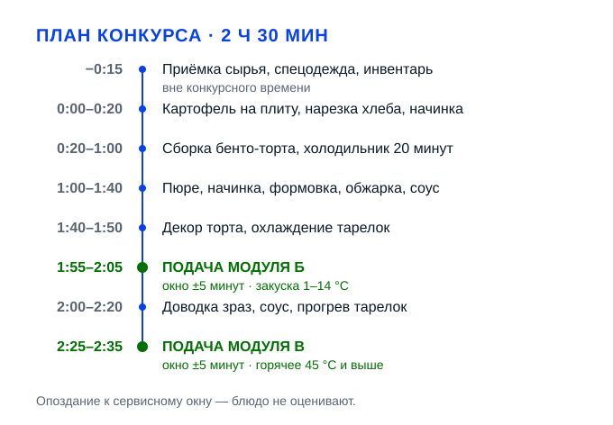
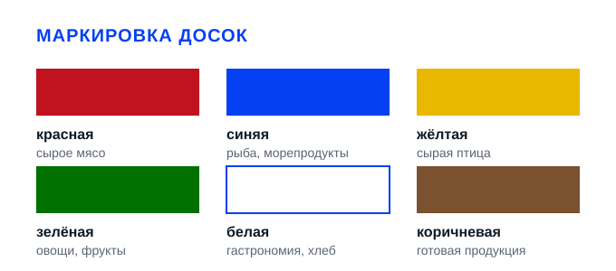
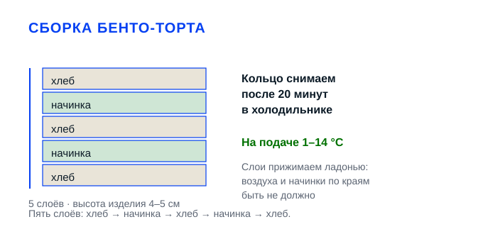
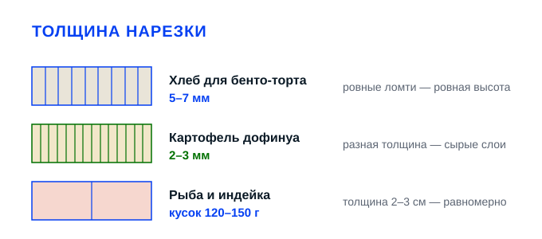
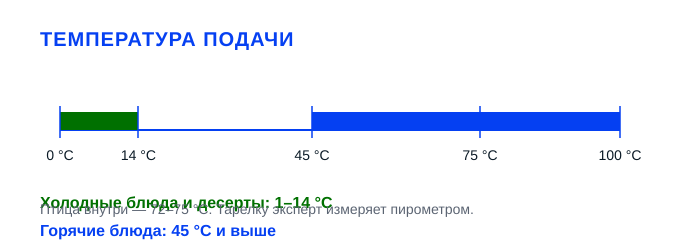
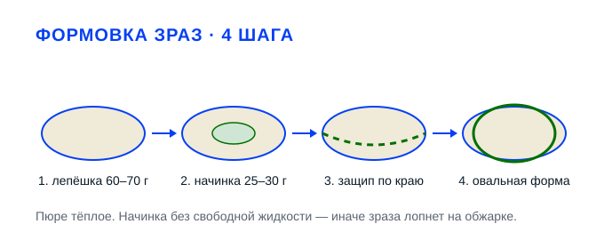
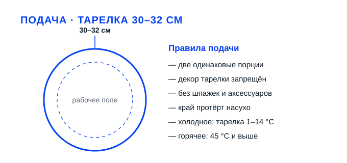

Поварское дело (Р,О)
Задания ниже — официальные файлы «Абилимпикс» (источник: abilympics-russia.ru), разложенные по категориям. Решения написаны по тексту задания, регламенту и критериям оценки; в них указано, что именно проверяет эксперт.
Школьник
14–16 лет, базовый уровень заданияВыдержка из официального конкурсного задания: страницы, относящиеся к категории «Школьник» (стр. 6–11, 21–22 источника).
Пошаговое решение
Решение разобрано по официальному конкурсному заданию регионального чемпионата «Абилимпикс» 2026 для категории «Школьники». Задание разбито на четыре задачи, каждая — на действия, действие — на шаги. В каждом шаге сначала подробно описано, что и как делать (чем резать, под каким углом, до какого состояния), затем — почему именно так, как убедиться, что получилось, что обычно идёт не так и на что смотрит эксперт. Региональный ингредиент из «тайного ящика» объявляют за день до старта: он меняет примерно 30 % задания, поэтому в шагах он назван «региональный ингредиент» — конкретный продукт подставляйте сами.

Задача 1. Организовать рабочее местоМодуль А · 36 баллов
К моменту старта бокс должен работать как маленькое производство: чистая спецодежда, проверенное сырьё, инвентарь, разложенный по зонам, и снятые риски безопасности. Эти баллы не набираются в конце — их снимают и добавляют всё время, пока вы работаете, поэтому организация идёт первым пунктом, а не последним.

Действие 1.1. Войти в бокс по правилам
Шаг 1.1.1
Надеваем полный комплект: куртку или фартук, головной убор, закрытую обувь. Головной убор садится так, чтобы волосы были убраны полностью — и спереди, и на затылке, потому что именно оттуда волос чаще всего и попадает в тарелку. Куртку застёгиваем на все пуговицы, рукава подворачиваем выше локтя: длинный рукав касается продуктов, цепляется за ручки и мешает работать у плиты. Обувь — закрытая, на нескользящей подошве, потому что пол в боксе мокрый, а падение с ножом в руке — это уже не баллы, а травма.
Спецодежда — это отдельный критерий на 3 балла, и эксперт оценивает её не «в целом», а по конкретным признакам: чистая ли, застёгнута ли, убраны ли волосы. Формально выглядывающие волосы — нарушение санитарных требований, и балл снижается независимо от того, насколько хорошо приготовлено блюдо. Кроме того, аккуратный внешний вид задаёт тон: с первой минуты видно, что участник понимает, где он находится.
Отойдите к зеркалу или попросите волонтёра посмотреть со спины. Проверьте три вещи: волос не видно ни спереди, ни сзади; куртка застёгнута и не топорщится; обувь закрытая и сухая. Рукава не спускаются ниже локтя — иначе при работе у плиты они повиснут над продуктами.
Самая частая ошибка — надеть колпак «на макушку», оставив затылок открытым: спереди всё выглядит нормально, а сзади волосы выбиваются. Вторая — прийти в удобной открытой обуви или в футболке, рассчитывая надеть куртку «потом»: время на это уйдёт из модулей, а балл за спецодежду уже потерян.
Эксперт фиксирует соответствие спецодежды до старта, а дальше следит, остаётся ли она чистой по ходу работы: пятна от соуса и мука на груди к середине конкурса тоже считаются.
Шаг 1.1.2
Моем руки с мылом, вытираем одноразовым полотенцем и повторяем это после каждой операции, где соприкасались с сырым продуктом, после уборки и после того, как поправили волосы или лицо. Мыть нужно до запястий, с мылом не меньше двадцати секунд, не забывая большие пальцы и промежутки между пальцами — именно там остаётся больше всего.
Персональная гигиена — самый весомый пункт санитарного блока, 4 балла. Логика простая: сырое мясо и рыба несут бактерии, и если после них взяться за хлеб или зелень, готовое блюдо станет опасным. На чемпионате это тем более важно, что оценивают не только вкус, но и соблюдение норм — а испорченное блюдо в прямом смысле может стоить участнику дисквалификации.
Руки сухие, полотенце использованное и сразу выброшено, а не положено на стол. Проверить себя легко: если вы только что трогали рыбу и собираетесь резать хлеб — руки надо мыть, даже если внешне они чистые. Это правило «сырое → готовое» и есть главный чек-лист.
Классическая ошибка — протереть руки о фартук: визуально руки сухие, но фартук становится переносчиком, и эксперт это видит. Вторая — помыть руки один раз в начале и считать вопрос закрытым: оценивается процесс, а не стартовое состояние.
Эксперт смотрит на руки в течение всего конкурса, а не только на входе, и отдельно отмечает, меняются ли перчатки и моется ли инвентарь после сырого продукта.
Шаг 1.1.3
Снимаем часы, кольца, браслеты, длинные серьги; ногти коротко подстрижены, без покрытия и без лака. Волосы, если они длинные, дополнительно закалываем под колпак — одного колпака иногда мало, и это нормально.
Под украшениями остаются загрязнения, которые не смываются обычным мытьём рук, а камень из кольца или звено браслета могут попасть в фарш или тесто. Для блюда, которое потом пробуют эксперты, это не мелочь: посторонний предмет в тарелке — немедленное обнуление модуля и объяснение с главным экспертом.
Руки осмотрены: украшений нет, ногти короткие, покрытия нет. Если кольцо снимается тяжело — снимайте заранее, дома, а не в боксе за минуту до старта.
Оставить обручальное кольцо «оно же не мешает» — самое частое. На категории «Школьники» это проверяют на входе, и объяснение «я привык» не принимается.
Отдельный пункт в чек-листе санитарии: эксперт проверяет руки до старта и в процессе.
Действие 1.2. Принять и проверить сырьё
Шаг 1.2.1
Получаем корзину и сверяем её с перечнем сырья: каждая позиция, вес, количество, целостность упаковки. Удобно взять список и отмечать карандашом — так видно, что уже проверено, а что нет. На приёмку даётся 15 минут до старта, и это время вне конкурса, то есть тратить его на готовку нельзя и не нужно.
Приёмка — единственный момент, когда не хватающее ещё можно получить. После старта замена идёт только через главного эксперта, и то если он сочтёт причину уважительной. Пятнадцати минут хватает, чтобы спокойно пройти по списку, но не хватает, чтобы сначала начать готовить, а потом спохватиться.
Все строки списка отмечены, расхождения записаны на бумаге или запомнены точно: чего нет, сколько нет, в каком виде. Если сомневаетесь в весе — взвесьте сразу, весы стоят рядом.
Начать с готовки, не сверив список, — потом в середине работы выясняется, что нет ключевого продукта, и менять план уже поздно. Вторая ошибка — увидеть, что чего-то меньше, и промолчать «обойдусь».
Умение работать по списку и планировать входит в критерий «Организационные навыки» (5 баллов), и эксперт видит, сверялся ли участник с перечнем или импровизировал.
Шаг 1.2.2
Проверяем качество каждого продукта: мясо и рыба холодные (температура не выше 4 °C), поверхность упругая, запах свежий; зелень не вялая, без жёлтых листьев; яйца целые; упаковки не вздутые и не подтёкшие; овощи без гнили и плесени. Рыбу проверяем пальцем: след от нажатия должен восстанавливаться, а не оставаться ямкой.
Из испорченного продукта безопасное блюдо сделать невозможно, а на чемпионате оценивают ещё и соблюдение санитарных норм. Если продукт вызывает сомнение, его нужно заменить до старта — после старта его просто не будет, и весь модуль может развалиться из-за одного компонента.
Проверьте три вещи по каждому скоропортящемуся продукту: температура на ощупь, запах, внешний вид. Сомневаетесь — откладываете в сторону и идёте к эксперту, а не «перерабатываете» в блюдо.
Самая опасная ошибка — взять тёплую рыбу или мясо «на вид нормальные»: внешне они могут выглядеть хорошо, но температура уже нарушена. Вторая — выбросить испорченный продукт молча: его не заменят, и вы останетесь без ингредиента.
Отсутствие брака в работе — 2 балла, но реально ставка выше: некачественный продукт виден и на вкус, и в текстуре.
Шаг 1.2.3
Если чего-то не хватает, продукт испорчен или качество не соответствует, сразу подходим к главному эксперту или его заместителю — не позже чем за 15 минут до старта. Говорим коротко и по делу: что именно, сколько, в чём проблема. Не «у меня всё плохо», а «нет двух яиц из четырёх и рыба тёплая».
Позже претензию не примут: считается, что участник согласился с набором. Кроме того, спокойное и точное обращение — часть оценки коммуникации: эксперт видит, умеет ли участник формулировать проблему, а не паниковать.
Факт обращения зафиксирован экспертом, и вы получили ответ: замену, дополнение или объяснение, почему так и должно быть.
Тянуть до последнего, а потом просить замену за минуту до старта. Или наоборот — начать спорить и требовать, вместо того чтобы объяснить ситуацию.
Наблюдает за коммуникацией и за тем, насколько участник владеет ситуацией.
Действие 1.3. Разложить инвентарь по зонам
Шаг 1.3.1
Раскладываем разделочные доски по цветовой маркировке: красная — сырое мясо, синяя — рыба и морепродукты, жёлтая — сырая птица, зелёная — овощи и фрукты, белая — гастрономия, хлеб и кондитерка, коричневая — готовая продукция. На столе держим только те доски, которые нужны в ближайшей операции, остальные — на стеллаже, чтобы не занимать рабочую поверхность.
Маркировка — это не бюрократия, а способ не перенести бактерии с сырого продукта на готовый. Оценивается она отдельным критерием на 4 балла, и проверяют её не по итоговой фотографии, а в процессе: эксперт смотрит, на какой доске вы режете хлеб после того, как разделывали рыбу.
Проверьте себя простым правилом: если вы сейчас возьмёте продукт, который не будет проходить тепловую обработку (хлеб, зелень, готовое мясо), под ним должна быть доска не красная, не синяя и не жёлтая. И доска должна быть сухой и чистой.
Самая частая ошибка — резать хлеб на доске для мяса: снаружи всё чисто, но это прямое нарушение, и 4 балла уходят. Вторая ошибка — держать на столе все шесть досок сразу: рабочая поверхность загромождена, а это ещё 3 балла.
Эксперт подходит и смотрит на доску в момент работы — важно, что она под продуктом, а не что она лежит в углу «для порядка».
Шаг 1.3.2
Каждой доске — свой нож: овощной для овощей, хлебный (с зубцами) для хлеба, нож для мяса и рыбы. Нож после работы возвращается на место — на магнит, в подставку или на край доски, но не в раковину с грязной посудой.
Один нож на всё — это перекрёстное загрязнение и потеря товарного вида продуктов: после рыбы хлеб пахнет рыбой, а после мяса на зелени остаётся жир. Плюс нож в раковине — это риск порезаться, когда вы туда полезете за посудой, а техника безопасности оценивается тремя баллами.
Проверяйте перед каждой новой операцией: под рукой тот нож, который нужен, и он чистый. Если сомневаетесь — сполосните и вытрите насухо, это быстрее, чем объясняться с экспертом.
Бросить нож в мойку «на потом» — самая частая ошибка и самый частый минус. Вторая — резать хлеб ножом, которым только что работали с рыбой: вкус хлеба это выдаст сразу.
Техника безопасности — 3 балла, и нож в раковине эксперт замечает почти всегда.
Шаг 1.3.3
Весы ставим на сухую ровную поверхность, обнуляем с пустой тарой, рядом держим тару для взвешивания продуктов. Если весы механические — проверьте, что стрелка на нуле и не задевает за ограничитель; если электронные — дождитесь нуля после включения.
Взвешивание — 5 баллов, самый большой пункт в блоке подготовки ингредиентов. Это не только про точность: ровный вес порций даёт одинаковое время приготовления и одинаковый вид на тарелке, а на подаче массу проверяют именно весами.
Показания на нуле с пустой тарой, платформа сухая. Первое взвешивание сделайте до старта — просто чтобы понять, как ведут себя весы и где у них задержка показаний.
Взвешивать «на глаз», а потом досыпать или убирать — потеря времени и баллов; на конкурсе счёт идёт на минуты. Вторая ошибка — ставить весы на мокрый стол: показания плавают.
Эксперт смотрит, пользуетесь ли вы весами вообще: часто участники взвешивают только итоговую порцию, а промежуточные компоненты берут на глаз.
Шаг 1.3.4
Ставим два контейнера: один для пищевых отходов (обрезки, кожура, кости), второй для непищевых (плёнка, бумага, упаковка). Контейнеры должны быть под рукой, но не на рабочей поверхности — под столом или на нижней полке.
Раздельный сбор — 2 балла, и проверяется он визуально, без всяких хитростей: заглянули в оба контейнера и посмотрели, что внутри. Кроме того, когда мусор под рукой и разделён, вы не тратите время на поиски, куда выбросить обрезки, и стол остаётся чистым.
Обрезки — в пищевой, упаковка — в непищевой. Если сомневаетесь, куда отнести конкретный кусок, спросите у волонтёра один раз в начале — дальше будет автоматически.
Складывать всё в один пакет — прямая потеря двух баллов, и это одна из самых обидных потерь, потому что исправляется она одним движением.
Эксперт проверяет контейнеры в течение конкурса и в конце, при уборке.
Шаг 1.3.5
Организуем холодильник: сырьё отдельно от готовой продукции, готовая продукция — выше, сырое мясо и рыба — ниже, всё в закрытой таре. Продукты с сильным запахом (рыба, специи) убираем в отдельные контейнеры, чтобы не пропитать остальное.
Товарное соседство и чистота холодильника — 3 балла. Логика безопасности: если сок сырой рыбы капнет на готовый соус, соус придётся выбросить — а времени на новый уже не будет. Второй момент — запахи: рыба рядом со сливками делает сливки непригодными.
Полки не перегружены, тары закрыты, ничего не течёт, поддон чистый. Если что-то потёкло — протрите сразу, а не в конце.
Поставить открытую тару с рыбой над готовым соусом — грубое нарушение, за которое снимают баллы и делают замечание. Вторая ошибка — забить холодильник так, что дверца не закрывается.
Эксперт открывает холодильник в середине и в конце конкурса и смотрит именно на порядок и разделение сырого и готового.
Действие 1.4. Держать чистоту по ходу работы
Шаг 1.4.1
Вводим правило перехода: закончили работать с сырым продуктом — сменили доску, сменили или вымыли нож, вымыли руки, протёрли стол. Это не разовая уборка, а привычка, которая работает весь конкурс: каждая операция начинается с проверки «доска — нож — руки — стол».
Именно нарушение этого правила чаще всего и обнуляет сразу три критерия: гигиену, рабочие поверхности и безопасность. Причём со стороны это выглядит безобидно — человек просто положил готовый хлеб на доску, где лежала рыба. Но эксперт видит цепочку целиком.
Перед каждой операцией мысленно проговаривайте четыре пункта. Если хоть один не сходится — останавливайтесь и исправляйте, это быстрее, чем переделывать блюдо или объясняться.
Самая частая ошибка — «я потом всё помою»: к концу конкурса грязь накапливается, а вместе с ней уходят баллы. Вторая — мыть руки «демонстративно» один раз, а дальше работать как удобно: эксперта это не убеждает.
Оценивается именно процесс, а не финальная картина: чистый стол в конце не компенсирует нарушения в середине.
Шаг 1.4.2
Протираем рабочую поверхность после каждой операции: после разделки, после работы с тестом, после соуса. Отдельная тряпка для стола, отдельная для посуды; если тряпка стала грязной — берите чистую, а не размазывайте.
Рабочие поверхности — 3 балла. Но дело не только в баллах: липкий от соуса стол замедляет работу, а крошки под доской мешают ровно нарезать. Чистый стол — это скорость и точность.
Стол сухой, крошек и пятен нет, тряпка чистая и на своём месте. Проверка простая: проведите ладонью — если остаётся ощущение жира или липкости, надо протереть ещё раз.
Одна тряпка на всё: ей же вытирают стол, ей же руки, ей же тарелку. Так загрязнение переносится обратно на поверхность, и эксперт это отмечает.
Рабочие поверхности оценивают в середине и в конце конкурса, а не только на входе.
Шаг 1.4.3
Грязную посуду складываем в мойку, чистую — на стеллаж или в отведённое место. Раковину не заваливаем: в ней должна оставаться возможность вымыть руки и быстро сполоснуть нож или доску.
В задании прямо записано, что раковины и рабочие поверхности не должны быть загромождены. Это и баллы (рабочее место — 3 балла), и практическая необходимость: если раковина забита, вы теряете минуты на каждой операции.
В раковине не больше посуды, чем нужно для текущей операции. Чистая посуда не лежит на столе — она на стеллаже.
Копить гору посуды до конца: к моменту подачи её некуда ставить, а мыть приходится в спешке, когда до окна остаются минуты.
Эксперт смотрит на раковину в течение конкурса; в финале оценивается уже итоговая уборка.
Задача 2. Приготовить и подать бенто-тортМодуль Б · 25 баллов · подача через 2 часа
Нужно подать две одинаковые порции холодной закуски массой от 300 до 500 граммов каждая: по одному изделию на белой круглой плоской тарелке диаметром 30–32 сантиметра, температура тарелки от 1 до 14 градусов. Декор самой тарелки и любые несъедобные элементы — запрещены. Начинка обязательно включает региональный ингредиент из «тайного ящика».

Действие 2.1. Подготовить хлеб
Шаг 2.1.1
Режем хлеб ломтями толщиной 5–7 миллиметров. Резать удобнее хлебным ножом с зубцами, движением «пила», не нажимая сильно: так ломоть не сминается и не рвётся. Каждый следующий ломоть стараемся сделать таким же, как предыдущий — прикладываем их друг к другу и смотрим на просвет, чтобы толщина совпадала. Кривые ломти откладываем в сторону: они пойдут на крошку для декора, но не в сборку.
Толщина напрямую определяет высоту торта и ровность среза. Если один ломоть 4 мм, а другой 9, слои пойдут волной, и при нарезке готового изделия начинка начнёт выдавливаться то с одной стороны, то с другой. Ровные ломти — это ещё и предсказуемое время: вы понимаете, сколько слоёв поместится в форму и какой высоты получится изделие.
Приложите три ломтя друг к другу: просветы между ними должны быть одинаковыми. Если сомневаетесь — измерьте линейкой или просто отложите ломти стопкой и сравните высоты. Ровная стопка — верный признак, что нарезка получилась.
Резать мятый, слишком свежий хлеб крупными кусками: ломти ломаются, слои «поедут», а на срезе будет видна рваная текстура. Вторая ошибка — резать тёплый или только что принесённый из холода хлеб, не дав ему полежать пару минут.
Навыки кулинарной обработки продуктов — 3 балла в этом модуле, и ровная нарезка — первое, что бросается в глаза.

Шаг 2.1.2
Если хлеб очень мягкий и влажный, ломти стоит подсушить: 2–3 минуты в духовке при 150 градусах, разложив на противне в один слой. Цель — не сухарь, а плотная корочка на поверхности: ломоть должен гнуться, но не размокать от начинки. После духовки обязательно даём ломтям полностью остыть, иначе конденсат останется внутри и размягчит хлеб обратно.
Бенто-торт стоит в холодильнике минимум 20 минут, а потом его режут и переносят на тарелку. Если хлеб слишком нежный, за это время он напитается влагой от начинки и развалится под ножом. Подсушка — простой способ дать конструкции запас прочности без изменения вкуса.
Возьмите остывший ломоть, согните его: он должен пружинить, а не трескаться. Если ломается — пересушили, такие ломти в сборку не годятся. Если размокает от прикосновения — наоборот, надо ещё пару минут в духовке.
Сушить до состояния «сухарь»: при нарезке торт раскрошится, а на срезе будет много крошки. Вторая ошибка — ставить в духовку с начинкой рядом или не давать остыть.
Текстура всех компонентов — 3 балла; плотный, но мягкий хлеб даёт ровный срез.
Шаг 2.1.3
Нарезку храним под плёнкой или чистым полотенцем, не на открытом воздухе. Если до сборки больше десяти минут — убираем в контейнер с крышкой, но не в холодильник к рыбе или специям: хлеб мгновенно впитывает запахи.
Заветренный хлеб крошится и портит внешний вид среза, а хлеб, пропитавшийся чужими запахами, выдаёт это на вкусовой оценке. Нарезка — самая уязвимая часть заготовки, потому что у неё большая площадь контакта с воздухом.
Ломти не подсохли снаружи, не пахнут ничем посторонним, не липнут друг к другу. Если появилась сухая корочка — сбрызните водой и на 30 секунд в духовку, это вернёт мягкость.
Оставить нарезку открытой на столе на час — к сборке она уже сухая и ломкая. Или убрать её в холодильник рядом с рыбой — тогда запах останется навсегда.
Вкус и текстура оцениваются в комплексе: испорченный хлеб чувствуется сразу.
Действие 2.2. Сделать начинку
Шаг 2.2.1
Разбираем региональный ингредиент из «тайного ящика»: смотрим, что это — овощ, мясо, рыба, сыр, крупа или что-то необычное, и решаем, какая обработка ему нужна. Овощ скорее всего нужно приготовить или замариновать, мясо — довести до готовности, сыр или зелень могут пойти в холодном виде. Пробуем продукт сырым: так понятно, нужна ли ему кислотa, соль, сладость или, наоборот, нейтральная основа.
Это 30 процентов изменения задания: начинка должна быть авторской, но построенной именно на этом продукте. Эксперт проверяет, использован ли обязательный ингредиент, и если региональный продукт лежит в блюде «для галочки» в количестве двух граммов, это видно и по вкусу, и по составу.
Продукт подготовлен и попробован, вы понимаете его вкус и представляете, как он сочетается с хлебом и с остальными компонентами. Проще всего сформулировать вслух: «это будет солёная основа, значит нужна свежесть и немного кислоты».
Игнорировать «тайный ящик» и сделать начинку только из привычных продуктов — прямое нарушение задания. Вторая ошибка — положить региональный ингредиент, не попробовав его: если он слишком солёный или острый, исправить начинку будет уже сложно.
Использование обязательных ингредиентов — 2 балла в модуле, и знания об ингредиентах эксперт проверит вопросом, что внутри и почему именно так.
Шаг 2.2.2
Готовим начинку: если продукт требует тепловой обработки — обжариваем, тушим или запекаем до полной готовности, затем обязательно остужаем. Если продукт холодный по природе (сыр, овощ, зелень) — нарезаем мелко, чтобы он не выпирал из слоя. Дальше измельчаем или пробиваем до состояния пасты: начинка должна намазываться, а не лежать кусками.
Тёплая начинка распаривает хлеб и даёт конденсат внутри торта: за 20 минут в холодильнике это превратится в мокрый слой, который развалится при нарезке. Кроме того, тёплая начинка пахнет сильнее и перебивает остальные компоненты, а на холодной закуске вкус должен читаться целиком.
Начинка комнатной температуры или холоднее, держит форму ложки, не течёт. Проверьте проведением борозды: след остаётся, но масса не расползается обратно, как вода.
Собирать торт с горячей начинкой — он «поплывёт» и потечёт на тарелку, а на срезе не будет слоёв. Вторая ошибка — сделать начинку слишком жидкой: она выдавится по краям при прижиме слоёв.
Вкус и текстура — по 3 балла; эксперт пробует начинку отдельно и в составе торта.
Шаг 2.2.3
Доводим начинку до нужной консистенции и баланса. Если она жидковата — увариваем или добавляем плотный компонент (тёртый сыр, варёное яйцо, хлебную крошку); если суховата — немного масла, сливок или овощного пюре. Соль кладём чуть смелее, чем в горячее блюдо: в холодной закуске солёность чувствуется слабее. В конце регулируем кислоту (лимон, уксус, сок) и перец.
Начинка должна держать слой: слишком жидкая выдавится, слишком плотная не даст торту «склеиться» и будет выкрашиваться при нарезке. Баланс вкуса важен потому, что хлеб нейтрален: вся вкусовая нагрузка ложится именно на начинку.
Проведите ложкой по начинке: борозда держится, но масса не сухая и не резиновая. Попробуйте на кусочке хлеба — это ровно то, как начинка будет ощущаться в торте, и так проще всего поймать нехватку соли или кислоты.
Не посолить вообще: в холодном блюде это чувствуется как «пресность», и оценка за вкус падает. Или наоборот — пересолить, потому что пробовали горячим.
Знания об ингредиентах — 2 балла: спросят, что внутри и почему именно так.
Действие 2.3. Собрать торт
Шаг 2.3.1
Ставим на доску кольцо или разъёмную форму нужного диаметра и застилаем её плёнкой так, чтобы края плёнки выходили выше кольца. Проверяем, что кольцо стоит ровно, не покачивается и диаметр соответствует вашей задумке: если форма меньше тарелки в два раза — изделие потеряется, если больше — не влезет в порционный вес.
Форма задаёт ровный цилиндр. Без неё бока будут «гулять», срез получится кособоким, а высота — разной с разных сторон. Кроме того, кольцо помогает утрамбовать слои равномерно по всей площади, а не только в центре, куда удобнее давить рукой.
Кольцо стоит ровно, плёнка не выглядывает выше края больше чем на пару сантиметров, дно застелено. Если кольцо шатается — подложите под него полотенце или выберите другую доску, на неровной основе слои уйдут в сторону.
Собирать «на глаз» без формы: срез будет кособоким, а на тарелке изделие начнёт заваливаться на один бок. Вторая ошибка — забыть плёнку и потом не суметь вынуть торт из кольца.
Внешний вид и стиль — 3 балла, и ровная геометрия — их основа.
Шаг 2.3.2
Выкладываем слои по схеме: хлеб, начинка, хлеб, начинка, хлеб. Начинку распределяем ровным слоем 8–10 миллиметров, доводя до самого края кольца: удобнее всего ложкой, а потом разравнивать силиконовой лопаткой или тыльной стороной ножа. Каждый слой хлеба кладём так, чтобы он перекрывал стыки предыдущего — как кирпичная кладка.
Пять слоёв дают высоту, при которой изделие читается именно как «торт», а не как бутерброд, и одновременно стабильную конструкцию. Перекрытие стыков — приём из кладки: если все стыки окажутся друг над другом, торт развалится по этой линии при нарезке.
Слои параллельны, начинка не сходит на одну сторону, высота одинаковая по всей площади. Посмотрите на кольцо сбоку: граница начинки должна быть горизонтальной линией, а не наклонной.
Класть начинку «горкой» в центр — края останутся пустыми, и на срезе будет видно пустоту. Вторая ошибка — жалеть начинку: тонкий слой не держит слои, они съезжают.
Внешний вид и текстура — по 3 балла; срез должен читаться: хлеб, начинка, хлеб.
Шаг 2.3.3
Прижимаем каждый слой ладонью — мягко, но уверенно, чтобы вышел воздух, а начинка не выступила по краям. Давить лучше всей ладонью, а не пальцами: так усилие распределяется равномерно. Если начинка всё-таки выдавилась, убираем её чистой лопаткой и протираем край кольца, чтобы она не застыла снаружи некрасивой полосой.
Воздух внутри — это провалы в срезе и «шатающийся» торт: при нарезке нож проваливается в пустоту, слой ломается. Прижатие делает конструкцию монолитной, и именно поэтому торт потом режется ровно, а не разъезжается под ножом.
Срез пробного края плотный, без полостей; при наклоне ничего не шевелится. Если слышно «чавканье» при нажатии — воздуха слишком много, прижмите сильнее или добавьте начинки.
Давить слишком сильно: начинка выдавится и испачкает бока, а слои хлеба сомнутся и станут тонкими. Вторая ошибка — не прижимать вообще, боясь испортить вид.
Текстура всех компонентов — 3 балла: она оценивается именно в готовом срезе.
Шаг 2.3.4
Убираем форму в холодильник минимум на 20 минут. За это время начинка схватывается, торт держит форму при снятии кольца и нарезке, а температура уходит в норму: на подаче тарелка должна быть от 1 до 14 градусов. Ставим на ровную полку, не прижимая к задней стенке, где холоднее всего.
Без охлаждения начинка не схватится, и при снятии кольца торт развалится прямо на доске. Плюс температура: если подать тёплое изделие, эксперт зафиксирует нарушение по температурному критерию, а это отдельные 2 балла.
Через 20 минут кольцо снимается без усилия, бока ровные и не оплывают. Потрогайте тарелку, на которой стоял торт: она должна быть заметно холодной.
Снимать кольцо сразу после сборки — торт развалится на тарелке. Вторая ошибка — передержать в холодильнике рядом с рыбой: хлеб впитает запах.
Температура тарелки на подаче — 2 балла, её измеряют пирометром.
Действие 2.4. Оформить, взвесить и подать
Шаг 2.4.1
Снимаем кольцо: аккуратно подрезаем ножом по внутреннему краю, если есть сцепление, и снимаем кольцо строго вверх, не разводя его в стороны. Затем тонким ножом, смоченным в горячей воде и вытертым насухо, срезаем неровные края и выравниваем бока. Каждое движение — от себя или к себе, но не «туда-сюда»: пилящие движения оставляют рваный след.
Ровный срез — первое, что оценивают в презентации, и заодно признак того, что конструкция собрана правильно. Кроме того, после снятия кольца видно, как легли слои: если они ушли волной, исправить это уже нельзя, но можно замаскировать декором.
Бока вертикальные, верх горизонтальный, слои читаются как ровные полосы. Проведите взглядом по линии слоя: она должна идти горизонтально, а не «нырять» вниз.
Оставить «ступеньку» от формы или срезать ножом «на себя» без упора — край получится волнистым. Вторая ошибка — резать тупым ножом: он мнёт хлеб.
Правильность подачи и внешний вид — по 2–3 балла.
Шаг 2.4.2
Украшаем только съедобными продуктами из списка сырья: зелень, соус, крошка, тонкие слайсы овощей, семена. Всё, что не является едой — шпажки, зубочистки, бумага, фигурки, зонтики, ленты — на тарелке и в изделии запрещено. Декор выкладываем пинцетом или кончиком ножа, не руками: пальцы оставляют следы и сминают поверхность.
Задание прямо запрещает несъедобные элементы при подаче, и это одна из самых частых потерь баллов: участник «для красоты» втыкает шпажку и теряет оценку за подачу. Съедобный декор при этом никто не запрещает — им и надо пользоваться.
На тарелке и в изделии только продукты из перечня, декор не закрывает слои и не превращает торт в «салат». Если сомневаетесь, можно ли использовать продукт — спросите у эксперта до подачи.
Воткнуть шпажку «для красоты» — прямое нарушение, снимают баллы за подачу. Вторая ошибка — перегрузить декором так, что не видно самого изделия.
Правильность подачи — 2 балла, внешний вид и креативность — 3 балла.
Шаг 2.4.3
Разрезаем изделие на две равные части и взвешиваем каждую: масса порции должна быть от 300 до 500 граммов. Взвешиваем на весах, а не «на глаз»: разница в 50 граммов уже видна эксперту, а весы показывают её сразу. Если одна часть тяжелее — подравниваем, а не оставляем «как есть».
Масса — измеримый критерий на 2 балла, её проверяют весами при подаче. Кроме того, одинаковый вес — это и одинаковый вид: две тарелки должны выглядеть как близнецы, иначе композиция «разъезжается».
Обе порции в диапазоне 300–500 г и максимально близки друг к другу. Запишите вес, если он близок к границе: лучше знать заранее, чем узнать от эксперта.
Отдать 250 граммов («и так много») — ниже нормы, минус. Или положить 550 — выйти за верхнюю границу и получить замечание за расточительность.
Эксперт взвешивает именно поданные тарелки, а не ваши заготовки на доске.
Шаг 2.4.4
Охлаждаем тарелки в холодильнике и протираем край насухо перед выкладкой. Тарелка должна быть холодной — от 1 до 14 градусов. Ставим её в холодильник заранее, минимум за 10 минут до подачи, а не ищем холодную в последний момент.
Холодная закуска на тёплой тарелке «потеет»: появляется конденсат, декор плывёт, а температура блюда быстро уходит из нормы. Это отдельный критерий на 2 балла, и проверяется он термометром или пирометром.
Тарелка на ощупь холодная, конденсата нет, край сухой и без отпечатков. Если тарелка тёплая — лучше подержать её в холодильнике ещё пару минут, чем подать тёплой.
Подать на комнатной тарелке — потерять 2 балла и получить «потёкший» вид. Вторая ошибка — охладить тарелку, но оставить её в тёплом месте перед подачей.
Температура тарелки — 2 балла; чистота тарелки — ещё 2.
Шаг 2.4.5
Подаём в сервисное окно: оно открывается за 5 минут до расчётного времени и закрывается через 5 минут после. Для модуля Б это окно с 1:55 до 2:05. На тарелку кладём по одному изделию, тарелки — белые, круглые, плоские, диаметром 30–32 сантиметра, без декора. Обе тарелки выносим одновременно и поднимаем руку — это официальный сигнал, что блюдо готово.
Окно ±5 минут — жёсткое правило: раньше или позже блюдо просто не оценивают. Одновременная подача важна потому, что оценивают обе тарелки как одну работу: если вторая приедет через три минуты, первая уже «остынет» в глазах экспертов и потеряет вид.
Обе тарелки идентичны по весу, виду и декору, край чистый, декор тарелки отсутствует, время в пределах окна. Проверьте перед выносом: вес, чистоту края, отсутствие шпажек.
Опоздать на 10 минут из-за «ещё одного штриха» — потерять весь модуль. Вторая ошибка — подать одну тарелку и побежать за второй.
Время подачи — 3 балла, и оно фиксируется по факту, а не по вашим часам.
Задача 3. Приготовить и подать картофельные зразы с соусомМодуль В · 30 баллов · подача через 2 ч 30 мин
Нужно подать две одинаковые порции горячего блюда: картофельные зразы с начинкой из регионального ингредиента, с соусом, на подогретой тарелке диаметром 30–32 сантиметра. Температура блюда и тарелки — не ниже 45 градусов. Пюре варим из свежего картофеля, начинку обязательно пробуем, зразы формуем вручную и обжариваем до золотистой корочки.

Действие 3.1. Подготовить и сварить картофель
Шаг 3.1.1
Моем картофель, чистим и нарезаем крупными кусками — примерно одинаковыми, по 4–5 сантиметров. Глазки и тёмные пятна вырезаем полностью, а не «зачищаем» поверху: в них остаётся земля и горечь. Порезанный картофель сразу заливаем холодной водой, иначе он темнеет на воздухе и вид пюре будет серым.
Одинаковые куски варятся одновременно: мелкие успевают развариться в кашу, пока крупные ещё сырые внутри. А когда крупный кусок остаётся сырым в центре, его потом не размять в пюре — останутся комки, и зраза будет рваться именно по ним.
Куски на ладони выглядят примерно одного размера, глазки и повреждения вырезаны. Если попался очень крупный клубень — разрежьте его вдоль на две-четыре части, а не кладите целиком.
Оставить куски разного размера: мелкие разварятся в «пюре-клейстер», крупные останутся сырыми внутри. Вторая ошибка — чистить заранее и держать очищенный картофель в воде полчаса: он набирает воду и потом даёт водянистое пюре.
Навыки кулинарной обработки — 3 балла; равномерная варка начинается с ровной нарезки.
Шаг 3.1.2
Заливаем картофель холодной водой так, чтобы она покрывала куски на пару сантиметров, солим воду и ставим на сильный огонь. После закипания убавляем до умеренного, чтобы вода не бурлила ключом, и варим 25–30 минут. Соль в воде — важная деталь: она не даёт картофелю развариться снаружи, пока центр доходит.
Холодная вода и постепенный нагрев дают равномерный прогрев по всему объёму. Если бросить картофель в кипяток, снаружи он instantly размягчится и начнёт разваливаться, а внутри останется плотным. Именно поэтому варка занимает почти полчаса, и это время нужно планировать заранее.
Нож входит в центр куска без усилия, кусок при этом не разваливается в кашу. Проверять лучше самым крупным куском — если он готов, готовы и остальные.
Варить в бурлящем кипятке: снаружи «размазня», внутри сырое. Вторая ошибка — проверять готовность только по времени, не пробуя ножом.
Планирование и приёмы тепловой обработки — 5 баллов в блоке организации.
Шаг 3.1.3
Сливаем воду полностью — через дуршлаг или аккуратно через край кастрюли, придерживая картофель крышкой. Затем возвращаем кастрюлю на выключенную, но ещё горячую плиту на 30–60 секунд без крышки, чтобы вышел пар. Кастрюлю держим наклонённой, чтобы влага испарялась с поверхности, а не скапливалась на дне.
Остаточная вода — главная причина водянистого пюре. Если вода осталась, пюре придётся досушивать на огне, а это лишние минуты и риск подгорания. Просушка — простой шаг, который экономит время потом.
На дне кастрюли сухо, пар выходит, картофель подсох снаружи и покрылся тонкой мучнистой корочкой. Если на дне осталась лужица — слейте ещё раз и верните на огонь на полминуты.
Слить и сразу толочь — лишняя вода останется в массе, и зразы придётся «спасать» мукой. Вторая ошибка — держать картофель в воде «до момента»: он набирает влагу.
Отсутствие брака в работе — 2 балла; водянистое пюре — это уже брак.
Действие 3.2. Сделать пюре
Шаг 3.2.1
Протираем горячий картофель через сито или тщательно толчём толкушкой — но не блендером. Если есть сито, это лучший вариант: масса получается однородной и воздушной. Толкушкой работаем короткими движениями, не «взбивая» массу, а разминая её, иначе пюре станет тягучим.
Блендер превращает крахмал в клейстер: пюре начинает тянуться нитями и становится резиновым, из него уже не сформировать зразу — она будет «плыть» и рваться. Это не вкусовой каприз, а физика крахмала, и исправить это мукой невозможно.
Масса однородная, без комков, не тянется нитями и не блестит как клей. Проведите ложкой: след должен оставаться, а не заплывать.
Пробить блендером «для гладкости» — получить резину, из которой не слепить зразу. Вторая ошибка — тереть остывший картофель: масса становится клейкой.
Текстура — 3 балла, и она формируется именно на этом шаге.
Шаг 3.2.2
Добавляем горячее молоко (или сливки) и сливочное масло, солим и перемешиваем. Молоко вводим постепенно, по частям, каждый раз перемешивая: так проще поймать нужную консистенцию и не перелить. Масло кладём в тёплое пюре — оно должно полностью растаять и вмешаться.
Жир делает массу пластичной: без него пюре крошится и не держит форму. Горячее молоко не даёт пюре «сесть» и стать серым — на холодном молоке масса крупитчатая и тусклая. Постепенность важна потому, что перелитое молоко уже не убрать.
Пюре мягкое, эластичное, не прилипает к стенкам кастрюли, ложка входит с усилием, но не стоит колом. Попробуйте: должно быть вкусно уже на этом этапе, а не «потом посолим».
Влить холодное молоко — пюре станет серым и крупитчатым. Или сразу вылить всё молоко и получить жижу, которую придётся досушивать.
Вкус и текстура — по 3 балла, и пюре — основа всей зразы.
Шаг 3.2.3
Проверяем консистенцию и доводим её до рабочей: лепёшка лепится, держит форму, но не трескается при сгибе. Если масса липнет к рукам — подсушиваем на слабом огне 1–2 минуты, помешивая. Если, наоборот, рассыпается — добавляем немного масла или молока.
Слишком плотное пюре треснет при формовке, и на обжарке зраза развалится по трещине. Слишком мягкое не удержит начинку и расползётся в масле. Рабочая консистенция — это когда масса похожа на мягкий пластилин.
Скатайте шарик размером с грецкий орех: он держится, не растекается и не липнет к ладони. Сплющите его в лепёшку — трещин по краю быть не должно.
Добавлять муку «для плотности» горстями: вкус становится клейким, а критерий «вкус» падает. Мука — крайняя мера, и лучше досушить массу на огне.
Вкус — 3 балла: мучное пюре чувствуется сразу.
Шаг 3.2.4
Остужаем пюре до тёплого состояния — примерно 35–40 градусов, когда масса уже не обжигает запястье. Накрываем, чтобы не заветрилось: сверху образуется корочка, которая потом пойдёт комками. Остывает пюре быстро, если разложить его тонким слоем на доске или в широкой миске.
На горячем пюре невозможно сформировать ровную лепёшку: обжигает руки, масса «плывёт», начинка выдавливается. Но и полностью холодное пюре плохо лепится — оно крошится. Тёплое — рабочий диапазон.
Масса тёплая, но не обжигает, лепится уверенно, не липнет к ладоням. Если торопитесь — разложите пюре по доске и подождите 3–4 минуты, это быстрее, чем остужать в миске.
Работать с горячим пюре в перчатках: лепёшка рвётся, а руки всё равно чувствуют жар. Вторая ошибка — остудить до холода и потом мучиться с трескающейся массой.
Планирование и аккуратность — часть критериев модуля А.
Действие 3.3. Приготовить начинку
Шаг 3.3.1
Разбираем региональный ингредиент из «тайного ящика»: определяем, что это, требует ли он тепловой обработки, сколько даёт жидкости и как сочетается с луком и томатом. Пробуем его отдельно, чтобы понять вкус: солёный, острый, кислый, нейтральный. Дальше решаем, будет он основой начинки или добавится как акцент.
Начинка — обязательный элемент задания: без регионального ингредиента модуль не засчитывают, как бы хорошо ни были сделаны зразы. При этом важно не «спрятать» продукт в общую массу, а дать ему читаться — иначе эксперт отметит, что продукт использован формально.
Продукт подготовлен, попробован, и вы понимаете, сколько его по вкусу нужно: если он яркий — меньше, если нейтральный — больше. Соотношение с луком примерно три к одному по объёму, если продукт сочный.
Положить региональный ингредиент «для галочки» в малом количестве — эксперт это отметит и по вкусу, и по составу. Вторая ошибка — не попробовать продукт заранее и пересолить всю начинку.
Использование обязательных ингредиентов — 2 балла в модуле; вкус начинки — отдельная позиция.
Шаг 3.3.2
Обжариваем лук (и другие овощи, если они в начинке) до прозрачности и мягкости на среднем огне, затем добавляем основной продукт и доводим до готовности. Лук нарезаем мелким кубиком, чтобы он не выпирал из начинки и успел приготовиться одновременно с остальным. Если продукт уже готов к употреблению, его добавляем в конце и только прогреваем.
Лук отдаёт сладость и сочность — без него начинка получается сухой и пресной, а зраза с сухой начинкой плохо естся и хуже оценивается по текстуре. Обжарка до прозрачности нужна, чтобы убрать резкий вкус и лишнюю влагу: сырой лук в начинке даёт неприятный привкус.
Овощи мягкие и прозрачные, основной продукт готов, лишней жидкости на сковороде нет. Если жидкость осталась — выпариваем её на сильном огне, помешивая, а не сливаем: вместе с ней уйдёт вкус.
Оставить начинку водянистой: при обжарке зраза лопнет, и начинка вытечет в масло. Вторая ошибка — пережарить лук до горечи, это чувствуется в готовом блюде.
Текстура и вкус начинки оцениваются вместе с самой зразой.
Шаг 3.3.3
Солим, перчим, при необходимости увариваем жидкость, остужаем до тёплого и обязательно пробуем. Солим чуть смелее, чем кажется нужным: в холодной начинке и в картофельной оболочке соль чувствуется слабее, чем в чистом виде. Если продукт кислый — добавьте щепотку сахара, если слишком пресный — немного обжаренного лука или зелени.
Тёплая начинка размягчит пюре изнутри, и зраза поплывёт при формовке. Кроме того, недосоленная начинка при дегустации читается как «пресная зраза», даже если пюре посолено хорошо.
Начинка держит форму комочка, не течёт, вкус ровный: соль, кислота и жир сбалансированы. Проверьте на маленьком кусочке пюре с начинкой — так вкус ближе к готовому блюду.
Не остудить начинку: тёплая размягчит пюре, и зраза развалится ещё до сковороды. Вторая ошибка — не пробовать вообще и подать пресное блюдо.
Вкус всех компонентов — 3 балла, и он складывается именно здесь.
Действие 3.4. Сформовать зразы
Шаг 3.4.1
Отвешиваем лепёшки по 60–70 граммов. Удобно сначала набрать всю массу на весы и разделить на равные части, а потом скатать шары. Шары накрываем полотенцем, чтобы не заветривались, пока работаем с остальными.
Ровный вес даёт одинаковое время обжарки и одинаковый вид на тарелке. Когда лепёшки разного размера, мелкие успевают пересохнуть, пока крупные ещё прожариваются, и на подаче это видно.
Все шары близкого веса, поверхность гладкая, без трещин. Если шар трескается — пюре суховато, добавьте немного масла и перемешайте.
Лепить «на глаз»: разные зразы приготовятся по-разному, и на тарелке будет «разнокалиберная» порция. Вторая ошибка — держать шары открытыми: они сохнут.
Взвешивание — 5 баллов в модуле А; ровные порции — часть этого критерия.
Шаг 3.4.2
В центр лепёшки кладём 25–30 граммов начинки. Лепёшку расплющиваем в кружок толщиной около сантиметра, начинку кладём в середину так, чтобы до края оставалось полтора-два сантиметра свободного пюре. Начинку слегка прижимаем, чтобы она легла плотно и не двигалась.
Слишком много начинки — зраза рвётся по шву, слишком мало — вкус становится «хлебным», а на разрезе видна пустота. Свободный край нужен, чтобы защипнуть его без начинки внутри: если начинка попадёт в шов, он не склеится.
Начинка в центре, края свободны, лепёшка ровная по толщине. Если начинка вылезла на край — уберите её и подровняйте лепёшку, иначе шов не схватится.
Забить начинкой всю лепёшку: защипнуть край невозможно, и зраза раскроется на сковороде. Вторая ошибка — класть начинку комком в середину, оставляя толстые края: они не прожарятся.
Текстура и вкус — по 3 балла, и баланс «пюре/начинка» — их основа.
Шаг 3.4.3
Поднимаем края и защипываем: сначала сводим противоположные края, потом остальные, аккуратно прижимая пальцами. Затем придаём овальную форму — ладонями, слегка приплюскивая и разглаживая шов. Шов должен стать тонким и ровным, почти невидимым после панировки.
Шов — слабое место: при обжарке именно он расходится первым, особенно если толщина неровная. Разглаживание шва нужно ещё и для вида: на тарелке грубый рубец выглядит небрежно.
Шов тонкий, ровный, не выступает над поверхностью. Проведите по нему пальцем: он не должен цепляться. При наклоне зразы начинка не показывается.
Оставить «толстый» шов: он не прожарится и будет чувствоваться во вкусе как сырое тесто. Вторая ошибка — защипывать мокрыми руками: пюре липнет и шов расползается.
Внешний вид — 3 балла; аккуратная форма видна на тарелке сразу.

Шаг 3.4.4
Панируем в муке или сухарях тонким слоем, стряхивая лишнее. Удобно делать это через сито: панировка ложится ровно и не комкуется. Сразу после панировки кладём зразы на доску, не прижимая друг к другу, иначе панировка сминается.
Панировка держит сок и даёт корочку, но только если она тонкая. Толстый слой остаётся сырым на вкус и впитывает масло: зраза получается жирной, а корочка — мягкой вместо хрустящей.
Панировка тонкая, равномерная, без комков, поверхность сухая. Если панировка слезает комками — стряхните и пройдитесь ещё раз, но тоньше.
Много панировки: блюдо становится «мучным», текстура и вкус падают. Вторая ошибка — панировать влажные зразы: слой получается неровным и отпадает при обжарке.
Текстура — 3 балла, и панировка здесь ключевая.
Действие 3.5. Обжарить и приготовить соус
Шаг 3.5.1
Ставим сковороду на средний огонь и хорошо разогреваем, затем наливаем масло слоем примерно в сантиметр. Масло должно прогреться, но не дымить: проверяем брошенной крошкой панировки — она должна зашипеть и всплыть, а не лежать на дне и не гореть.
Недогретое масло впитывается в панировку, и зраза получается жирной и мягкой вместо хрустящей. Перегретое — горит, даёт горький вкус и дым, а на конкурсе это ещё и риск срабатывания пожарной сигнализации.
Крошка шипит, всплывает и за секунды золотится. Масло блестит, но не дымит. Если дым пошёл — уберите сковороду с огня и дайте остыть, а не бросайте продукт в горящее масло.
Класть зразы в холодное масло: панировка раскисает и отпадает. Вторая ошибка — лить масло «на глаз» тонким слоем: зраза обжарится неравномерно, с одной стороны подгорит.
Приёмы тепловой обработки — 5 баллов.
Шаг 3.5.2
Обжариваем зразы по 3–4 минуты с каждой стороны до золотистой корочки, не переворачивая лишний раз. Сковороду не накрываем крышкой: под крышкой панировка отмокает. Кладём зразы так, чтобы между ними оставалось расстояние — иначе они начнут тушиться в собственном соку.
Золотистая корочка — это и вкус, и критерий «внешний вид». Переворачивание каждые полминуты не даёт корочке схватиться, а теснота превращает обжарку в тушение: зраза бледная и мягкая.
Корочка ровная, золотистая, зраза держит форму, при нажатии лопаткой пружинит. Если корочка бледная — огонь слабый, если тёмная — сильный.
Жарить на максимальном огне «чтобы быстрее»: снаружи горит, внутри сыро. Вторая ошибка — накрыть крышкой и уйти к другому делу.
Внешний вид блюда — 3 балла; корочка — первое, что видно.
Шаг 3.5.3
Готовим соус: обжариваем мелко нарезанный лук до мягкости, добавляем томат (паста, пюре или свежие помидоры), прогреваем 2–3 минуты, вливаем немного воды или бульона и увариваем до густоты. В конце — соль, перец, зелень. Соус должен стекать с ложки медленно, а не литься струёй.
Соус в этом задании — не гарнир «для красоты», а обязательный компонент с отдельной оценкой вкуса. Жидкий соус растекается по тарелке и пачкает край, а слишком густой не даёт «намакнуть» и выглядит как паста.
Соус держится на ложке, не растекается по тарелке при наклоне, вкус сбалансирован. Попробуйте его с кусочком зразы — так видно, не перебивает ли он основное блюдо.
Подать холодный или слишком жидкий соус: он «расплывётся» и испортит композицию. Вторая ошибка — недосолить соус, считая, что «зразы salty».
Вкус и текстура соуса входят в общую оценку блюда — 3 балла.
Шаг 3.5.4
Снимаем зразы на бумажное полотенце, чтобы убрать лишний жир, и держим в тёплом месте до подачи — но не под крышкой, иначе корочка размякнет. Проверяем готовность первой зразы на разрезе: начинка горячая, пюре пропеклось, шов целый.
Бумажное полотенце убирает жир с поверхности — без этого блюдо выглядит и ощущается жирным. Тёплое место нужно потому, что подача горячего блюда требует температуры от 45 градусов: остывшие зразы теряют балл по температуре.
Зраза на разрезе: шов целый, начинка горячая, корочка хрустит. Если шов разошёлся — отложите эту зразу на свою дегустацию, а не на подачу.
Убрать под крышку или в холод: корочка отсыреет, температура упадёт. Вторая ошибка — не проверить первую зразу и подать недожаренную.
Готовность и температура — по отдельным критериям, плюс 3 балла за текстуру.
Действие 3.6. Собрать композицию на тарелке
Шаг 3.6.1
Планируем композицию до того, как что-то положили: где будут зразы, где соус, где зелень. Удобно представить тарелку как циферблат: зразы — на 9 и 3 часа, соус — на 6, зелень — рядом с зразами. Тарелка плоская, круглая, 30–32 сантиметра, поэтому композиция должна занимать центр, а не расползаться к краям.
Подача оценивается по фото и с расстояния вытянутой руки: если композиция выстроена, блюдо читается сразу. Если всё свалено в кучу — даже вкусное блюдо получает меньше баллов за внешний вид, и это самая обидная потеря, потому что она не связана с готовкой.
Наметили места — проверьте, остаётся ли свободный край тарелки шириной хотя бы два пальца. Если композиция упирается в бортик, она выглядит перегруженной.
Выкладывать «как получится» и потом двигать: соус размазывается, следы остаются на тарелке. Вторая ошибка — занять всю тарелку: на плоской тарелке композиция должна дышать.
Внешний вид и стиль — 3 балла.

Шаг 3.6.2
Зразы кладём швом вниз — так они выглядят аккуратнее и не раскрываются на тарелке. Если шов получился заметным, кладём его к центру композиции. Расстояние между зразами — не меньше сантиметра, чтобы они не слиплись и было видно, что порций две.
Шов вверх — это визуальное напоминание о «недоделанной» работе, и эксперт это отметит. Кроме того, шов вниз держит форму: начинка не вытекает под собственным весом.
Зразы лежат ровно, шов снизу, корочка не смята, между ними видно тарелку. Если зраза «качается» — подровняйте основание или переверните.
Класть швом вверх или прижимать зразы друг к другу — композиция выглядит небрежно, корочка мнётся.
Внешний вид — 3 балла, аккуратность раскладки входит в него.
Шаг 3.6.3
Соус наливаем ложкой в отдельную зону, не задевая зразы и край. Если соус густой — можно сделать «каплю» и провести по ней ложкой, чтобы получилась аккуратная дуга. Главное — соус не должен течь по тарелке к бортику.
Соус — это вкус, но и элемент композиции: он задаёт цветовой акцент и показывает, что блюдо собрано. Жидкий соус, растёкшийся по тарелке, выглядит как ошибка и пачкает край, за чистоту которого снимают баллы.
Соус держит форму, не растекается, зразы остаются сухими, край тарелки чистый. Если соус всё-таки потёк — уберите излишек ложкой и протрите край насухо.
Залить зразы соусом сверху: корочка размокает, и текстурный критерий падает. Вторая ошибка — налить соус так много, что он доходит до края.
Текстура и внешний вид — по 3 балла.
Шаг 3.6.4
Добавляем зелень — небольшим пучком или отдельными листьями, не «снопом». Если зелень крупная, рвём руками, а не режем ножом: нож окисляет срез и зелень темнеет. Ставим её так, чтобы она не закрывала зразы и соус.
Зелень даёт свежесть и цвет, но её избыток превращает тарелку в «салат» и закрывает основное блюдо. Рваная зелень выглядит естественнее и не темнеет к моменту дегустации.
Зелень лежит аккуратно, не закрывает основное блюдо, срез свежий, без потемневших краёв. Проверьте: зразы должны оставаться главным элементом композиции.
Набросать зелень «для объёма»: композиция теряет центр, а на вкус зелень начинает перебивать блюдо.
Внешний вид и креативность — 3 балла.
Шаг 3.6.5
Финальная проверка перед выносом: край тарелки протёрт насухо, на тарелке нет капель, крошек и отпечатков пальцев, обе порции одинаковы, температура в норме. Смотрим на тарелку сверху и сбоку — сбоку видно, не «съехала» ли композиция к одному краю.
Последний взгляд со стороны экономит баллы: пятна на краю и разница между порциями — самые частые минусы именно на этом этапе. На конкурсе подача фиксируется, и исправить что-то после выноса уже нельзя.
Все пять пунктов проверены: чистота края, отсутствие капель, одинаковость порций, температура, аккуратный вид сверху и сбоку. Если что-то не сходится — исправляем, пока тарелка на столе.
Вынести тарелку, не посмотрев на неё сверху: пятно на краю видно только под углом, и его замечает эксперт, а не вы.
Чистота тарелки — 2 балла, и это самый простой способ их не потерять.
Действие 3.7. Прогреть тарелки, подать и убрать бокс
Шаг 3.7.1
Прогреваем тарелки: ставим их в тёплое место или обдаём горячей водой и протираем насухо. Тарелка должна быть не ниже 45 градусов — на ощупь горячая, но не обжигающая. Если нет возможности греть, используем тарелки, которые стояли рядом с плитой.
На холодной тарелке горячее блюдо остывает за минуту, и эксперт фиксирует нарушение температурного режима. Это отдельный критерий на 2 балла, и проверяется он пирометром: важно, чтобы тарелка была горячей в момент подачи, а не «была горячей когда-то».
Тарелка горячая на ощупь, сухая, без капель воды. Проверьте перед выкладкой: если остыла — прогрейте снова, это минута.
Подать на холодной тарелке: блюдо остынет, а температура — минус 2 балла. Вторая ошибка — прогреть тарелку, но оставить её на столе остывать.
Температура тарелки — 2 балла.
Шаг 3.7.2
Выкладываем по две зразы на порцию, рядом — соус, при желании немного зелени. Композиция простая и читаемая: зразы не наезжают друг на друга, соус не заливает край тарелки, зелень не лежит «пучком». Край тарелки протираем насухо после выкладки.
Подача оценивается отдельно, и главное в ней — аккуратность. Пятна соуса на краю, зелень, разбросанная по тарелке, или зразы, лежащие друг на друге, сразу снижают оценку, даже если блюдо вкусное.
Две зразы одинакового размера, соус в отдельной зоне, край чистый. Посмотрите на тарелку сверху: композиция должна читаться без объяснений.
Залить всё соусом «чтобы было видно, что он есть»: тарелка выглядит небрежно, а корочка зразы размокает.
Правильность и аккуратность подачи — 2 балла.
Шаг 3.7.3
Подаём в окно 2:25–2:35, обе тарелки одновременно, с поднятой рукой. Перед выносом проверяем: температура, чистота края, наличие соуса на обеих тарелках, отсутствие лишних предметов.
Окно ±5 минут — жёсткое правило, и оно действует так же, как в модуле Б. Одновременная подача нужна потому, что обе тарелки оценивают как одну работу, и разница во времени бросается в глаза.
Обе тарелки вынесены в пределах окна, композиция одинаковая, край чистый. Если одна тарелка «поехала» — лучше вынести обе чуть позже, но вместе.
Опоздать из-за последнего штриха декора или вынести тарелки по одной.
Время подачи — 3 балла, фиксируется по факту.
Шаг 3.7.4
После подачи коротко убираем рабочее место до состояния, в котором его не стыдно показать: стол протёрт, посуда в мойке, инвентарь на местах, полотенца заменены. Эксперт может пройти по боксу после подачи, и порядок входит в общую оценку.
Уборка — не формальность: за рабочее место и санитарию дают баллы, а беспорядок после подачи читается как «участник не довёл работу до конца». Кроме того, чистое место нужно вам же, если предстоит ещё одна подача или дегустация.
Стол чистый, доски вымыты и на местах, ножи убраны, мусор разделён. Проверьте раковину — она должна быть свободной.
Оставить всё «как есть» после подачи: баллы за уборку снимаются, а впечатление от работы портится.
Уборка и организация — часть критериев, до 3 баллов.
Задача 4. Завершить работу и объяснить эксперту, что сделаноМодули А–В · до 9 баллов
Финальная часть конкурса: убрать бокс, сдать инвентарь и коротко, по делу, объяснить эксперту, что и почему было сделано. Здесь баллы уже не набираются готовкой — их дают за порядок и за понимание собственного блюда.
Действие 4.1. Сдать рабочее место
Шаг 4.1.1
Убираем всё по зонам: посуду — в мойку и на сушку, инвентарь — на стеллаж, продукты — в холодильник или в отведённое место, мусор — в раздельные контейнеры. Доски моем и ставим сушиться вертикально, ножи — на магнит или в подставку.
Рабочее место оценивается в конце, и именно здесь теряются баллы, которые легко было сохранить. Вертикальная сушка досок — требование санитарии: на горизонтальной поверхности под доской остаётся вода и размножаются бактерии.
Стол пустой или с минимальным набором, пол сухой, мусор разделён, доски сушатся вертикально, ножи убраны. Пройдите по боксу глазами эксперта: что бы вы отметили сами?
Вымыть посуду, но оставить её в раковине — это не «убрано». Вторая ошибка — свалить инвентарь в кучу «потом разберут».
Уборка — до 3 баллов, и её видно без всяких измерений.
Шаг 4.1.2
Проверяем санитарию: поверхности протёрты, тряпки заменены на чистые, холодильник закрыт и внутри порядок, контейнеры закрыты. Если что-то пролилось — вытираем насухо, а не оставляем «досохнуть».
Санитарное состояние — отдельный критерий, и он проверяется визуально. Мокрый пол — ещё и риск падения, а это уже вопрос безопасности, который оценивают отдельно.
Поверхности сухие и чистые, тряпки чистые, холодильник в порядке, пол сухой. Проверьте углы стола и место под досками — там чаще всего остаётся грязь.
Оставить мокрый стол или пол «досохнуть» — баллы снимаются, а по технике безопасности это нарушение.
Санитария и безопасность — по 3–4 балла.
Шаг 4.1.3
Сдаём инвентарь и остатки сырья по описи, если она есть: считаем и называем, что осталось. Если что-то сломалось или испортилось — говорим сразу, до ухода из бокса.
Честный и точный счёт — часть оценки организации и коммуникации. Если испорченный продукт обнаружат после вас, объясняться будет сложнее, чем сказать сразу.
Остатки посчитаны, опись закрыта, о проблемах сказано. Уходите из бокса с уверенностью, что вопросов к вам нет.
Уйти молча, оставив сломанный инвентарь или испорченный продукт: это фиксируется и переносится в личное дело участника.
Организационные навыки и коммуникация — часть общих 5 баллов.
Студент
учащиеся колледжей и техникумовВыдержка из официального конкурсного задания: страницы, относящиеся к категории «Студент» (стр. 11–16, 22–23 источника).
Пошаговое решение
Разбор по официальному конкурсному заданию регионального чемпионата «Абилимпикс» 2026 для категории «Студенты». Задание разбито на четыре задачи: организация рабочего места, салат «Лионский», стейк из рыбы с овощами гриль и соусом, финальная уборка. Задача делится на действия, действие — на шаги, и в каждом шаге сначала подробно описано, что и как делать, затем — зачем это нужно по критериям с баллами, как проверить результат, что обычно идёт не так и на что смотрит эксперт. Рыба и овощ приходят из «тайного ящика»: их оглашает главный эксперт за день до старта, и они меняют примерно 30 % задания, поэтому в шагах они названы «региональный ингредиент» — конкретный продукт подставляйте сами.
Задача 1. Подготовить рабочее местоМодуль А · 36 баллов
К моменту старта бокс должен работать как маленькое производство: санитарная одежда надета по правилам, сырьё сверено по перечню и проверено на качество, инвентарь разложен по зонам, а риски безопасности сняты. На приёмку даётся 15 минут до старта и ещё 15 минут после выполнения модулей на уборку — всего 0,5 часа вне конкурсного времени, и в эти минуты работать с продуктами и подвергать их кулинарной обработке запрещено. Эти 36 баллов не набираются в конце: их снимают и добавляют всё время, пока вы стоите у стола, поэтому организация идёт первым пунктом, а не последним.
Действие 1.1. Войти в бокс
Шаг 1.1.1
Надеваем полный комплект санитарной одежды: куртку или фартук поверх неё, головной убор, закрытую обувь на нескользящей подошве. Колпак или косынку сажаем так, чтобы волосы были убраны и спереди, и на затылке: именно с затылка волос чаще всего попадает в тарелку. Куртку застёгиваем на все пуговицы, рукава подворачиваем выше локтя — длинный рукав касается продуктов и цепляется за ручки кастрюль. Обувь должна быть закрытой и сухой: пол в боксе мокрый, а падение с ножом в руке — это травма.
Спецодежда — отдельный критерий на 3 балла, и в задании он сформулирован дословно: участник должен быть чистым, опрятным и иметь презентабельный вид. Эксперт оценивает конкретные признаки: чистая ли куртка, застёгнута ли она, убраны ли волосы. Выглядывающие волосы — формальное нарушение санитарных требований, и балл снижается независимо от качества блюда. Аккуратный вид задаёт тон: с первой минуты видно, что человек понимает, где он находится.
Отойдите к зеркалу или попросите волонтёра посмотреть со спины — самому затылок не проверить. Проверьте четыре вещи: волос не видно ни спереди, ни сзади; куртка застёгнута и не топорщится на груди; рукава не спускаются ниже локтя; обувь закрытая и сухая. Если колпак сползает — заколите невидимкой до старта.
Самая частая ошибка — надеть колпак «на макушку», оставив затылок открытым: спереди всё нормально, а сзади волосы выбиваются, и эксперт видит это при первом подходе. Вторая — прийти в открытой обуви или футболке, рассчитывая надеть куртку «потом»: время уйдёт из модуля, а балл уже потерян, потому что фиксируется он до старта.
Эксперт фиксирует соответствие санитарной одежды при входе в бокс, а дальше следит, остаётся ли она чистой по ходу работы: пятна от соуса, мука на груди и мокрые рукава к середине конкурса тоже считаются, потому что это уже не опрятный вид, а рабочая небрежность.
Шаг 1.1.2
Моем руки с мылом до запястий, не меньше двадцати секунд, не забывая большие пальцы, промежутки между пальцами и пространство под ногтями — именно там остаётся больше всего загрязнений. Вытираем одноразовым полотенцем и выбрасываем его сразу, а не кладём на стол «досохнуть». Повторяем мытьё после каждого контакта с сырой рыбой или мясом, после работы с яйцом, после уборки, после того как поправили волосы или лицо, и обязательно в конце работы — после уборки бокса, как это прямо записано в задании.
Персональная гигиена — самый весомый пункт санитарного блока, 4 балла, и проверяется она в динамике, а не по стартовому состоянию. Логика простая: рыба из «тайного ящика» и сырое яйцо несут бактерии, и если после них взяться за листья салата или за хлеб, готовое блюдо станет опасным. На чемпионате это тем важнее, что оценивают не только вкус, но и соблюдение норм: испорченное блюдо может стоить участнику не баллов, а дисквалификации.
Руки сухие, полотенце использованное и сразу выброшено, на столе нет мокрых комков бумаги. Проверить себя легко правилом «сырое → готовое»: если вы только что разбирали рыбу и собираетесь рвать салатные листья, руки надо мыть, даже если внешне они чистые. Это правило и есть ваш главный чек-лист на весь конкурс.
Классическая ошибка — протереть руки о фартук: визуально руки сухие, но фартук становится переносчиком, и эксперт это отмечает. Вторая — помыть руки один раз на входе и считать вопрос закрытым: оценивается процесс. Третья, самая обидная — не помыть руки после уборки, хотя это отдельно прописано в задании.
Эксперт смотрит на руки в течение всего конкурса и отдельно отмечает, меняются ли перчатки, моется ли нож и доска после сырого продукта, не берётся ли участник за телефон или лицо в процессе работы.
Шаг 1.1.3
Снимаем часы, кольца, браслеты и длинные серьги; ногти коротко подстрижены, без лака и без покрытия гелем. Длинные волосы дополнительно закалываем под колпак: одного колпака иногда мало, и это нормально — лучше потратить минуту на невидимки, чем потом объясняться. Часы на руке во время работы ещё и мешают: они цепляются за край посуды и задевают горячее.
Под украшениями остаются загрязнения, которые не смываются обычным мытьём рук, а камень из кольца или звено браслета могут попасть в фарш, в соус или в салат. Для блюда, которое пробуют эксперты, это не мелочь: посторонний предмет в тарелке — немедленное обнуление модуля и разговор с главным экспертом. На категории «Студенты» к этому относятся строже, чем у школьников: считается, что человек уже знает нормы и соблюдает их без напоминаний.
Руки осмотрены при хорошем свете: украшений нет, ногти короткие, покрытия нет, кожа без порезов. Если на пальце есть ранка — заклейте пластырем до старта, а не в процессе: мокрый пластырь в работе отклеивается и попадает в продукт. Кольцо, которое снимается тяжело, снимайте дома, а не в боксе за минуту до старта.
Оставить обручальное кольцо «оно же не мешает» — самое частое. Объяснение «я привык» не принимается: нарушение фиксируется, и оно тянет за собой вопрос, что ещё участник считает необязательным. Вторая ошибка — накрашенные ногти: лак скалывается, и его частицы оказываются там же, где ищут волос.
Отдельный пункт в чек-листе санитарии: эксперт проверяет руки до старта и потом выборочно в процессе, особенно когда участник лепит зразы или собирает салат руками.
Действие 1.2. Принять сырьё
Шаг 1.2.1
Получаем корзину и сверяем её с перечнем сырья построчно: наименование, вес, количество, целостность упаковки. Удобно взять список и отмечать карандашом каждую закрытую позицию — так видно, что уже проверено, а что нет, и не приходится держать в голове двадцать наименований. Отдельно проверяем позиции «тайного ящика»: рыба — 350 граммов брутто, овощ — 150 граммов брутто, они выдаются в равном количестве всем участникам. На приёмку даётся 15 минут до старта, и работать с продуктами, резать или начинать тепловую обработку в это время нельзя.
Приёмка — единственный момент, когда недостающее ещё можно получить: после старта замена идёт только через главного эксперта, и то при уважительной причине. Пятнадцати минут хватает, чтобы пройти по списку и взвесить спорные позиции, но не хватает, чтобы сначала начать готовить. Планирование входит в критерий на 5 баллов, и эксперт видит, сверялся ли участник с перечнем или импровизировал.
Все строки списка отмечены, расхождения записаны на бумаге: чего нет, сколько нет, в каком виде. Если сомневаетесь в весе — взвесьте сразу, весы стоят рядом и уже обнулены. Хороший признак готовности — вы можете назвать по памяти, сколько у вас рыбы, сливок и яиц, и это совпадает с записями.
Начать с готовки, не сверив список, — потом в середине работы выясняется, что сливок не 300 миллилитров, и соус приходится разбавлять. Вторая ошибка — увидеть недобор и промолчать «обойдусь»: обходиться придётся за счёт качества. Третья — пересчитать всё на глаз: разница в 30–40 граммах видна на весах у эксперта.
Умение работать по списку и планировать входит в критерий «Планирование» на 5 баллов; эксперт отмечает, был ли список в руках и остались ли на нём отметки, а не только итоговое блюдо.
Шаг 1.2.2
Проверяем качество каждой позиции. Рыба из «тайного ящика»: температура не выше 4 °C, поверхность упругая и влажная, но не липкая, жабры чистые, запах свежий, без аммиака; след от нажатия пальцем должен восстанавливаться, а не оставаться ямкой. Овощ из «тайного ящика» и овощи из списка — без гнили, плесени и вялых листьев, срез свежий. Сливки 33–35 % проверяем на срок и герметичность: вздутая упаковка означает, что взбивать и уваривать их уже нельзя. Яйца — четыре куриных и шесть перепелиных — должны быть целыми и чистыми, без трещин на скорлупе.
Из испорченного продукта безопасное блюдо сделать невозможно, а на чемпионате оценивают ещё и соблюдение санитарных норм. Рыба — самый рискованный продукт на площадке: она портится быстрее мяса и не прощает нарушения холодовой цепи. Если продукт вызывает сомнение, его надо заменить до старта, иначе целый модуль может развалиться из-за одного компонента. Отсутствие брака — 2 балла, но реальная ставка выше: испорченный продукт виден на вкус.
По каждому скоропортящемуся продукту проверяем три вещи: температуру на ощупь (рыба должна быть заметно холодной), запах и внешний вид. Сомневаетесь — откладываете в сторону и идёте к эксперту, а не «перерабатываете» в блюдо с соусом. Зелень и салатные листья проверяем, встряхнув пучок: вялые листья осыпаются, свежие держатся.
Самая опасная ошибка — взять тёплую рыбу «на вид нормальную»: внешне она выглядит хорошо, но температурный режим уже нарушен. Вторая — выбросить испорченный продукт молча: его не заменят, и придётся придумывать замену на ходу. Третья — мыть рыбу под краном «для чистоты»: вода разносит бактерии по раковине.
Эксперт может подойти и проверить, как участник держит рыбу и не оставил ли её на столе: рыба, пролежавшая полчаса при комнатной температуре, — это уже нарушение, даже если она была холодной при приёмке.
Шаг 1.2.3
Если чего-то не хватает, продукт испорчен или качество не соответствует, сразу подходим к главному эксперту или его заместителю — не позже чем за 15 минут до старта модуля. Говорим коротко и по делу: что именно, сколько и в чём проблема, например «рыба тёплая, 350 граммов, прошу замену» или «сливок не 300 миллилитров, а 200». Формулировка важна: она показывает, что участник владеет ситуацией, а не ищет виноватого.
Позже претензию не примут: считается, что участник согласился с набором и подтвердил его качество. Кроме того, спокойное и точное обращение — часть оценки коммуникации и организационных навыков: эксперт видит, умеет ли человек формулировать проблему фактами. На категории «Студенты» это оценивается строже: предполагается, что вы уже работали на производстве и умеете говорить с руководителем без эмоций.
Факт обращения зафиксирован, и вы получили ответ: замену, дополнение или объяснение, почему так и должно быть. Если замену не дали — проговорите вслух, чем будете компенсировать нехватку, чтобы потом не искать решение в спешке. Запишите ответ на том же листе со списком сырья.
Тянуть до последнего, а потом просить замену за минуту до старта — почти гарантированный отказ. Вторая ошибка — начать спорить и требовать, вместо того чтобы объяснить ситуацию: конфликт фиксируется, а времени на готовку остаётся меньше. Третья — «решить проблему самому», забрав продукт с чужого бокса: это уже нарушение, а не инициатива.
Наблюдает за коммуникацией и за тем, насколько участник владеет ситуацией: вопрос, заданный вовремя и по существу, работает в плюс, а жалоба без конкретики — в минус.
Действие 1.3. Разложить инвентарь
Шаг 1.3.1
Раскладываем разделочные доски по цветовой маркировке: красная — сырое мясо, синяя — рыба и морепродукты, жёлтая — сырая птица, зелёная — овощи и фрукты, белая — гастрономия, хлеб и кондитерка, коричневая — готовая продукция. На столе держим только те доски, которые нужны в ближайшей операции: под рыбу — синюю, под овощи для гриля — зелёную, под хлеб для крутонов — белую. Остальные лежат на стеллаже или на нижней полке, но так, чтобы их можно было взять одной рукой, не переставляя всё вокруг.
Маркировка — это не бюрократия, а способ не перенести бактерии с сырой рыбы на готовый компонент, и оценивается она отдельным критерием на 4 балла. Проверяют её не по итоговой фотографии, а в процессе: эксперт смотрит, на какой доске вы режете хлеб после того, как разделывали рыбу, и на какой доске лежит готовый бекон. Один эпизод с чужой доской обнуляет весь критерий, даже если остальное время всё было правильно.
Проверьте себя простым правилом: если вы берёте продукт, который не будет проходить тепловую обработку — хлеб, листья салата, готовое мясо, — под ним должна быть доска не красная, не синяя и не жёлтая. Доска сухая и чистая, без остатков нарезки в углу. И лежит она устойчиво, а не на мокрой тряпке.
Самая частая ошибка — резать хлеб для крутонов на доске для рыбы: снаружи всё чисто, но это прямое нарушение, и 4 балла уходят. Вторая — держать на столе все шесть досок сразу: рабочая поверхность загромождена, а по заданию она не должна быть загромождена, это ещё 3 балла. Третья — мыть доску «потом» и ставить её обратно мокрой.
Эксперт подходит и смотрит на доску в момент работы: важно, что она под продуктом, а не что она лежит в углу «для порядка». Отдельно отмечается, меняется ли доска после сырого продукта, а не протирается ли она тем же полотенцем.
Шаг 1.3.2
Каждой доске — свой нож: овощной или шеф-нож для овощей, хлебный с зубцами для хлеба и крутонов, тонкий филейный для рыбы, отдельный нож для готовых компонентов. Нож после работы возвращается на место — на магнит, в подставку или на край доски ручкой к себе, но не в раковину с грязной посудой и не в общий лоток. Ручка не должна свисать над краем стола: заденешь локтем — и нож летит вниз.
Один нож на всё — это перекрёстное загрязнение и потеря товарного вида продуктов: после рыбы хлеб пахнет рыбой, а после мяса на листьях салата остаётся жир, который видно на тарелке. Плюс нож в раковине — это риск порезаться, когда вы туда полезете за посудой, а техника безопасности оценивается тремя баллами. Отдельный момент — острота: тупой нож мнёт продукт и чаще соскальзывает, поэтому точить и править нож нужно до старта, а не в процессе.
Проверяйте перед каждой новой операцией: под рукой тот нож, который нужен, и он чистый и сухой. Если сомневаетесь — сполосните и вытрите насухо, это быстрее, чем объясняться с экспертом. Нарезка должна идти легко, без нажима: если приходится давить, нож тупой, и ломти получатся рваными.
Бросить нож в мойку «на потом» — самая частая ошибка и самый частый минус по безопасности. Вторая — резать хлеб ножом, которым только что работали с рыбой: вкус хлеба это выдаст сразу, а на дегустации спишут на «неприятный привкус». Третья — резать на весу или на краю стола: продукт соскальзывает, и риск травмы резко растёт.
Техника безопасности — 3 балла, и нож в раковине эксперт замечает почти всегда: он обходит боксы и смотрит именно на то, где лежат ножи и не свисают ли ручки над краем стола.
Шаг 1.3.3
Весы ставим на сухую ровную поверхность подальше от плиты, обнуляем с пустой тарой и держим рядом тару для взвешивания — миску, лоток или доску с плёнкой. Механические весы проверяем по стрелке: она должна стоять на нуле и не задевать ограничитель; электронные — дождаться нуля после включения и убедиться, что показания не «прыгают» при пустой платформе. Если весы стоят на мокром столе или на наклонной доске, показания будут плавать, и вы этого не заметите.
Взвешивание — 5 баллов, самый большой пункт в блоке подготовки ингредиентов, и он работает сразу на три задачи: салат подаётся порцией 100–150 граммов, горячее — 180–250, а зразы и крутоны должны быть одинаковыми по весу. Ровный вес даёт одинаковое время приготовления и одинаковый вид на тарелке, а на подаче массу проверяют весами. Точное взвешивание закрывает и критерий «чрезмерное расходование продуктов» на 2 балла.
Показания на нуле с пустой тарой, платформа сухая, тара чистая и не мешает чашке весов. Первое взвешивание сделайте до старта — просто чтобы понять, как ведут себя весы и есть ли у них задержка показаний. Если весы уходят в минус — перезагрузите их, а не «досыпайте на глаз».
Взвешивать «на глаз», а потом досыпать или убирать — потеря времени и баллов, а на конкурсе счёт идёт на минуты. Вторая ошибка — не обнулять тару: тогда в порцию попадает вес миски, и салат выходит за 150 граммов. Третья — ставить весы рядом с духовкой, где от жара платформа «плывёт».
Эксперт смотрит, пользуетесь ли вы весами вообще: часто участники взвешивают только итоговую порцию, а промежуточные компоненты берут на глаз, и это видно по разнице между двумя тарелками.
Шаг 1.3.4
Ставим два контейнера: один для пищевых отходов — обрезки рыбы, кожура, стебли, кости, второй для непищевых — плёнка, бумага, упаковка, перчатки. Контейнеры держим под рукой, но не на рабочей поверхности: под столом или на нижней полке, чтобы они не занимали место, где вы режете. Рядом кладём небольшую ёмкость для мокрых обрезков, чтобы они не раскисали в общем ведре и не пахли.
Раздельный сбор — 2 балла, и проверяется он визуально, без всяких хитростей: заглянули в оба контейнера и посмотрели, что внутри. Кроме того, когда мусор под рукой и разделён, вы не тратите время на поиски, куда выбросить обрезки, и стол остаётся чистым. Это же правило связано с критерием «чрезмерное расходование продуктов»: обрезки, которые сразу уходят в контейнер, не мешаются на столе и не путаются с рабочими заготовками.
Обрезки — в пищевой контейнер, упаковка — в непищевой, крышки закрыты, пакет не переполнен. Если сомневаетесь, куда отнести конкретный кусок, спросите у волонтёра один раз в начале — дальше будет автоматически. Проверьте, что контейнер не стоит на проходе: о него спотыкаются.
Складывать всё в один пакет — прямая потеря двух баллов, и это одна из самых обидных потерь, потому что исправляется она одним движением. Вторая ошибка — держать ведро с обрезками на рабочем столе: поверхность загромождена, и это уже другой критерий. Третья — выбрасывать обрезки в раковину: она забивается, и вода уходит медленно.
Эксперт проверяет контейнеры в течение конкурса и в конце, при уборке, и отдельно отмечает, появляются ли на столе кучи очистков и обрезков — это видно без всяких вопросов.
Шаг 1.3.5
Организуем холодильник по правилу товарного соседства: сырьё и полуфабрикаты отдельно от готовой продукции, готовая продукция — выше, сырая рыба — ниже, всё в закрытой таре и подписанное, если позиций много. Рыбу из «тайного ящика» кладём на поддон на нижнюю полку, чтобы сок не капал на остальное; зелень и салатные листья — в контейнер с крышкой, подальше от рыбы. Сливки и молочные продукты держим в глубине полки, а не на дверце, где температура колеблется каждый раз, когда холодильник открывают.
Товарное соседство и чистота холодильника — 3 балла, и требование записано в задании прямо: в холодильниках должно быть организовано раздельное хранение сырья и полуфабрикатов. Логика безопасности проста: если сок сырой рыбы капнет на готовый соус, соус придётся выбросить, а времени на новый уже не будет. Второй момент — запахи: рыба рядом со сливками делает сливки непригодными, и это чувствуется в готовом блюде, особенно в холодном салате.
Полки не перегружены, тары закрыты, ничего не течёт, поддон чистый, дверца закрывается с первого раза. Если что-то потёкло — протрите сразу, а не в конце: за два часа потёкший сок успеет растечься по всей полке. Проверьте, что вы можете достать нужное одной рукой, не переставляя чужие контейнеры.
Поставить открытую тару с рыбой над готовым соусом — грубое нарушение, за которое снимают баллы и делают замечание. Вторая ошибка — забить холодильник так, что дверца не закрывается: температура растёт, и все продукты портятся одновременно. Третья — складывать в холодильник тёплые заготовки: они парят и дают конденсат на всё, что рядом.
Эксперт открывает холодильник в середине и в конце конкурса и смотрит именно на порядок и на разделение сырого и готового, а не на количество продуктов.
Действие 1.4. Чистота в процессе
Шаг 1.4.1
Вводим правило перехода: закончили работать с сырым продуктом — сменили доску, сменили или вымыли нож, вымыли руки, протёрли стол. Это не разовая уборка перед проверкой, а привычка, которая работает весь конкурс: каждая операция начинается с мысленной проверки «доска — нож — руки — стол». Удобно привязать её к физическому действию: каждый раз, когда убираете рыбу с доски, вы одновременно несёте доску в мойку, а не откладываете её в сторону.
Именно нарушение этого правила чаще всего обнуляет сразу три критерия: гигиену на 4 балла, рабочие поверхности на 3 и маркировку досок на 4. Причём со стороны это выглядит безобидно — человек просто положил готовый бекон на доску, где лежала рыба. Но эксперт видит цепочку целиком, а не отдельное движение, и в протоколе появляется запись, которая стоит дороже, чем минута на смену доски.
Перед каждой операцией проговаривайте четыре пункта и не начинайте, пока все не сходятся. Отдельно проверьте руки после телефона, лица и ручки холодильника — про это забывают чаще всего. Если поймали себя на том, что уже режете на «неправильной» доске, остановитесь и переложите продукт: минута дешевле девяти баллов.
Самая частая ошибка — «я потом всё помою»: к концу конкурса грязь накапливается, а вместе с ней уходят баллы, и отмывать уже нечем и некогда. Вторая — мыть руки демонстративно один раз, а дальше работать как удобно: эксперта это не убеждает, он смотрит на весь период. Третья — менять доску, но оставлять нож: нож переносит загрязнение не хуже доски.
Оценивается именно процесс, а не финальная картина: чистый стол в конце не компенсирует нарушения в середине, потому что критерий снимается по факту эпизода.
Шаг 1.4.2
Протираем рабочую поверхность после каждой операции: после разделки рыбы, после работы с мукой и тестом, после соуса и после панировки. Отдельная тряпка для стола, отдельная для посуды, отдельная для пола; если тряпка стала грязной — берём чистую, а не размазываем загрязнение по поверхности. Стол протираем движениями от дальнего края к себе, чтобы крошки и жидкость не летели на пол и на соседние зоны.
Рабочие поверхности — 3 балла, и в задании отдельно сказано, что они не должны быть загромождены. Но дело не только в баллах: липкий от соуса стол замедляет работу, а крошки под доской мешают ровно нарезать, потому что доска «гуляет». Чистая поверхность — это скорость и точность, а на конкурсе с двумя подачами через 2 и 2,5 часа скорость решает, успеете ли вы вообще.
Стол сухой, крошек и пятен нет, тряпка чистая и на своём месте, под доской не блестит влага. Проверка простая: проведите ладонью — если остаётся ощущение жира или липкости, надо протереть ещё раз. Отдельно проверьте зону вокруг весов и у края стола: там скапливается всё, что сметается.
Одна тряпка на всё: ей же вытирают стол, ей же руки, ей же край тарелки. Так загрязнение переносится обратно на поверхность, и эксперт это видит по мокрым разводам. Вторая ошибка — протирать стол, не убрав доску и продукты: вы просто размазываете грязь под ними. Третья — оставлять мокрый стол «досохнуть»: вода на поверхности считается загрязнением.
Рабочие поверхности оценивают в середине и в конце конкурса, а не только на входе: эпизодическая уборка «под камеру» не работает, потому что смотрят на состояние стола в момент подхода.
Шаг 1.4.3
Грязную посуду складываем в мойку, чистую — на стеллаж или в отведённое место, а не на рабочую поверхность. Раковину не заваливаем: в ней должна оставаться возможность вымыть руки и быстро сполоснуть нож или доску. Если посуда копится быстрее, чем вы успеваете её мыть, мойте по ходу — пока варится соус или греется сковорода, минута простоя всё равно есть.
В задании прямо записано, что раковины и рабочие поверхности не должны быть загромождены, и это оценивается в блоке организации на 3 балла. Практическая сторона важнее: если раковина забита, вы теряете минуты на каждой операции, а перед подачей ищете чистую тарелку по всему боксу. Кроме того, гора посуды в раковине — это ещё и риск порезаться о нож, который туда случайно попал.
В раковине не больше посуды, чем нужно для текущей операции, чистые тарелки и миски стоят на стеллаже, а не на столе. Слив не забит обрезками, вода уходит свободно. Проверьте, что у вас есть минимум две чистые тарелки нужного диаметра — одна для жюри, одна выставочная — и они не занимают рабочее место.
Копить гору посуды до конца: к моменту подачи её некуда ставить, а мыть приходится в спешке, когда до окна остаются минуты. Вторая ошибка — мыть посуду в раковине, забитой обрезками: вода не уходит, и вы тратите время на прочистку. Третья — ставить чистую посуду на стол, где режете: она снова становится грязной.
Эксперт смотрит на раковину по ходу конкурса, а в финале оценивает итоговую уборку — это две разные записи в протоколе, и закрыть их одной уборкой в конце не получится.
Задача 2. Приготовить салат «Лионский»Модуль Б · 25 баллов · подача через 2 часа
Нужно приготовить, оформить и подать две идентичные порции салата «Лионский» в авторской импровизации массой от 100 до 150 граммов: одна тарелка идёт жюри, вторая — как выставочный вариант для фотографирования. Тарелка белая, круглая, глубокая, с широким бортом, диаметром 30,5 сантиметра, без декора, температура тарелки — от 1 до 14 °C. Заправку и оформление выбираем сами из списка сырья, несъедобные элементы и шпажки на тарелке запрещены. Подача через 2 часа, окно — плюс-минус 5 минут.
Действие 2.1. Разобрать состав и подготовить основу
Шаг 2.1.1
Прежде чем что-то резать, раскладываем салат на четыре роли: листовая основа, белковый компонент, хрустящий элемент и заправка, плюс декор. Листовая основа — айсберг, ромэн или микс салатов с общего стола; белковый компонент — бекон сыровяленый, перепелиное яйцо, анчоус; хрустящий — крутоны из тостового хлеба; заправка — винегрет на дижонской горчице с лимонно-базиликовым уксусом. Записываем это на листе бумаги в две колонки — компонент и его роль — и проверяем, что ни одна роль не выпала и ничего не дублируется.
Салат оценивают по балансу, а не по количеству ингредиентов: если одна роль выпадает, вкус становится «плоским», и три балла за вкус уходят вместе с ним. «Лионский» держится на контрасте солёного бекона, сливочного желтка, кислой заправки и хруста крутонов — это и есть его характер. Проверка на этапе плана стоит ноль времени, а ошибка, найденная после сборки, стоит всего блюда: переделать салат за пять минут до окна невозможно.
На листе выписаны все роли, и для каждой назван продукт из перечня. Отдельно проверьте, что обязательные позиции действительно в плане, а не «в голове»: бекон, яйцо, горчица, уксус, масло. Если роль белка закрывается только анчоусом, подумайте, хватит ли его по вкусу — одна рыбка на две порции читается слабо.
Сделать «просто нарезку овощей» без белка и хруста — самая частая ошибка модуля: внешне тарелка приличная, но на дегустации блюдо оценивают как недоделанное. Вторая — собрать всё на одном компоненте, который перекрывает остальные. Третья — придумать декор, для которого нет продуктов в списке.
Эксперт оценивает знания об ингредиентах и композиции: может спросить, почему выбрана именно эта заправка и как она работает с беконом, и по ответу видно, был ли план или импровизация на ходу.
Шаг 2.1.2
Листья промываем в холодной воде, меняя её два-три раза, пока на дне не перестанет оседать песок. Затем сушим: лучше всего в центрифуге для салата, если её нет — разложить на чистых полотенцах в один слой и промокнуть сверху, а не тереть. Рвём руками на куски примерно одного размера, соизмеримые с ложкой: крупный лист неудобно есть, мелкий превращается в кашу под заправкой. Плотные основания листьев удаляем — они горчат и плохо жуются.
Вода на листьях — главный враг: она разбавляет заправку, и салат «течёт» уже через минуту после сборки, оставляя на дне тарелки лужу. Именно поэтому сушке уделяют столько внимания, а не потому, что это красиво. Рваные, а не резанные края меньше окисляются: нож мнёт ткань, и срез темнеет за те же двадцать минут, пока салат ждёт подачи.
Листья сухие на ощупь, не мятые, порваны примерно одинаковыми кусками, на полотенце не остаётся влажных пятен. Проверьте один лист на просвет: он должен выглядеть плотным, а не прозрачным и вялым. Если лист рвётся с «хрустом» — он свежий; если тянется — уже потерял тургор.
Резать листья ножом — края окисляются и вянут, а на тарелке это выглядит как «вчерашний» салат. Вторая ошибка — сушить, сильно прижимая полотенцем: лист мнётся и потом не держит форму. Третья — мыть листья заранее и держать мокрыми в миске: они начинают подгнивать снизу.
Эксперт смотрит на листья в готовой тарелке: увядшие края и вода на дне видны сразу, и это считывается как нарушение технологии, а не как «особенность подачи».
Шаг 2.1.3
Держим подготовленные листья в холодильнике, в закрытом контейнере, до самой сборки. Не на столе рядом с плитой и не в миске без крышки: холодный лист остаётся упругим, а комнатный быстро вянет. Если контейнер занимает нужное место, используйте пакет с зажимом и кладите его на полку повыше, подальше от рыбы. Слегка влажное полотенце на дне сохранит тургор, но не создаст лужи.
Холодный хруст — часть текстуры на 3 балла, и в холодной закуске он значит больше, чем в горячем блюде: именно температура даёт ощущение свежести. Кроме того, в контейнере листья не впитывают посторонние запахи, а на полке рядом с рыбой это реальный риск. Плюс закрытая тара — это ещё и требование задания: все заготовки должны быть упакованы и тарированы.
К сборке листья холодные и упругие, без конденсата на стенках контейнера, без постороннего запаха. Если на крышке собрались капли — промокните их полотенцем, иначе вода капнет прямо в салат. Проверьте, что листья не слиплись в один ком: слипшиеся надо аккуратно разделить, а не тянуть.
Оставить листья на столе на час — завянут, и никакая заправка это не скроет. Вторая ошибка — убрать контейнер в холодильник рядом с рыбой: листья впитают запах за пятнадцать минут. Третья — закрыть ещё тёплые, только что вымытые листья: конденсат обеспечен.
Эксперт проверяет заготовки по ходу конкурса и отдельно смотрит, лежат ли листья в закрытой таре, а не открытыми на столе рядом с рыбой: запах и увядание фиксируются сразу.
Действие 2.2. Приготовить белковый и хрустящий компоненты
Шаг 2.2.1
Бекон сыровяленый нарезаем полосками шириной около сантиметра и обжариваем на сухой сковороде на среднем огне, пока не вытопится жир и полоски не станут хрустящими, — обычно это 3–4 минуты. Выкладываем на бумажное полотенце, чтобы убрать лишний жир, и обязательно остужаем до комнатной температуры. Перепелиные яйца варим 2,5–3 минуты, сразу перекладываем в холодную воду, чистим и режем пополам — желток должен остаться мягким, но не течь. Если в салате есть анчоус, его разбираем на небольшие кусочки и не солим дополнительно.
Бекон даёт салату соль, жир и хруст — три вещи, которые держат всю композицию, и именно поэтому его нельзя заменить «просто мясом». Остужать бекон нужно потому, что тёплый жир расплавится на листьях и превратит заправку в лужицу. Одинаковая нарезка — это и текстура, и внешний вид: если один кусок в два сантиметра, а другой в полсантиметра, на тарелке это читается как небрежность, а не как авторская подача.
Полоски одинаковой ширины, хрустят при изгибе, но не крошатся в пыль, жир не капает при подъёме с полотенца. Желток перепелиного яйца на разрезе яркий, не зеленеет по краю — значит, не переварен. Попробуйте бекон отдельно: если он слишком солёный, заправку солите меньше, иначе салат будет «пересоленным в целом».
Нарезать и обжарить бекон прямо перед сборкой и положить тёплым — жир потечёт, листья осядут. Вторая ошибка — пережарить до горечи: горелый жир перебивает всё остальное, и вкус уже не спасти. Третья — варить перепелиные яйца «как куриные» пять минут: желток станет сухим и рассыпчатым.
Навыки кулинарной обработки — 3 балла, и работа с беконом и яйцом показывает их лучше всего: тут видно и нарезку, и контроль огня, и понимание, зачем остужать.
Шаг 2.2.2
Крутоны делаем из белого тостового хлеба: срезаем корку, нарезаем кубиком примерно 1,5 сантиметра, сбрызгиваем оливковым маслом, слегка солим и подсушиваем в духовке при 160 °C в течение 8–10 минут, разложив в один слой. Противень не смазываем: масла на хлебе достаточно, а лишний жир сделает крутоны мягкими. Готовые крутоны остужаем на решётке, чтобы снизу не образовался конденсат, и держим отдельно от салата до самой сборки.
Крутоны дают тот самый «звук» салата и впитывают часть заправки, не давая ей стечь на дно. Остывшие крутоны хрустят, горячие отсыревают от собственного пара, поэтому остывание — не формальность. Если хлеб очень свежий, время можно увеличить на 2–3 минуты, но лучше проверять на ощупь. Панко подсушивается быстрее — 5–6 минут.
Крутон сухой, золотистый, при сжатии ломается, а не пружинит; на изломе видно, что внутри нет мягкого хлеба. Не должно быть тёмных, почти чёрных краёв — это значит, что температура выше нужной. Попробуйте один крутон с каплей заправки: он должен хрустеть, а не размокать во рту мгновенно.
Пожарить крутоны на масле во фритюре — будут жирными, и на тарелке останутся пятна. Вторая ошибка — нарезать крупно, «чтобы было видно»: такой крутон не прожуётся с листом и выпадет из композиции. Третья — держать крутоны рядом с влажными листьями: они отсыревают за десять минут.
Текстура — 3 балла, и хруст крутона эксперт проверяет первым: он исчезает быстрее всего, поэтому по нему сразу видно, когда именно крутоны приготовили.
Шаг 2.2.3
Заправку собираем отдельно, в маленькой миске, а не «прямо в салате». База: дижонская зернистая горчица — половина чайной ложки, лимонно-базиликовый уксус — одна часть, оливковое масло — три части, щепотка соли, немного мёда и, если нужно, измельчённый анчоус. Сначала растираем горчицу с уксусом и солью, потом тонкой струйкой вводим масло, непрерывно взбивая вилкой или венчиком: так получается эмульсия, которая держится на листьях, а не стекает на дно.
Эмульсия — это не термин для красоты: именно она определяет, будет ли салат равномерно покрыт вкусом. Если влить кислоту в масло без эмульгатора, смесь расслоится за пару минут, и часть листьев останется сухой, а часть — в луже масла. Горчица работает как эмульгатор, поэтому её не убирают даже тогда, когда хочется «чистого» вкуса. Пропорция три к одному по маслу и кислоте — рабочая база, от которой можно отталкиваться.
Заправка однородная, слегка густая, при наклоне миски не расслаивается сразу, вкус ровный: не «только кисло» и не «только жирно». Попробуйте заправку с кусочком листа — именно так она будет ощущаться в салате, и на листе соль чувствуется слабее, чем на ложке. Если вкус кажется резким, добавьте каплю мёда, а не сахара: мёд даёт мягкость.
Влить кислоту в масло без горчицы — расслоится, и на тарелке останутся масляные пятна. Вторая ошибка — сделать заправку слишком густой: она не распределится и соберётся комками на листьях. Третья — посолить заправку «на глаз» и потом досаливать салат: два раза посоленное блюдо уже не исправить.
Вкус — 3 балла, и заправка определяет его целиком: эксперт пробует её отдельно, ложкой, и по балансу кислоты и жира понимает, собирали её по схеме или наливали на глаз.
Действие 2.3. Собрать и подать
Шаг 2.3.1
Заправляем салат за 1–2 минуты до подачи, не раньше: кладём листья в широкую миску, добавляем заправку и перемешиваем двумя ложками или руками в перчатках — аккуратно, поднимая лист снизу вверх, чтобы каждый покрылся, но не «плавал». Крутоны добавляем в самом конце, уже после перемешивания, и только слегка встряхиваем: если их смешать с заправкой заранее, они размокнут. Бекон и яйцо выкладываем при сборке, а не в миске, чтобы они не потеряли вид.
Ранняя заправка — главная причина «поплывшего» салата, и это самая обидная потеря, потому что блюдо было готово правильно. Соль и кислота начинают вытягивать воду из листьев сразу, поэтому даже пять минут ожидания дают заметную лужу на дне. Две ложки вместо одной нужны для того, чтобы движение было мягким: одна ложка мнёт лист и выдавливает из него сок.
Листья блестят от заправки, но не тонут в ней, на дне миски нет лужи, крутоны ещё хрустят. Проверьте, что заправка распределена равномерно: если часть листьев выглядит сухой, значит, перемешали недостаточно, и на тарелке это будет видно по цвету.
Заправить за 20 минут до подачи и поставить в холодильник «чтобы настоялось» — к подаче будет каша, а крутоны превратятся в хлебный мякиш. Вторая ошибка — лить заправку на дно тарелки и класть салат сверху: нижние листья пересолены, верхние сухие. Третья — мешать в узкой миске: листья ломаются.
Эксперт смотрит на дно тарелки после дегустации: лужа под салатом — прямая претензия к технологии, даже если вкус хороший и листья выглядят свежими. Отдельно отмечается, блестят ли листья равномерно.
Шаг 2.3.2
Собираем на холодной тарелке: сначала — небольшая «подушка» из заправленных листьев, на неё белковый компонент, сверху — крутоны и декор. Высота умеренная, в два-три слоя, чтобы порция держалась при переносе и читалась сверху. Листья укладываем рыхло, не утрамбовывая: плотный комок выглядит как «салат из столовой» и не даёт заправке распределиться. Тяжёлые элементы — бекон, половинки яйца — ставим так, чтобы они не съезжали при переносе тарелки.
Порция должна держаться при переносе и читаться сверху, потому что одну из тарелок фотографируют для оценки подачи, и на фото видно только верхний план. Слишком высокая «башня» разваливается при переносе, а слишком плоская — выглядит как гарнир, а не как самостоятельное блюдо. Рыхлая укладка нужна ещё и потому, что листья продолжают отдавать сок: если их сжать, вся вода окажется на дне.
При переносе тарелки на вытянутой руке салат не сползает и не садится; сверху видно все компоненты, а не только листья. Проверьте наклон: наклоните тарелку на 15 градусов — ничего не должно съезжать. Пятен от бекона на борту быть не должно.
Строить «башню» в четыре слоя — развалится при переносе, и это произойдёт на глазах у эксперта. Вторая ошибка — утрамбовать листья в кольцо, как паштет: порция выглядит плотной и тяжёлой. Третья — положить всё в центр маленькой горкой, оставив пустую тарелку по краям: на глубокой тарелке с широким бортом это выглядит потерянно.
Правильность подачи — 2 балла и внешний вид — 3: оба критерия оценивают по фотографии, поэтому важно, как тарелка читается сверху, а не как вы её объясняете.
Шаг 2.3.3
Взвешиваем каждую порцию: масса должна быть в диапазоне от 100 до 150 граммов. Удобнее взвешивать не готовое блюдо на тарелке, а продукты до сборки: сначала отвесить листья, потом белок, потом крутоны, и только после этого собирать. Если взвешиваете готовую тарелку — обнулите весы с пустой тарелкой того же диаметра, иначе вес посуды войдёт в порцию. Разница между двумя порциями не должна превышать 10 граммов.
Масса — измеримый критерий на 2 балла, её проверяют весами при подаче, и это одна из немногих оценок, где нет места «на усмотрение эксперта». Заодно одинаковый вес даёт одинаковый вид: две тарелки должны выглядеть как близнецы, иначе композиция «разъезжается». Нижняя граница в 100 граммов важна не меньше верхней: недогруженная тарелка на глубокой посуде выглядит пустой.
Обе порции в диапазоне 100–150 граммов и максимально близки друг к другу; запишите фактический вес, если он у границы. Проверьте после сборки: не съехала ли масса в одну сторону, не появилась ли лужа под листьями, сохранилась ли высота.
Отдать 80 граммов «и так красиво» — ниже нормы, минус; положить 170 — выйти за верхнюю границу и получить замечание за перерасход. Вторая ошибка — взвесить один раз и «на глаз» повторить вторую порцию: разница в 30 граммов видна и на весах, и на фото. Третья — взвешивать на грязных весах с остатками масла.
Эксперт взвешивает именно поданные тарелки, а не заготовки на доске, поэтому «я отвешивал 120» без подтверждения весами не работает: смотрят на фактическую массу.
Шаг 2.3.4
Охлаждаем тарелки заранее: ставим их в холодильник минимум за 10–15 минут до подачи, а не ищем холодную в последний момент. Температура тарелки на подаче должна быть от 1 до 14 °C — это проверяют термометром или пирометром. Перед выкладкой протираем тарелку насухо, особенно бортик: на холодной поверхности конденсат появляется мгновенно, и отпечатки пальцев остаются заметнее, чем на тёплой. Тарелка — белая, круглая, глубокая, с широким бортом, диаметром 30,5 сантиметра, без декора.
Холодная закуска на тёплой тарелке «потеет»: появляется конденсат, декор плывёт, а температура блюда быстро уходит из нормы, и это отдельный критерий на 2 балла. Глубокая тарелка с широким бортом нужна не для красоты: бортик удерживает сок, который листья отдают даже при правильной заправке, и не даёт ему стечь на стол. Декора на тарелке быть не должно — это прямое требование задания, и любая тарелка с узором просто не подходит.
Тарелка на ощупь холодная, конденсата нет, бортик сухой и без отпечатков, диаметр соответствует 30,5 сантиметра, рисунка на тарелке нет. Если тарелка тёплая — лучше подержать её в холодильнике ещё пару минут, чем подать тёплой: 2 балла теряются мгновенно, а вернуть их нельзя.
Подать на комнатной тарелке — потерять 2 балла и получить «потёкший» вид к моменту дегустации. Вторая ошибка — охладить тарелку, но оставить её на столе перед подачей: она нагреется за пять минут. Третья — взять глубокую тарелку с рисунком или сколом на борту: формально это уже нарушение требований подачи.
Температуру тарелки — 2 балла и чистоту — ещё 2 измеряют в момент подачи пирометром, а не в среднем за конкурс: остывшая тарелка баллы уже не вернёт, а отпечаток на борту останется на фото.
Шаг 2.3.5
Подаём в сервисное окно: для модуля Б оно открывается в 1:55 и закрывается в 2:05, то есть плюс-минус 5 минут от расчётного времени 2 часа. Выносим обе тарелки одновременно: одну — для жюри, вторую — как выставочный вариант, и поднимаем руку, подтверждая, что блюдо готово. Перед выносом проверяем четыре вещи: вес, чистоту бортика, отсутствие шпажек и несъедобных элементов, одинаковость композиции. Выставочную тарелку после оценки измеримых показателей выставляют на демонстрационный стол и фотографируют.
Окно плюс-минус 5 минут — жёсткое правило: раньше или позже блюдо просто не оценивают, и весь модуль превращается в ноль, каким бы вкусным он ни был. Одновременная подача нужна потому, что две тарелки оценивают как одну работу, и разница в три минуты бросается в глаза. Поднятая рука — официальный сигнал, по которому фиксируют время; если вы просто поставите тарелку и отойдёте, момент подачи могут отсчитать иначе.
Обе тарелки идентичны по весу, виду и декору, бортик чистый, шпажек нет, время в пределах 1:55–2:05. Проверьте, что на выставочной тарелке нет следов от пальцев на борту: её фотографируют крупно, и любое пятно останется на снимке. Убедитесь, что вторая тарелка не «поехала» по композиции, пока вы несли первую.
Опоздать на 10 минут из-за «ещё одного штриха» — потерять весь модуль. Вторая ошибка — подать одну тарелку и побежать за второй: первая уже стоит и «стареет» на глазах. Третья — воткнуть шпажку для удержания конструкции: при приготовлении они разрешены, при подаче запрещены прямо.
Время подачи — 3 балла, и оно фиксируется по факту: эксперт записывает момент, когда вы подняли руку, а не когда поставили тарелку на стол, поэтому сигнал лучше подавать сразу, как обе тарелки готовы.
Задача 3. Приготовить стейк из рыбы с овощами гриль и соусомМодуль В · 25 баллов · подача через 2,5 часа
Нужно приготовить, оформить и подать две идентичные порции горячего блюда «Стейк из рыбы, овощи гриль, соус» в авторской импровизации: рыба — из «тайного ящика», 350 граммов брутто, овощ для гарнира — тоже из «тайного ящика», 150 граммов брутто, плюс овощи из списка сырья. Масса порции — от 180 до 250 граммов, температура тарелки на подаче — 45 °C и выше, тарелка белая, круглая, плоская, с бортом, диаметром 30–32 сантиметра, без декора. Соус — один горячий, на выбор участника. Подача через 2,5 часа основного времени, окно — плюс-минус 5 минут.
Действие 3.1. Подготовить рыбу
Шаг 3.1.1
Разделываем рыбу из «тайного ящика»: снимаем чешую от хвоста к голове, вскрываем брюшко, удаляем внутренности, жабры и плавники, промываем холодной водой и обсушиваем. Снимаем филе с кожей или без — в зависимости от породы: у плотной рыбы кожу лучше оставить, она держит кусок при обжарке. Пинцетом выбираем все кости, прощупывая филе пальцем вдоль средней линии. Нарезаем порционными кусками по 110–130 граммов: из 350 граммов брутто после разделки выходит примерно 220–260 граммов чистого филе, этого хватает ровно на две порции.
Порционный кусок одинаковой толщины готовится равномерно: тонкий край пересохнет, пока центр дойдёт до готовности. Поэтому нарезка — не формальность, а первый шаг к предсказуемому результату. Кости — не «мелкая неприятность»: эксперт фиксирует их как грубый дефект, и баллы за вкус падают сразу. Кожа на куске держит форму и даёт хрустящую поверхность.
Куски одной толщины — 2–3 сантиметра, одинаковые по площади, костей нет ни одной, кожа не завёрнута внутрь. Проведите пальцем по филе в перчатке: любая шероховатость — это кость или остаток плавника. Взвесьте куски: разница между ними не должна превышать 10 граммов.
Оставить куски разной толщины — тонкие пересохнут, толстые не дойдут, и на разрезе это будет видно сразу. Вторая ошибка — не выбрать кости «их всё равно не видно»: на дегустации это первое, что находят. Третья — мыть филе после нарезки: вода разносит бактерии и мешает корочке.
Навыки кулинарной обработки — 3 балла, и разделка рыбы показывает их лучше любого другого этапа: здесь видно и владение ножом, и понимание анатомии рыбы.
Шаг 3.1.2
Обсушиваем куски бумажным полотенцем с двух сторон, прижимая, но не раздавливая мякоть. Полотенце меняем, как только оно стало заметно влажным: одним и тем же куском нельзя промокать четыре стороны. Если рыба была в маринаде или в рассоле, сначала промокаем насухо, а потом уже солим — иначе соль не впитается. Кожу промакиваем особенно тщательно: именно под ней остаётся влага, из-за которой рыба прилипает к сковороде.
Сухая поверхность — обязательное условие корочки: пока на рыбе есть вода, она не жарится, а варится в собственном соку, и вместо золотистой корочки получается бледная варёная поверхность. Мокрая рыба ещё и прилипает к разогретой сковороде, и её приходится отдирать лопаткой, разрывая кусок. Это тот шаг, который занимает тридцать секунд, но определяет, будет ли у вас вообще корочка — а корочка входит в оценку внешнего вида.
Полотенце осталось влажным, рыба сухая на ощупь, кожа не блестит от воды. Проверьте, что на доске под рыбой нет лужицы: если она появилась, промокните ещё раз и переложите кусок на сухое место. Куски не должны быть холодными «до звона» — дайте им 5–7 минут полежать вне холодильника.
Класть мокрую рыбу на разогретую поверхность — она прилипнет, и вы потеряете кожу. Вторая ошибка — сушить рыбу, прижимая полотенцем изо всех сил: мякоть рвётся, и на поверхности остаются волокна. Третья — обсушивать заранее, за час, и оставлять на воздухе: поверхность заветривается и покрывается корочкой.
Эксперт смотрит на поверхность куска перед обжаркой и на то, как рыба ведёт себя на сковороде: прилипший кусок — это видимый признак нарушения технологии.
Шаг 3.1.3
Маринуем 10–15 минут: оливковое масло, соль, свежемолотый перец, немного лимонного сока или лимонно-базиликового уксуса, тимьян или эстрагон. Солим за 10 минут до обжарки, а не за час: соль успевает впитаться, но не вытягивает из мякоти воду. Маринад наносим руками или кисточкой, распределяя по всей поверхности, включая кожу. Накрываем и держим в холодильнике, если в боксе жарко, но не дольше 15 минут.
Маринад даёт вкус и защищает от пересыхания при обжарке, но у него есть предел: кислота дольше 20 минут «сваривает» белок, и мякоть становится рыхлой, распадающейся на волокна. Соль, положенная заранее, вытягивает сок, и рыба теряет сочность — это заметно на разрезе. Травы в маринаде — не украшение: тимьян и эстрагон дают аромат, который чувствуется в готовом блюде и работает на критерий вкуса.
Куски покрыты маринадом равномерно, прошло не больше 15 минут, на дне миски нет лужицы выделившегося сока. Проверьте время по часам, а не «на глаз»: пятнадцать минут в работе над овощами проходят незаметно. Если маринуете в холодильнике, достаньте рыбу за 5 минут до обжарки, чтобы она не легла на сковороду ледяной.
Мариновать полчаса и больше — рыхлая текстура, и кусок разваливается при переворачивании. Вторая ошибка — пересолить маринад, рассчитывая, что «часть останется на дне»: соль уходит в рыбу целиком. Третья — мариновать в металлической посуде без покрытия: кислота реагирует с металлом и даёт посторонний привкус.
Вкус — 3 балла, и маринад — первый слой этого вкуса: эксперт пробует рыбу отдельно, без соуса, чтобы понять, что даёт сам продукт, а что добавлено сверху.
Действие 3.2. Подготовить овощи к грилю
Шаг 3.2.1
Овощ из «тайного ящика» — 150 граммов брутто — разбираем первым: смотрим, что это, насколько он плотный и сколько даёт влаги. Дальше добавляем овощи из списка: баклажан, цуккини или кабачок, перец болгарский красный, томаты черри, шампиньоны, лук порей. Режем с учётом плотности: плотные — ломтиками 5–7 миллиметров, мягкие и сочные — крупнее, 1–1,5 сантиметра, черри — пополам, грибы — пластинами по 4–5 миллиметров. Баклажан после нарезки присаливаем на 5 минут и промокаем, чтобы убрать горечь и лишнюю влагу.
Разная плотность при одинаковой нарезке даёт «сырое рядом с разваренным»: пока баклажан дойдёт, цуккини уже превратится в кашу. Поэтому нарезка делается не «красиво», а по времени приготовления каждого овоща. Одинаковое сечение внутри одного овоща — это ещё и внешний вид: на тарелке гарнир должен читаться как аккуратная подушка, а не как овощная смесь. Три балла за текстуру здесь набираются именно нарезкой, а не соусом.
Плотные овощи — 5–7 миллиметров, мягкие — 1–1,5 сантиметра, все ломтики примерно одной площади, нет обрывков и крошки. Проверьте на ладони: два ломтика одного овоща должны совпадать по толщине. Баклажан после присаливания промокнут, на нём не блестит влага.
Резать всё одинаково — часть овощей развалится на гриле, часть останется сырой. Вторая ошибка — нарезать слишком мелко, «чтобы быстрее приготовилось»: мелкие куски проваливаются сквозь решётку и горят. Третья — не убрать горечь из баклажана: она чувствуется в готовом блюде и перебивает рыбу.
Навыки кулинарной обработки — 3 балла, и ровная нарезка овощей — первое, что видно на тарелке ещё до дегустации: по ней судят о владении ножом и о понимании плотности продукта.
Шаг 3.2.2
Смазываем овощи оливковым маслом, солим и перчим, перемешивая руками в миске, а не кисточкой по одному: так масло ложится тонким слоем со всех сторон. Масла нужно немного — столовая ложка на порцию овощей, иначе на гриле оно задымит. Плотные овощи можно смазать чуть щедрее, черри и шампиньоны — совсем слегка. Солим непосредственно перед грилем, а не за полчаса: соль вытянет сок, и овощи начнут «плакать» на решётке.
Масло проводит тепло и не даёт овощам прилипнуть к решётке, а соль и перец — единственные специи, которые работают на таком гарнире; специи для овощей из общего стола тоже допустимы, но осторожно, чтобы не перебить рыбу. Сухие овощи на гриле пригорают пятнами и выглядят как обугленные, а это сразу минус за внешний вид. Тонкий слой масла даёт ровные полоски, толстый — дым и горечь.
Овощи блестят, но с них не течёт масло, соль распределена равномерно, на дне миски нет лужицы. Проверьте черри: если они полопались от соли, их лучше не брать на гриль, а оставить для соуса или декора. Убедитесь, что решётка тоже смазана — иначе овощи прилипнут, даже если сами в масле.
Сухие овощи на гриле — пригорят, и на тарелке будут чёрные пятна. Вторая ошибка — залить маслом «чтобы не прилипло»: на гриле оно задымит, а овощи станут жирными. Третья — посолить заранее и оставить на столе: овощи дадут сок, и вместо гриля получится тушение.
Текстура — 3 балла: эксперт проверяет овощи на излом — они должны быть мягкими внутри и с лёгкой корочкой снаружи, а не водянистыми и не хрустящими сыростью.
Шаг 3.2.3
Разогреваем гриль-панель или чугунную сковороду-гриль на сильном огне до уверенного жара: капля воды на поверхности должна зашипеть и испариться за пару секунд, а не лежать шариком. Если используете духовку с грилем, включаем её на максимум за 10 минут до закладки. Поверхность смазываем тонким слоем масла бумажным полотенцем, а не льём масло на панель: лишнее сразу задымит. Проверяем, что панель не забита остатками предыдущей закладки.
Правильно разогретая поверхность даёт полоски и корочку, а едва тёплая — «тушение» в собственном соку: овощи получаются варёными, бледными и мягкими, без характерного грильного рисунка. Полоски — это не только красота: они означают, что поверхность была достаточно горячей, чтобы мгновенно запечатать срез и сохранить внутри сок. На конкурсе гриль часто недооценивают, и именно поэтому гарнир выходит «как из столовой».
Поверхность горячая, дым лёгкий и не едкий, капля воды шипит и исчезает. Первый ломтик кладём пробным: если он не даёт полоску за минуту, значит, панель ещё не готова. Проверьте, что температура держится, а не падает после закладки: на холодную панель овощи лучше не кладутся вовсе.
Класть овощи на едва тёплую панель — получатся «варёные», без рисунка. Вторая ошибка — раскалить панель до дыма и положить овощи: снаружи горит, внутри сыро. Третья — закладывать все овощи сразу в один слой «поплотнее»: температура падает, и вместо гриля снова получается тушение.
Приёмы тепловой обработки — 5 баллов в блоке организации, и работа с грилем входит туда целиком: смотрят на разогрев панели, на полоски и на то, не тушатся ли овощи в собственном соку.
Действие 3.3. Приготовить соус
Шаг 3.3.1
Собираем базу соуса по списку сырья: сливки 33–35 % — 300 миллилитров на две порции с запасом, томатная паста, бульон или овощной отвар. Если делаем сливочный соус, увариваем сливки на треть на среднем огне, не давая им бурно кипеть: при сильном кипении они могут расслоиться. Если томатный — пассеруем немного лука шалот, добавляем пасту, прогреваем 2–3 минуты до тёмного цвета и разводим бульоном. В конце — соль, перец, щепотка сахара, чтобы убрать кислоту томата.
Уваренная база держится на тарелке и не растекается — это главное требование к горячему соусу в модуле: он должен лежать рядом с рыбой, а не заливать тарелку. Уваривание на треть — ориентир, а не догма: важно состояние, когда соус покрывает ложку и стекает медленно. Сахар в томатном соусе снимает резкую кислоту, которая перебивает рыбу. Сливки 33–35 % берём не случайно: на жидких соус не держит текстуру.
Соус покрывает ложку и стекает медленно, а не льётся струёй; на нём остаётся след от проведения пальцем по тыльной стороне ложки. Вкус ровный: соль, кислота и жир сбалансированы, нет ощущения «сырой» муки или пасты. Проверьте цвет: томатный должен быть глубоким, а не оранжевым — значит, паста не доготовилась.
Не уварить — соус будет жидким и растечётся по тарелке, испортив композицию. Вторая ошибка — уваривать сливки на сильном огне: они расслоятся хлопьями, и восстановить эмульсию уже не получится. Третья — не попробовать базу до конца: недосоленный соус на тарелке читается как «пустой», даже если рыба идеальна.
Вкус и текстура соуса входят в общую оценку блюда — 3 балла, и эксперт пробует соус отдельно, ложкой: по нему видно, уваривали базу или просто развели пасту водой.
Шаг 3.3.2
Пробиваем соус блендером до однородности и протираем через сито с мелкой сеткой — это убирает волокна лука, кусочки трав и плёнки, которые потом видны на тарелке. Если нужна более стабильная текстура, добавляем щепотку ксантана — буквально на кончике ножа, 0,2–0,3 грамма на порцию соуса, и пробиваем ещё раз: большее количество превратит соус в слизь. Сливочный соус можно стабилизировать небольшим количеством размоченного листового желатина, но только если он не будет подаваться кипящим. Приправляем в самом конце, после протирания.
Гладкий соус — это критерий текстуры, и он оценивается визуально: комочки и волокна видны на тарелке даже издалека. Протирание через сито занимает минуту, но именно оно отличает «домашний» соус от ресторанного. Ксантан работает как загуститель, который не меняет вкус, но держит форму капли — это полезно, когда соус нужно выложить точкой, а не лужей. Приправлять после протирания нужно потому, что сито забирает часть соли и специй.
Соус однородный, без частиц, при проведении ложкой остаётся ровный след; капля на тарелке держит форму, не расползается мгновенно. Попробуйте на кончике ложки: вкус должен быть ярким, но не «громким» — соус не должен перебивать рыбу. Проверьте, что в соусе нет комков ксантана: они ощущаются как крупинки.
Оставить комки — минус за текстуру, и это видно на фотографии подачи. Вторая ошибка — положить ксантан «на глаз» целой ложкой: соус станет тягучим и будет выглядеть как клей. Третья — не протирать соус через сито, считая, что блендер справится: волокна лука и трав он не убирает.
Текстура — 3 балла: эксперт проводит ложкой по соусу и смотрит, остаётся ли ровный след, нет ли частиц и комков, и держит ли капля форму на тарелке, а не расползается.
Шаг 3.3.3
Держим соус горячим на водяной бане под крышкой, при температуре около 65 °C, и не даём ему кипеть: кипение выпаривает воду и меняет текстуру, а сливочный соус может расслоиться. Водяная баня — кастрюля с водой, в которую ставится миска с соусом; вода не должна касаться дна миски. Если соус всё же остыл, прогреваем его на водяной бане, помешивая, а не на открытом огне. Перед подачей пробуем ещё раз: за время ожидания вкус меняется, соль уходит в другие компоненты.
Соус должен прийти на тарелку горячим: холодный соус рядом с горячей рыбой сразу читается как ошибка, и температура блюда в целом падает. Водяная баня нужна потому, что она даёт мягкий, ровный нагрев без риска пригорания и расслоения. Постоянная температура держит и текстуру: соус не густеет до состояния пасты и не становится жидким. Пробовать перед подачей нужно потому, что после уваривания и протирания вкус смещается.
Соус тёплый, но не кипит, на поверхности нет плёнки, при помешивании он однородный. Проверьте температуру тыльной стороной ложки: должно быть горячо, но не обжигающе. Если появилась плёнка — снимите её или размешайте, а не оставляйте: она попадёт в тарелку комком.
Остудить соус к моменту подачи — самая частая ошибка, потому что про соус забывают, увлекшись рыбой. Вторая — держать его на сильном огне «чтобы был горячим»: он выкипает и густеет. Третья — накрыть крышкой и не мешать: образуется плёнка и конденсат, который капает обратно в соус.
Температура блюда на подаче — от 45 °C, и соус — часть этого измерения: пирометром проверяют тарелку и блюдо, а холодный соус тянет показатель вниз, даже если рыба горячая.
Действие 3.4. Обжарить рыбу и овощи
Шаг 3.4.1
Ставим сковороду на средний огонь и разогреваем до состояния, когда капля масла начинает «танцевать», затем наливаем оливковое масло тонким слоем и даём ему прогреться, но не задымить. Рыбу укладываем кожей вниз, от себя, чтобы брызги не летели на руки, и сразу прижимаем лопаткой первые 20 секунд: кожа при этом не скручивается и остаётся плоской. Кусок должен лежать на свободном месте, не касаясь других кусков, иначе температура падает и вместо корочки получится пар.
Прижим первые двадцать секунд — приём, который решает, будет ли кожа ровной: без него она сжимается, кусок встаёт «лодочкой» и прожаривается неравномерно. Разогретая сковорода запечатывает поверхность и не даёт соку вытечь, поэтому рыба остаётся сочной. Расстояние между кусками — тоже технология: в тесноте рыба выделяет влагу, та испаряется, и куски фактически готовятся на пару, оставаясь бледными.
Кусок лежит плоско, кожа не заворачивается по краям, вокруг него слышно ровное шипение, а не «плевки». Проверьте через 30 секунд, не прилип ли кусок: аккуратно покачайте сковороду — рыба должна двигаться свободно. Если прилипла, значит, поверхность была недостаточно разогрета.
Переворачивать сразу — кожа порвётся и останется на сковороде. Вторая ошибка — класть рыбу на холодную сковороду и ждать: она отдаст воду и будет вариться. Третья — налить масло «погуще», чтобы не прилипло: рыба начнёт плавать в жире, и корочка получится жирной и мягкой.
Приёмы тепловой обработки — 5 баллов: эксперт смотрит на сковороду в момент закладки, а не только на готовый результат, и по поведению куска видит, был ли разогрев.
Шаг 3.4.2
Жарим кожей вниз 3–4 минуты, не трогая кусок и не переворачивая его каждые полминуты: корочка схватывается только в покое. Затем переворачиваем лопаткой одним движением и доводим ещё 1–2 минуты с другой стороны. Если кусок толстый, можно на последние 30 секунд прибавить огонь, чтобы дожарить поверхность, или переставить сковороду в духовку при 180 °C на 2–3 минуты. Внутренняя температура готовой рыбы — 55–60 °C, у плотных пород ближе к 60.
Рыба готовится быстро и не прощает пережарки: пересушенная мякоть распадается на волокна, и соус этого не исправит. Три-четыре минуты на коже — время, за которое образуется корочка, а мякоть остаётся сочной. Постоянное переворачивание не даёт корочке схватиться: кусок каждый раз теряет тепло и влагу. Внутренняя температура — единственный надёжный способ проверить готовность, потому что по времени всё зависит от толщины.
Корочка золотистая, кусок держит форму, при нажатии лопаткой пружинит, а не проваливается. На разрезе мякоть слоится на волокна, но остаётся влажной и блестящей, у кости нет розового «стекла». Если термометр показывает 50 °C — верните на 30 секунд, если 70 — рыба уже пересушена.
Жарить 10 минут «на всякий случай» — получится сухарь, и это самая частая ошибка новичков, которые боятся сырой рыбы. Вторая — переворачивать каждые 30 секунд: корочка не образуется вовсе. Третья — проверять готовность только по времени, не учитывая толщину куска и реальный жар плиты.
Готовность и текстура — по отдельным критериям: эксперт разрезает кусок и смотрит на срез, а не только на корочку, поэтому розовый центр у кости заметят обязательно.
Шаг 3.4.3
Овощи выкладываем на гриль шовной стороной вниз, не двигая, на 3–4 минуты, затем переворачиваем один раз и доводим ещё 2–3 минуты. Полоски образуются только в неподвижности: каждое движение сбрасывает нагрев с точки контакта. Начинаем с самых плотных — баклажана и цуккини, через минуту добавляем перец, последними идут черри и шампиньоны, которым хватает 2 минут. Снимаем овощи в тот момент, когда они мягкие, но ещё держат форму.
Движение мешает образованию полосок, а полоски — признак гриля, по которому оценивают и технику, и внешний вид. Порядок закладки по плотности нужен потому, что у овощей разное время готовности, и если положить всё сразу, черри развалятся, пока баклажан дойдёт. Мягкие, но держащие форму овощи — это рабочая текстура гарнира: они не превращаются в пюре под рыбой и не хрустят сыростью.
На овощах чёткие тёмные полоски, поверхность подсохла, но не обуглилась; овощи гнутся, а не ломаются. Проверьте баклажан: он должен быть полностью мягким, без «резинового» центра. Если полоски бледные — панель была недостаточно горячей, если чёрные — передержали.
Постоянно мешать овощи — полосок не будет, и гарнир будет выглядеть как тушёный. Вторая ошибка — заложить всё одновременно: черри лопаются, пока баклажан сырой. Третья — снять овощи слишком рано, «чтобы не развалились»: сырой баклажан на тарелке рядом с рыбой — заметный дефект.
Текстура гарнира — 3 балла, и полоски гриля эксперт видит ещё до того, как попробует: по ним понятно, лежали овощи на горячей панели или томились на едва тёплой.
Шаг 3.4.4
Снимаем рыбу со сковороды на тёплую тарелку или на решётку и даём «отдохнуть» 1–2 минуты под слабо натянутой фольгой, но не под крышкой: под плотной крышкой корочка отсыреет. За это время сок внутри распределяется, и при нарезке он не вытекает на тарелку. Овощи тоже снимаем и держим в тёплом месте, не накрывая плотно. Соус в это время уже стоит на водяной бане, тарелки греются.
Отдых нужен потому, что горячий белок сжимается и выдавливает сок к поверхности: если разрезать рыбу сразу, весь сок останется на доске, а мякоть станет сухой. Две минуты — достаточный срок, чтобы волокна расслабились, а корочка не успела отсыреть. Фольга без плотного прилегания сохраняет тепло, но выпускает пар, поэтому корочка остаётся хрустящей. Это же время используйте для последней проверки соуса и тарелок.
На разрезе рыба сочная, тарелка под ней не в луже, корочка ещё хрустит. Проверьте пальцем: кусок должен быть горячим, но не обжигать. Если на тарелке под рыбой собрался сок — значит, вы разрезали слишком рано или рыба была пересушена и отдала воду.
Резать сразу — весь сок останется на доске, и на тарелке будет сухой кусок. Вторая ошибка — накрыть плотной крышкой или фольгой в натяг: корочка отсыреет, и текстурный критерий упадёт. Третья — оставить рыбу отдыхать пять-десять минут: она остынет ниже 45 °C, и температура блюда выйдет из нормы.
Температура и текстура оцениваются на поданной тарелке: остывшую рыбу видно и по цвету, и по пирометру, а сухой срез сразу читается как пережаренный кусок.
Действие 3.5. Собрать и подать
Шаг 3.5.1
Прогреваем тарелки до 45 °C и выше: ставим их в тёплое место, в духовку при 60–70 °C на 5 минут или обдаём горячей водой и сразу протираем насухо. Проверять лучше пирометром, а не ладонью: ладонь привыкает и ошибается на десять градусов. Тарелка должна быть белой, круглой, плоской, с бортом, диаметром 30–32 сантиметра, без декора. Горячую тарелку держим через полотенце, а не голыми руками, и не ставим на холодный стол — она остынет за минуту.
На холодной тарелке горячее блюдо остывает за минуту, и эксперт фиксирует нарушение температурного режима: это отдельный критерий на 2 балла, который проверяется пирометром в момент подачи. Плоская тарелка с бортом нужна потому, что соус должен остаться на ней, а не стечь на стол. Прогрев тарелки — это ещё и способ сохранить корочку: на горячей поверхности рыба не «потеет» от конденсата снизу.
Пирометр показывает 45 °C и выше, тарелка сухая, без капель воды, диаметр в пределах 30–32 сантиметра. Проверьте край: он должен быть чистым и без сколов. Если тарелка остыла, пока вы собирали, прогрейте её снова — это минута, но она спасает два балла.
Подать на холодной тарелке — блюдо остынет, и температура выйдет из нормы. Вторая ошибка — прогреть тарелку и оставить её на столе остывать, пока собираете. Третья — греть тарелку в микроволновке с металлическим декором или снимать её голыми руками и ставить отпечатки на борту.
Температуру тарелки — 2 балла — на категории «Студенты» измеряют почти всегда: пирометром проверяют борт и центр, и «на ощупь горячая» доказательством не считается.
Шаг 3.5.2
Собираем композицию: овощи гриль — «подушкой» в центр, рыба — сверху, кожей вверх или вниз по задумке, соус — рядом или под рыбой, но не поверх корочки. Декор — только из продуктов перечня: микрозелень, зелень укропа, несколько капель соуса, кунжут. Сначала ставятся крупные элементы, потом мелкие; соус выкладываем ложкой или из бутылочки точкой, а не льём через край. Всё двигаем до последнего момента, пока тарелка стоит на столе, а не в руках.
Композиция должна читаться: гарнир — база, рыба — центр, соус — акцент. Если полить рыбу соусом сверху, корочка, ради которой всё делалось, исчезнет под слоем, и текстурный критерий упадёт. Порядок «сначала крупное» нужен для того, чтобы мелкий декор не сдвигался при перекладывании основы. Внешний вид — 3 балла, и на фотографии видно только верхний план, поэтому центр должен быть занят главным продуктом, а не зеленью.
Соус не заливает корочку, край тарелки чистый, овощи не выглядывают из-под рыбы неаккуратными хвостами, декор не закрывает главный продукт. Посмотрите на тарелку сверху и сбоку: сбоку видно, не «съехала» ли композиция к одному краю. Между элементами должна оставаться видимая тарелка.
Полить рыбу соусом сверху — корочка исчезнет, и блюдо потеряет и вид, и текстуру. Вторая ошибка — свалить всё в центр кучей: на плоской тарелке 30 сантиметров композиция должна занимать середину и дышать. Третья — поставить шпажку для удержания: при приготовлении они разрешены, при подаче запрещены.
Внешний вид и стиль — 3 балла, правильность подачи — 2: оценивают по фотографии, поэтому смотрите на тарелку глазами камеры, а не с высоты своего роста.
Шаг 3.5.3
Взвешиваем порцию: масса блюда должна быть от 180 до 250 граммов, включая рыбу, овощи и соус. Удобнее отвесить компоненты до сборки: рыба 110–130 граммов, овощи 70–90, соус 20–30 — в сумме это как раз рабочий диапазон. Если взвешиваете готовую тарелку, обнулите весы с пустой тарелкой того же диаметра. Разница между двумя порциями не должна превышать 15 граммов, иначе на фото они будут выглядеть по-разному.
Масса — измеримый критерий на 2 балла, и он проверяется весами при подаче, а не «по ощущению». Нижняя граница в 180 граммов важна так же, как верхняя: недогруженная тарелка на плоской поверхности выглядит пустой, и композиция «проваливается». Ровный вес даёт ровный вид: две тарелки должны быть близнецами, потому что одну из них фотографируют и сравнивают со второй.
Обе порции в диапазоне 180–250 граммов, разница минимальна, вес записан. Проверьте, что соус входит в общий вес, а не добавляется сверх него: 30 граммов соуса — это уже разница между «в норме» и «перевес». Убедитесь, что овощи не «съели» вес рыбы: порция должна читаться как рыбное блюдо, а не как овощной гарнир с рыбой.
Переложить овощей «для объёма» — выйти за 250 граммов и получить замечание за перерасход. Вторая ошибка — отдать 160 граммов, решив, что «так красивее»: ниже нормы. Третья — взвесить один раз и повторить вторую порцию на глаз: разница в 30 граммов видна и на весах, и на тарелке.
Эксперт взвешивает поданные тарелки: масса — один из немногих критериев, где нет места интерпретации, и разница между двумя порциями видна сразу, даже без весов.
Шаг 3.5.4
Протираем край тарелки насухо, проверяем отсутствие капель, крошек и отпечатков, и подаём в окно 2:25–2:35 — плюс-минус 5 минут от расчётного времени 2,5 часа. Выносим обе тарелки одновременно и поднимаем руку: это официальный сигнал, что блюдо готово. Перед выносом сверяем четыре вещи: температуру тарелки, чистоту борта, одинаковость порций и отсутствие шпажек. Одна тарелка идёт жюри, вторая — на демонстрационный стол и для фотографирования.
Окно плюс-минус 5 минут действует так же жёстко, как в модуле Б: вне окна блюдо не оценивают, и модуль на 25 баллов превращается в ноль. Одновременная подача нужна потому, что две тарелки оценивают как одну работу, и разница во времени бросается в глаза: первая уже остывает. Поднятая рука фиксирует время подачи — по ней эксперт записывает момент, а не по своим часам. Чистота борта — 2 балла, и это самый простой способ их не потерять.
Обе тарелки вынесены в пределах 2:25–2:35, композиция одинаковая, борт чистый, температура не ниже 45 °C. Проверьте, что на выставочной тарелке нет следов пальцев: её снимают крупно. Если одна тарелка «поехала» — лучше вынести обе на минуту позже, но вместе, чем по одной.
Опоздать из-за последнего штриха декора — потерять модуль целиком. Вторая ошибка — вынести тарелки по одной: вторая выйдет из окна. Третья — не поднять руку и поставить тарелку молча: время подачи могут отсчитать иначе, и доказать что-то будет невозможно.
Время подачи — 3 балла, и оно фиксируется по факту: на категории «Студенты» опоздание хотя бы на минуту за пределы окна не обсуждается, блюдо просто не оценивают.
Задача 4. Убрать рабочее местоМодуль А · входит в 36 баллов
После последней подачи у вас есть 15 минут вне конкурсного времени, чтобы привести бокс в состояние, которое не стыдно показать: посуда вымыта и сложена на стеллаж, поверхности протёрты, инвентарь на местах, мусор разделён и закрыт, остатки сырья сданы. Работа с продуктами и их кулинарная обработка в это время запрещены, поэтому уборка — это только уборка, без «доделаю соус на завтра». Именно здесь теряются баллы, которые были уже почти в кармане: рабочее место, санитария и раздельный сбор оцениваются в финале.
Действие 4.1. Финальная уборка
Шаг 4.1.1
Разбираем бокс по зонам, а не «как получится». Посуду моем и складываем на стеллаж для сушки, инвентарь возвращаем на места, доски моем и ставим сушиться вертикально на ребро, ножи — на магнит или в подставку. Стол освобождаем полностью: на нём не должно оставаться ни заготовок, ни тряпок, ни упаковки. Мусор выносим в раздельные контейнеры и закрываем крышки, а не оставляем пакет открытым «чтобы проветрилось».
Рабочее место оценивается в конце, и здесь теряются баллы, которые легко было сохранить. Вертикальная сушка досок — требование санитарии: на горизонтальной поверхности под доской остаётся вода, и там размножаются бактерии. Чистая посуда на стеллаже, а не в раковине, закрывает сразу два критерия — рабочее место и загромождённость. Пятнадцати минут хватает только на организованную уборку.
Стол пустой или с минимальным набором, пол сухой, мусор разделён, доски сушатся вертикально, ножи убраны, раковина свободна. Пройдите по боксу глазами эксперта: что бы вы отметили сами? Проверьте углы стола, место под досками и пространство за весами — там чаще всего остаётся грязь.
Вымыть посуду, но оставить её в раковине — это не «убрано», а перенесённая грязь. Вторая ошибка — свалить инвентарь в кучу «потом разберут»: разбирать будет эксперт, и в протоколе появится запись. Третья — оставить доски лежать плашмя друг на друге: они не сохнут и приобретают запах.
Уборка — до 3 баллов, и её видно без всяких измерений: достаточно одного взгляда на стол, раковину и на то, как сушатся доски, причём смотрят именно финальное состояние.
Шаг 4.1.2
Протираем рабочие поверхности, полки холодильника и ручки, меняем тряпки на чистые, проверяем, что контейнеры закрыты, а холодильник внутри сухой. Если что-то пролилось — вытираем насухо, а не оставляем «досохнуть»: лужа на полу это ещё и риск падения. Отдельно проходим по зоне вокруг плиты: жирные брызги на бортике и на полу перед ней видны сразу и читаются как небрежность. Тряпки для стола, посуды и пола не смешиваем.
Санитарное состояние — отдельный критерий, и он проверяется визуально, без приборов. Мокрый пол — это не только минус за санитарию, но и вопрос безопасности, который оценивают отдельно: на категории «Студенты» за это делают замечание. Холодильник входит в те же 3 балла, что и товарное соседство, поэтому его состояние в конце конкурса смотрят обязательно. Чистые тряпки — мелочь, которая отличает «протёр» от «размазал».
Поверхности сухие и чистые, тряпки чистые и разложены по назначению, холодильник выключен или закрыт, внутри порядок, пол сухой. Проведите ладонью по столу и по полке: не должно оставаться ощущения жира или липкости. Проверьте, что в холодильнике не осталось открытой тары с продуктом.
Оставить мокрый стол или пол «досохнуть» — баллы снимаются, а по технике безопасности это нарушение. Вторая ошибка — протереть стол той же тряпкой, которой вытирали пол. Третья — закрыть холодильник, не проверив, что внутри: открытая рыба, забытая на полке, обнаружится при проверке.
Санитария и безопасность — по 3–4 балла, и проверяют их в самом конце, когда участник уже расслабился: мокрый пол и жирный борт плиты замечают именно тогда.
Шаг 4.1.3
Сдаём остатки сырья и инвентарь по описи, если она есть: считаем и называем, что осталось, что израсходовано и что испорчено. Если что-то сломалось, разбилось или испортилось — говорим сразу, до ухода из бокса, а не надеемся, что не заметят. Продукты из «тайного ящика», которые не использовали, возвращаем туда, где их выдали, а не оставляем на столе. Заодно проверяем, что нигде не осталось ваших личных вещей и бумаг.
Честный и точный счёт — часть оценки организации и коммуникации, а не формальность. Если испорченный продукт или разбитую посуду обнаружат после вас, объясняться будет сложнее, и это попадёт в личное дело участника. Возврат неиспользованных продуктов из «тайного ящика» — это ещё и критерий «отсутствие чрезмерного расходования» на 2 балла: видно, что вы брали столько, сколько нужно. Спокойный отчёт в конце оставляет о работе цельное впечатление.
Остатки посчитаны, опись закрыта, о проблемах сказано, бокс передан пустым и чистым. Уходите с уверенностью, что вопросов к вам нет: лучше потратить две минуты на разговор, чем потом доказывать, что разбитая тарелка была не при вас. Проверьте, что ваши вещи собраны, а форма осталась в боксе или сдана по правилам площадки.
Уйти молча, оставив сломанный инвентарь или испорченный продукт — это фиксируется. Вторая ошибка — «округлить» отчёт и сказать, что всё израсходовано, когда половина лежит в холодильнике. Третья — спорить с экспертом из-за замечания в конце: время уборки ограничено, и спор ничего не изменит.
Организационные навыки и коммуникация — часть общих 5 баллов в модуле А: отчёт в конце — последнее, что остаётся в памяти эксперта, и он влияет на впечатление целиком.
Специалист
работающие профессионалыВыдержка из официального конкурсного задания: страницы, относящиеся к категории «Специалист» (стр. 16–30 источника).
Пошаговое решение
Разбор официального конкурсного задания регионального чемпионата «Абилимпикс» 2026 для категории «Специалисты»: модуль А — организация рабочего места (36 баллов), Б — салат «Баварский» через 2 часа (25), В — индейка с картофелем дофинуа и соусом из «тайного ящика» через 2,5 часа (25), Г — вариатив с региональными ингредиентами (14). Всего 100 баллов, 2,5 часа основного времени плюс 15 минут на приёмку до старта и 15 на уборку после. Задание разложено на задачи, действия и шаги: в каждом шаге — что и как делать с точными нормативами, зачем это нужно по критериям, как проверить результат, какая ошибка типична и на что в этот момент смотрит эксперт.
Задача 1. Организовать рабочее местоМодуль А · 36 баллов
К старту бокс должен работать как маленькое производство: чистая спецодежда, проверенное сырьё, инвентарь по зонам и снятые риски. Модуль А стоит 36 баллов из 100 — больше, чем любой другой, и набирается он не в конце, а всё время, пока вы работаете: эксперт смотрит на руки, доски, холодильник и раковину между делом, а не по отдельной команде. Плюс 15 минут до старта на приёмку и 15 минут после модулей на уборку — это время вне конкурса, и тратить его на готовку нельзя.
Действие 1.1. Вход и гигиена
Шаг 1.1.1
Надеваем полный комплект строго по перечню: белый китель с логотипом «Абилимпикс» и нашей фамилией на груди слева, чёрные или синие поварские брюки, белый фартук с грудкой, белый колпак и закрытую обувь с зафиксированной пяткой на нескользящей подошве. Колпак садится низко, чтобы волосы были убраны и спереди, и на затылке, а длинные пряди дополнительно закалываем под ним. Рукава подворачиваем выше локтя, китель застёгиваем на все пуговицы, фартук завязываем ровно, без перекоса, и проверяем обувь отдельно: «кроксы» и открытые сандалии заданием запрещены прямым текстом.
Спецодежда — отдельный измеримый критерий на 3 балла, и оценивают её по признакам, а не «в целом»: соответствует ли перечню, чистая ли, застёгнута ли, убраны ли волосы. На категории «Специалисты» к внешнему виду относятся как к рабочему стандарту смены, поэтому расстёгнутый китель читается не как мелочь, а как неготовность работать по нормам. Кроме того, аккуратная форма задаёт тон всей смене: с первой минуты видно, что человек понимает, где он находится и зачем.
Отойдите к зеркалу или попросите волонтёра посмотреть со спины: волос не видно ни спереди, ни сзади, китель застёгнут и не топорщится, фартук сидит ровно, обувь закрытая и сухая. Проверьте, не спускаются ли рукава ниже локтя — у плиты они повиснут над продуктами, а при работе с ножом будут мешать видеть линию реза.
Самая частая ошибка — надеть колпак «на макушку» и оставить открытым затылок: спереди всё выглядит нормально, а сзади волосы выбиваются, и эксперт это фиксирует при первом же проходе. Вторая — прийти в удобной открытой обуви, рассчитывая надеть закрытую «потом»: время на переодевание уйдёт из модулей, а 3 балла за спецодежду уже потеряны.
Эксперт фиксирует соответствие формы до старта и дальше следит, остаётся ли она чистой по ходу работы: пятна соуса на груди и мука на рукавах к середине конкурса тоже считаются.
Шаг 1.1.2
Моем руки с мылом из дозатора не меньше двадцати секунд, до запястий, не забывая большие пальцы, промежутки между пальцами и ногти, затем вытираем одноразовым бумажным полотенцем и сразу выбрасываем его. Повторяем это в начале работы, после каждого контакта с сырой птицей или мясом, после уборки, после выхода из бокса и возвращения, после того как поправили колпак или коснулись лица, и обязательно в конце смены — уже после уборки. Мыло в частично заполненный диспенсер доливать нельзя: его опорожняют, промывают и только потом заливают свежую порцию.
Персональная гигиена — самый весомый пункт санитарного блока, 4 балла, и проверяется он процессно: смотрят не на стартовое состояние рук, а на то, сколько раз вы подошли к раковине за смену. Логика простая: индейка и сырое филе несут бактерии, и если после них взяться за хлеб, зелень или готовый салат, блюдо станет опасным, а на чемпионате оценивают ещё и соблюдение норм. Испорченное блюдо — это не минус балл, а риск обнуления модуля.
Руки сухие, полотенце использованное и сразу в мусоре, а не на столе. Проверить себя легко правилом «от сырого к готовому»: если вы только что трогали птицу и собираетесь резать хлеб или зелень, руки моются, даже когда внешне они чистые. Перед каждым переходом к холодному цеху это правило работает без исключений.
Классическая ошибка — протереть руки о фартук: визуально они сухие, но фартук становится переносчиком, и это видно со стороны. Вторая — помыть руки один раз в начале и считать вопрос закрытым, третья — работать в перчатках всю смену, не меняя их после сырого продукта: перчатка пачкается так же, как кожа, и защитой не является.
Эксперт смотрит на руки в течение всего конкурса и отдельно отмечает, меняются ли перчатки, моется ли нож и доска после сырого продукта и не вытираются ли руки о спецодежду.
Шаг 1.1.3
Снимаем часы, кольца, браслеты, длинные серьги и всё, что свисает; ногти коротко подстрижены, без лака и без покрытия. Волосы, если они длинные, закалываем под колпак — одного колпака иногда мало, и это нормально, никто не считает это излишним. Украшения убираем в сумку или карман верхней одежды, а не кладём на стол рядом с продуктами: на столе они становятся посторонним предметом в зоне приготовления.
Под кольцом и часами остаются загрязнения, которые обычным мытьём рук не снимаются, а камень из кольца или звено браслета могут уйти в фарш, тесто или салат. Для блюда, которое пробуют эксперты, это не мелочь: посторонний предмет в тарелке означает немедленное обнуление модуля и объяснение с главным экспертом, сколько бы баллов ни было набрано до этого. Отдельно это входит в критерий «персональная гигиена, внешний вид» — те же 4 балла.
Руки осмотрены: украшений нет, ногти короткие, покрытия нет, часы сняты. Если кольцо снимается тяжело, снимайте его заранее, дома, а не в боксе за минуту до старта, когда руки ещё холодные после улицы. Проверьте и карманы фартука — там не должно быть телефона и мелочи.
Оставить обручальное кольцо «оно же не мешает» — самое частое нарушение, и объяснение «я привык» не принимается. Вторая ошибка — положить снятые часы на разделочную доску или рядом с весами: предмет остаётся в рабочей зоне и приравнивается к нарушению санитарии.
Отдельный пункт чек-листа санитарии: эксперт проверяет руки до старта, а затем в процессе, когда вы берёте продукт руками или поправляете форму. Отдельно отмечает часы на запястье в момент замеса или работы с фаршем — это самое заметное нарушение из всех.
Действие 1.2. Приёмка и планирование
Шаг 1.2.1
Получаем корзину и сверяем её построчно с перечнем сырья: индейка 350 г, куриное филе 150 г, сливки 33–35 % 300 мл, молоко 150 мл, картофель 400 г, сыр твёрдый 70 г, сливочное масло 80 г, яйца 4 шт., плюс овощи, зелень и бакалея по списку. Каждую позицию отмечаем карандашом в списке, сомнительный вес проверяем на весах сразу — они стоят рядом. На приёмку даётся ровно 15 минут до старта, и в это время работать с продуктами и подвергать их кулинарной обработке запрещено, поэтому чистить картофель «заодно» нельзя.
Приёмка — единственный момент, когда недостающее ещё можно получить: после старта замена идёт только через главного эксперта и только если он сочтёт причину уважительной. Пятнадцати минут хватает, чтобы спокойно пройти по списку и сверить вес, но не хватает, чтобы сначала начать готовить, а потом спохватиться. Умение работать по перечню входит в критерий «организационные навыки, планирование» — 5 баллов.
Все строки отмечены, расхождения записаны точно: чего нет, сколько нет и в каком виде. Вес сходится с перечнем, упаковки целые, ничего не подтёкшее не лежит в корзине. Если позиция вызывает сомнение, она отложена отдельно и не пущена в работу до решения эксперта.
Начать с готовки, не сверив список, — потом в середине смены выясняется, что не хватает ключевого продукта, а менять план уже поздно: дофинуа в шкафу, индейка замаринована. Вторая ошибка — увидеть, что сливок меньше нормы, и промолчать «обойдусь»: соус получится другим по текстуре, и это отразится на оценке за вкус.
Наблюдает, сверялся ли участник с перечнем или импровизировал, и фиксирует время обращения по поводу расхождений — оно должно быть до старта, а не в середине модуля.
Шаг 1.2.2
Проверяем каждый скоропортящийся продукт по трём признакам: температура, запах, внешний вид. Индейка и филе — не выше 4 °C, поверхность упругая, цвет ровный, запах свежий, упаковка не вздутая и не подтёкшая. Зелень и салаты — не вялые, без жёлтых листьев и слизи; огурцы и томаты плотные, без вмятин и плесени; яйца целые, без трещин. Сыр и сливки проверяем на кислый запах и расслоение, шампиньоны — на тёмные пластины под шляпкой.
Из испорченного продукта безопасное блюдо сделать невозможно, а индейка — самый опасный продукт на площадке: и по микробиологии, и по срокам хранения. Брак в работе — отдельный критерий на 2 балла, но ставка выше: если птица пришла тёплой, её приготовление уже происходит с нарушением, и никакая техника это не исправит. Кроме того, ранняя проверка экономит время: лучше найти проблему на приёмке, чем в 1:40, когда до подачи салата двадцать минут.
Три проверки по каждому продукту: холодный на ощупь, без постороннего запаха, без повреждений поверхности. Рыбу и птицу дополнительно проверяем нажатием — след должен восстанавливаться, а не оставаться ямкой. Сомневаетесь — откладываете в сторону и идёте к эксперту, а не «перерабатываете» в блюдо с большим количеством специй.
Самая опасная ошибка — взять тёплую птицу «на вид нормальную»: внешне она выглядит хорошо, но температурный режим уже нарушен, и риск размножения бактерий высок. Вторая — выбросить испорченный продукт молча: его не заменят, и вы останетесь без ингредиента, а в журнале осталось бы обращение, которое снимает с вас ответственность.
Проверяет, осматривались ли продукты вообще: следы осмотра видны по тому, как разложена корзина, и по тому, отложено ли что-то в сторону до старта. В протоколе это идёт строкой «отсутствие брака в работе», и там же фиксируется, был ли сомнительный продукт отложен до старта.
Шаг 1.2.3
Если чего-то не хватает, продукт испорчен или качество не соответствует, сразу подходим к главному эксперту или его заместителю — не позже чем за 15 минут до старта. Говорим коротко и по делу: что именно, сколько и в чём проблема, например «индейка пришла тёплая, 350 г, прошу замену» или «сливок 200 мл вместо 300». Формулируем проблему и сразу предлагаем решение: замену, дополнение или подтверждение, что так и должно быть.
Позже претензию не примут: считается, что участник согласился с набором и принял его. Кроме того, спокойное и точное обращение — часть оценки коммуникации, и эксперт видит, умеет ли человек формулировать проблему, а не паниковать. Навыки коммуникации стоят в модулях Б и В отдельной строкой, и первое впечатление о них складывается именно здесь, на приёмке.
Обращение зафиксировано экспертом, и вы получили понятный ответ: замену, дополнение или объяснение, почему так и должно быть. После разговора у вас есть план на случай, если замены не будет, — чем заменить продукт внутри разрешённого списка.
Тянуть до последнего, а потом просить замену за минуту до старта, когда никто уже не успеет её оформить. Вторая ошибка — начать спорить и требовать вместо того, чтобы объяснить ситуацию: разговор фиксируется, и репутация «конфликтного участника» стоит дороже недостающих двух яиц.
Слушает формулировку и смотрит, владеет ли участник ситуацией: точность цифр и спокойный тон здесь оцениваются как профессиональная коммуникация. Фиксирует точность формулировки: «не хватает 100 мл сливок» звучит профессионально, «у меня проблемы» — нет.
Шаг 1.2.4
Составляем план на 2,5 часа и записываем его на бумаге или проговариваем вслух с таймером: 0:00–0:15 — миз-ан-плас, разогрев шкафа до 180 °C; 0:15–0:25 — дофинуа собран и ушёл в шкаф; 0:25–1:05 — маринад индейки, соус, подготовка салата; 1:05–1:15 — дофинуа вынут и держится тёплым; 1:15–1:50 — сборка салата и финиш соуса; 2:00 — подача салата; 2:15–2:30 — нарезка дофинуа, финиш индейки, сборка горячего; 2:30 — подача.
Дофинуа печётся 45–55 минут при 170–180 °C, и это самый долгий элемент задания: если поставить его в шкаф после салата, гарнир просто не успеет, и модуль В развалится независимо от того, как хороша индейка. Планирование и ведение процессов — 5 баллов из 36 в модуле А, и это единственный критерий, который нельзя добрать в конце: он виден по тому, в каком порядке включаются шкаф, плита и холодный стол.
План записан или проговорён, таймеры выставлены, обратный отсчёт до 2:00 и до 2:30 стоит на видном месте. Через час работы сверяемся с планом: если отстаём больше чем на десять минут, упрощаем декор, а не сокращаем тепловую обработку.
Начать с салата, потому что он «быстрый»: к 1:50 гарнир только достанется из шкафа, и подача горячего поедет. Вторая ошибка — держать план в голове: под давлением времени он перестраивается сам, и первым делом выпадает именно то, что нужно ставить заранее.
Смотрит на порядок операций и на таймер: включён ли шкаф в первую четверть часа и есть ли вообще работающий план, а не хаотичное движение по боксу. К середине смены проверяет, совпадает ли реальный ход работы с заявленным планом, и отмечает расхождение без объяснений.
Действие 1.3. Инвентарь и зоны
Шаг 1.3.1
Раскладываем доски по цветовой маркировке из задания: красная — сырое мясо, синяя — сырая рыба и морепродукты, жёлтая — сырая птица, зелёная — сырые овощи и фрукты, белая — гастрономия, хлеб и кондитерские изделия, коричневая — готовая продукция и полуфабрикаты высокой степени готовности, приготовленные на месте. На столе оставляем только те две-три доски, которые нужны прямо сейчас, остальные убираем на стеллаж. Под каждую доску кладём влажную салфетку или полотенце, чтобы она не скользила.
Соблюдение цветовой маркировки — 4 балла, и это самый наглядный критерий во всём модуле: эксперту достаточно одного взгляда на стол, чтобы понять, понимает ли участник, что делает. Практический смысл тоже прямой: на одном рабочем месте готовятся холодное и горячее, и перекрёстное обсеменение — главный риск такой планировки, о котором прямо предупреждает раздел особых указаний.
На столе в каждый момент только нужные доски, все шесть цветов доступны и различимы, на жёлтой нет следов овощей, на зелёной — следов птицы. Проверьте после каждой операции: если доска «не та», её меняют сразу, а не вытирают и продолжают.
Резать овощи на доске для птицы «потому что она ближе» — нарушение, которое видно и стоит 4 баллов, а заодно переносит бактерии на продукт, который не будет вариться. Вторая ошибка — убрать все доски в стопку на столе: стол загромождён, а нужную доску приходится искать в момент, когда нож уже в руке.
Смотрит на доску в руке, а не на стеллаж: важно, что используется в конкретной операции, и фиксируется это несколько раз за смену. Если доска меняется на ходу — это отмечается в плюс; если подмены нет всю смену, вопрос закрыт не в вашу пользу.
Шаг 1.3.2
Разводим ножи по назначению: отдельный нож под птицу, отдельный под овощи, отдельный под хлеб и гастрономию, плюс маленький для тонкой работы и ножницы для зелени. Каждый нож после работы возвращается на магнит или в подставку, а не остаётся на доске и не уходит в раковину с посудой. Овощечистку и мелкий инвентарь держим в одной миске справа от доски, чтобы не искать по боксу.
Разные ножи — это не формальность, а тот же принцип, что и цветные доски: нож, которым резали сырую птицу, переносит бактерии на зелень, которую вы уже не помоете. Заодно это безопасность: нож, оставленный в раковине с водой, не видно, и порез о него — типичная травма на таких площадках, а техника безопасности оценивается отдельными 3 баллами.
Нож возвращается на место сразу после операции, лезвие сухое, рукоятка чистая. Проверьте через полчаса: если на магните не хватает ножа, значит, он где-то в мойке или под доской — ищите до того, как он понадобится.
Бросить нож в раковину с посудой или оставить на доске лезвием к краю стола: и то и другое нарушение, а второе ещё и риск, что нож упадёт на ногу. Третья ошибка — один нож на всё, оправданный «я его часто протираю»: протирание не заменяет смену инструмента.
Отмечает, меняется ли нож при переходе от птицы к овощам, и как обходится с лезвием: работа «на себя», пальцы на лезвии — типичные замечания по технике безопасности.
Шаг 1.3.3
Ставим весы на сухую ровную поверхность, выставляем ноль и не забываем про тару: миску или лоток надо обнулить до взвешивания. Взвешиваем всё, что имеет норматив: порции салата 100–150 г, порции горячего 180–250 г, индейку под нарезку, картофель под дофинуа, сливки и молоко для заливки, сыр. После каждого продукта поверхность весов протираем, особенно после птицы.
Навыки измерения и взвешивания — 5 баллов, самая крупная строка в блоке подготовки ингредиентов, и она напрямую связана с массой блюда, которая оценивается отдельно в каждом модуле по 2 балла. Здесь же жир и «на глаз» наказываются дважды: переложили в тарелку — вышли за 250 г, недоложили — не дотянули до 180 г, и оба случая фиксируются как несоответствие заданию.
Весы на нуле, тара обнулена, показания стабильны. Готовая порция на весах попадает в диапазон с запасом: 110–140 г для салата и 200–240 г для горячего, чтобы погрешность не выбросила вас за границу. Запишите итоговые цифры — они пригодятся при подаче.
Взвешивать «на глаз» и надеяться, что «примерно 200» сойдёт: пирометр и весы на площадке есть, и расхождение фиксируется. Вторая ошибка — взвесить один раз в начале и потом добирать ложкой: масса уплывает именно на досборе.
Смотрит, пользуется ли участник весами или собирает порцию «по ощущению», и сверяет вес поданной тарелки с нормативом. Отдельно фиксирует случаи, когда продукт отвешивался «на глаз», даже если итоговая масса случайно попала в диапазон.
Шаг 1.3.4
Организуем два раздельных контейнера: один под пищевые отходы — очистки, обрезки, брак, второй под непищевые — упаковка, плёнка, бумажные полотенца, перчатки. Ставим их так, чтобы не тянуться через рабочую зону: пищевой ближе к доске, непищевой — у края. Обрезки не лежат на столе и не сваливаются в раковину: засорение мойки — отдельное замечание. Крышки держим рядом, а не ищем в конце: открытый контейнер к финалу смены — это и запах, и замечание.
Корректное использование раздельных контейнеров — 2 балла, и это критерий, который легко потерять на мелочи: достаточно одного пакета «на всё», чтобы он превратился в ноль. Кроме баллов есть и практический смысл — чистый стол без обрезков работает быстрее, а мойка без очистков не забивается в самый неподходящий момент.
Пищевое и непищевое раздельно, контейнеры не переполнены, крышки под рукой, вокруг нет рассыпанного. Проверьте в середине смены: если пищевой контейнер полон, его выносят, а не утрамбовывают. Если пищевой контейнер полон уже к середине, его выносят заранее, а не утрамбовывают.
Сваливать всё в один пакет «потому что всё равно выбросят» — прямое нарушение критерия. Вторая ошибка — бросать обрезки в раковину: мойка забивается, вода стоит, и вы теряете время на прочистку вместо готовки.
Отмечает содержимое контейнеров при проходе по боксу, часто в середине и в конце смены, когда мусора больше всего. Проверяет содержимое в середине смены, когда мусора больше всего, и в конце — перед сдачей бокса.
Шаг 1.3.5
Разбираем холодильник по полкам ровно так, как требует задание: верхняя — десерты, вторая — полуфабрикаты высокой степени готовности, третья — гастрономия, молочные продукты и яйца, четвёртая — сырые овощи, фрукты и зелень, нижняя — сырьё: мясо, птица, рыба и полуфабрикаты из него. Индейку и филе кладём на нижнюю полку в закрытом лотке, зелень — в контейнер, сливки и молоко — на третью полку, готовые компоненты соуса — выше сырья.
Товарное соседство и чистота холодильника — 3 балла, и в условиях чемпионата это особенно важно, потому что шкаф один на все продукты и другой полки не будет. Смысл иерархии простой: если с верхней полки что-то подтечёт, оно не должно попасть на готовое, поэтому сырьё всегда внизу. Плюс это вопрос сроков: открытые упаковки без маркировки и закрытой тары читаются как нарушение.
Ничего не течёт, все тары закрыты и подписаны, сырьё внизу, готовое сверху, на полках нет крошек и лужиц. Проверьте перед каждой загрузкой и после: дверца закрывается, ничего не выпирает, контейнеры стоят устойчиво.
Поставить сырую птицу над готовыми компонентами — грубейшее нарушение, даже если ничего не пролилось. Вторая ошибка — держать открытые лотки без маркировки и «найти потом»: время поиска съедает минуты, а вид холодильника влияет на оценку.
Открывает холодильник в середине и в конце смены: смотрит на порядок полок, закрытые тары и отсутствие следов протечек. Фиксирует и обратное: подписанные тары и раздельные полки отмечаются как порядок, который поддерживался всю смену.
Действие 1.4. Держать чистоту и темп
Шаг 1.4.1
Отрабатываем правило перехода после птицы как рефлекс: закончили с индейкой — снимаем перчатки, моем руки, меняем жёлтую доску на нужную, берём другой нож, протираем стол дезсредством, которое не требует смывания, и только потом берёмся за овощи или готовое. То же самое после сырого филе и после яиц. Пауза занимает меньше минуты, но она обязательна перед каждой операцией, а не «когда вспомню».
Один пропущенный эпизод может стоить баллов сразу по трём критериям: персональная гигиена (4), корректное использование досок (4) и чистота рабочих поверхностей (3). Именно поэтому правило перехода важнее, чем кажется: это не отдельное действие, а режим, в котором вы работаете всю смену. На площадке с одним цехом, где готовятся холодное и горячее, это единственная реальная защита от перекрёстного загрязнения.
Перед каждой операцией мысленно проверяем четыре пункта: руки, доска, нож, поверхность. Если хотя бы один не выполнен — начинаем с него. Внешний признак правильного режима простой: у вас на столе не бывает двух «грязных» предметов одновременно.
Одна доска на всё и один нож «потому что так быстрее» — самая частая причина потери баллов за санитарию. Вторая ошибка — протереть стол сухой тряпкой вместо обработки: визуально чисто, но дезинфекции нет, а задание прямо требует мойки с последующей дезинфекцией поверхностей.
Следит именно за переходами: момент, когда после птицы берут овощ, — самый показательный за всю смену, и он фиксируется без предупреждения. Особенно внимателен к эпизоду после разделки индейки: именно там чаще всего пропускают смену доски.
Шаг 1.4.2
Протираем рабочую поверхность после каждой операции и не копим посуду: грязная миска уходит в мойку сразу, а не образует гору к середине конкурса. Раковину держим свободной — в ней не должно быть ни ножей, ни досок, ни замоченной посуды, потому что она нужна вам же для мытья рук и инвентаря. Полотенца меняем, как только они стали влажными, а не когда закончатся.
Чистота рабочих поверхностей — 3 балла, и требование задания звучит буквально: раковины и рабочие поверхности не должны быть загромождены, загрязнений быть не должно. Практическая сторона не менее важна: на заставленном столе вы теряете секунды на каждом движении, а секунды в этой смене — единственный ресурс, которого не добрать.
Стол сухой и свободный, раковина пустая, посуда вымыта или аккуратно сложена в одном месте, полотенца сухие. Проверяйте стол каждый раз, когда отходите от него: если возвращаться неприятно, значит, убирать надо было раньше.
Гора посуды к середине конкурса: мыть её придётся в самый неудобный момент, а пока она стоит, работать негде. Вторая ошибка — оставить на столе мокрые тряпки и очистки: это и грязь, и риск, что доска поедет под ножом.
Оценивает поверхность и раковину несколько раз за смену, в том числе внезапно — в момент подачи или сразу после неё. Отмечает и высоту горы посуды: если её приходится разбирать, чтобы помыть руки, это уже нарушение.
Задача 2. Приготовить салат «Баварский»Модуль Б · 25 баллов · подача через 2 часа
Две идентичные порции по 100–150 г на белых круглых глубоких тарелках с широким бортом диаметром 30,5 см, температура тарелки от 1 до 14 °C, подача в окно 1:55–2:05 с поднятой рукой. Салат — авторская импровизация на тему «Баварского»: характер задают горчица, маринованные огурцы и копчёный бекон, а не количество ингредиентов. Оценивают десять строк по 2–3 балла: обработка, время подачи, обязательные ингредиенты, правильность подачи, температура, чистота тарелки, масса, внешний вид, текстура, вкус.
Действие 2.1. Построить вкус
Шаг 2.1.1
Расписываем состав по ролям, а не по продуктам: плотная основа, овощная часть, белковый компонент, заправка с горчичным оттенком и хрустящий элемент. Основу собираем из консервированной фасоли и зелёного горошка: они плотные, держат форму и дают ту самую «сытную» середину, вокруг которой баварский салат исторически строится вместе с горчицей и маринадом. Картофель, которого дают 400 г, целиком зарезервирован под дофинуа модуля В: брать его в салат — значит оставить гарнир без основы. Овощную часть собираем из огурцов, томатов черри, красного лука и горошка, белковую — из куриного филе 150 г или бекона с общего стола, хруст — из корнишонов и поджаренного лука.
«Баварский» характер задаётся кисло-сладким балансом и горчицей, и если этого нет, получится просто овощной салат без темы, за который снимут баллы и за вкус, и за концепцию. Роли нужны ещё и для текстуры: три балла за текстуру дают за контраст мягкого и хрустящего, а не за пять продуктов одного типа. Отдельно проверяем обязательные ингредиенты — их использование оценивается отдельными 2 баллами.
Роли выписаны на бумаге, каждый продукт назначен на одну роль, ничего не дублируется. Проверьте список на пересечения: если и фасоль, и горошек, и хлеб играют роль «плотного», уберите один — иначе порция станет тяжёлой и не влезет в 150 г.
Сделать «просто овощной салат» с майонезом и назвать его баварским: характер не читается, и эксперт это отмечает в графе вкуса. Вторая ошибка — набрать десять компонентов «для богатства»: порция в 150 г превращается в мешанину, где не видно ни одного продукта.
Сверяет состав с перечнем и смотрит, есть ли у блюда идея: в графе «внешний вид, стиль и креативность» оценивают именно осмысленность, а не количество.
Шаг 2.1.2
Собираем заправку отдельно, в маленькой миске, и доводим её до баланса до того, как она коснётся продуктов: дижонская зернистая горчица — чайная ложка, ложка винного или лимонно-базиликового уксуса, щепотка сахара, соль, перец, растительное масло, дальше пробуем и правим. Горчица должна читаться на грани, но не перебивать. Если заправка кажется тяжёлой, добавляем кислоту, а не масло; если резкой — немного сахара или мёда.
Баланс заправки определяет вкус всего блюда, а вкус — это 3 балла из 25, самая дорогая строка вместе с текстурой и внешним видом. Пробовать нужно именно отдельно: в смешанном салате вы уже не поймёте, чего не хватает, и начнёте добавлять наугад. Кроме того, заправка — единственное место, где «авторская импровизация» видна сразу: у двух участников одинаковый набор продуктов, но разный вкус.
Вкус ровный: не «кисло», не «жирно», не «остро до слёз», горчица слышна, но не бьёт. Проверьте на нейтральном носителе — на кусочке огурца или листе салата: так видно, как заправка работает с основой, а не сама по себе.
Пробовать только в конце, когда всё уже смешано, и потом спасать салат добавками — на этом этапе ложка масла или уксуса уже не растворяется равномерно. Вторая ошибка — положить горчицу «на глаз» из банки: зернистая горчица разная по остроте, и порция в две ложки может убить вкус птицы.
Пробует заправку и следит, делает ли участник это до смешивания: в графе вкуса отмечают именно баланс, а не силу отдельных компонентов. Слушает комментарий к пробе: «горчицы чуть больше, чем нужно» показывает, что участник понимает баланс, а не действует наугад.
Шаг 2.1.3
Режем овощи тонко и одинаково: огурец — кружками 2 мм или мелким кубиком, красный лук — тонкой соломкой и обязательно промываем холодной водой, чтобы ушла горечь, томаты черри — пополам, фасоль оставляем целой, но обязательно обсушиваем. Плотные компоненты режем соломкой того же сечения, что и мягкие, чтобы ни один кусок не выпирал из порции. Нож держим под углом, пальцы прячем «когтем», доску не отрываем от стола.
Одинаковое сечение даёт правильную текстуру и аккуратный вид: за текстуру дают 3 балла, за внешний вид — ещё 3, и оба критерия снимаются именно нарезкой. Слишком крупные куски невозможно есть вилкой и они не держат форму горки, слишком мелкие превращают салат в кашу, где не видно продуктов. Промытый лук — отдельная деталь: горечь в холодном салате читается сразу и портит впечатление от всего блюда.
Соломка ровная, без «брусчатки» и рваных краёв, толщина одинаковая у всех кусков, лук не горчит. Проверьте горкой на доске: если куски ложатся ровно и не рассыпаются в разные стороны — сечение верное.
Крупно нарезать «по-деревенски» — салат получится грубым, вилка его не берёт, а горка рассыпается при переносе. Вторая ошибка — нарезать всё заранее, за час: овощи дают сок, а к подаче на дне тарелки уже лужа.
Смотрит на куски на тарелке: одинаковость сечения видна без линейки, и именно по ней судят о владении ножом. Смотрит на два-три куска подряд: если они одинаковые, вопрос о владении ножом закрыт.
Действие 2.2. Подготовить компоненты
Шаг 2.2.1
Белковый компонент доводим до готовности заранее и обязательно остужаем перед нарезкой: куриное филе 150 г — до 72–75 °C внутри, бекон с общего стола — до хруста на сухой сковороде, яйца — вкрутую, 8–9 минут. Остывшее филе режем поперёк волокон тонкой соломкой, бекон ломаем на кусочки, яйца — кубиком. Нарезаем непосредственно перед сборкой, а не за час до неё, и держим в закрытом контейнере в холодильнике.
Остывший компонент не парит и не даёт конденсат: тёплое филе в закрытом контейнере превращает салат в мокрый, а вода разбавляет заправку и портит подачу. Нарезка поперёк волокон даёт нежную текстуру, вдоль — жёсткие волокна, которые приходится жевать, и это чувствуется в оценке за текстуру. Готовность птицы — ещё и вопрос безопасности: 72–75 °C внутри не обсуждаются.
Внутри филе нет розового сока, волокна расходятся, на разрезе мясо сочное, но не сырое. Нарезка ровная, куски одной толщины, бекон хрустит при пробе. Если филе ещё тёплое — остудите его в холодной воде в пакете или в морозилке на пять минут, но не кладите горячим в салат.
Нарезать горячим: сок вытекает, салат плывёт, а на тарелке появляется лужа под горкой. Вторая ошибка — недоварить филе и замаскировать это соусом: розовый срез виден, и это не только баллы, но и разговор с главным экспертом по безопасности.
Проверяет температуру и срез: в модуле В за этим следят отдельно, и привычка проверять готовность птицы щупом должна работать уже здесь. Отдельно проверяет, остужено ли филе до нарезки: тёплое мясо в холодном салате — заметная ошибка.
Шаг 2.2.2
Хрустящий элемент готовим заранее и держим строго отдельно: поджаренный лук, гренки из тостового хлеба, подсушенные орехи — фисташки или кедровые, если берём их с общего стола. Гренки режем кубиком 5–7 мм, подсушиваем на сухой сковороде или в шкафу при 160 °C до золотистого цвета, остужаем на бумажном полотенце. Всё это стоит в отдельной миске справа от сборки, а не в общей массе.
Хруст добавляется в последний момент, иначе он отсыреет и превратится в размокший хлеб — именно за контраст текстур дают 3 балла. Готовить его заранее нужно потому, что в момент сборки каждая минута на счету, а обжарка занимает пять-семь минут, которых там нет. Отдельная миска — это ещё и чистота: крошки на тарелке выглядят небрежно.
Хрустит при пробе, не пахнет горелым маслом, кусочки одинакового размера. Проверьте перед сборкой: если гренка мягкая, её лучше не добавлять вообще, чем положить размокшую. Попробуйте гренку через пять минут после обжарки: если она уже мягкая, значит, её сняли с огня раньше времени.
Смешать гренки с салатом заранее или залить их заправкой — через десять минут они превращаются в кашу. Вторая ошибка — жарить гренки в самом конце, когда до подачи пять минут: они горячие, салат теплеет, а температура тарелки уходит из диапазона 1–14 °C.
Обращает внимание на то, держится ли хруст к моменту дегустации: эксперты пробуют не сразу после подачи, и размокший элемент они застают в полной мере.
Шаг 2.2.3
Овощи и зелень обсушиваем как следует: салат, шпинат и рукколу промываем, стряхиваем и просушиваем в центрифуге или на полотенце, огурцы и томаты обтираем насухо, зелень просушиваем между двумя полотенцами. Фасоль и горошек откидываем на сито и обсушиваем, иначе заливка заправки станет водянистой. Всё, что идёт в салат, должно быть сухим на поверхности — это важнее, чем кажется на первый взгляд.
Вода на поверхности овощей разбавляет заправку и стекает на дно тарелки: салат выглядит «плавающим», а вкус становится водянистым. Для критерия «чистота тарелки» это критично — лужа под горкой читается как небрежность, и 2 балла снимаются без обсуждения. Кроме того, сухие овощи лучше держат форму, и горка не оседает через пять минут.
На листьях и капусте нет капель, полотенце после обтирания остаётся почти сухим, на дне миски нет воды. Проверьте наклоном миски: если сок не собирается — можно собирать салат. Возьмите горсть листьев и сожмите в кулаке: если на ладони осталась вода — сушка не закончена.
Собирать мокрые овощи «заправка всё равно всё свяжет» — не свяжет: эмульсия развалится, и масло отделится на тарелке. Вторая ошибка — мыть зелень в последний момент и не просушивать: вода остаётся в стеблях и выходит уже в тарелке.
Смотрит на дно тарелки после дегустации: лужа под салатом — самый быстрый способ увидеть, хорошо ли просушены продукты. Смотрит на тарелку после дегустации: вода на дне — самый быстрый признак плохой сушки.
Действие 2.3. Собрать и подать
Шаг 2.3.1
Смешиваем основу с заправкой за одну-две минуты до подачи, а не раньше: фасоль, горошек и овощи сначала в миске, заправка — половиной порции, аккуратно перемешиваем двумя ложками снизу вверх, пробуем, добавляем остаток, если нужно. Хруст и зелень вводим в самом конце, буквально перед выкладкой, и перемешиваем один раз. Работаем быстро и нежно: цель — покрыть каждый кусок, а не раздавить его.
Раннее смешивание убивает текстуру и тянет сок: через двадцать минут на дне миски уже жидкость, а гренки размокли. За текстуру в модуле Б дают 3 балла, и она оценивается в момент дегустации, то есть через несколько минут после подачи. Две ложки вместо одной — приём из практики: так заправка распределяется равномерно, а куски остаются целыми.
Овощи блестят от заправки, на дне миски нет лужи, каждый кусок покрыт, но не плавает. Попробуйте ложку фасоли и один лист: вкус должен быть одинаковым, а не «сверху остро, внутри пусто». Наклоните миску: жидкость не должна собираться на дне.
Заправить за двадцать минут до подачи «чтобы настоялось» — самый частый провал: к дегустации салат уже течёт. Вторая ошибка — лить заправку всю сразу, не пробуя: половина порции может оказаться лишней, и салат станет жирным.
Пробует салат сразу после подачи и смотрит на дно тарелки: сочетание «блестит, но не течёт» — признак правильной сборки. Отмечает, когда именно салат был заправлен: раннее смешивание видно по луже через десять минут.
Шаг 2.3.2
Выкладываем на тарелку аккуратной горкой с объёмом, но без «башни»: сначала плотные куски внизу, сверху листья и хруст, форму поддерживаем кольцом или просто руками в перчатках. Горка должна быть чуть выше борта, но не разваливаться: центр тяжести внизу, верх лёгкий. Декор — только из разрешённого списка: микрозелень, черри, семена, тонкая стружка сыра, и ничего несъедобного, никаких шпажек на тарелке.
Порция должна читаться и держаться: за презентацию, стиль и креативность дают 3 балла, а развалившаяся горка сводит на нет всю работу с вкусом. Шпажки и аксессуары на тарелке прямо запрещены заданием — их использование обнуляет впечатление независимо от качества блюда. Край тарелки диаметром 30,5 см широкий, и именно он даёт возможность сделать чистую композицию без лишних элементов.
При переносе тарелки горка не сползает, декор не падает, край чистый. Посмотрите на тарелку сверху и сбоку: сбоку видна высота, сверху — читается композиция. Если приходится объяснять, что где лежит, — композиция не читается.
Придавить горку ложкой, чтобы «держалась»: объём теряется, и салат выглядит как масса. Вторая ошибка — украсить тарелку несъедобным элементом или шпажкой: это прямое нарушение, и эксперт фиксирует его сразу.
Оценивает силуэт: снимает ли эксперт тарелку на фото для группы, оценивающей подачу, — именно этот кадр и показывает, читается ли композиция. Смотрит на тарелку с расстояния метра: силуэт должен читаться и не рассыпаться по борту.
Шаг 2.3.3
Взвешиваем каждую порцию на весах:целимся в 110–140 г, чтобы гарантированно попасть в диапазон 100–150 г. Взвешиваем в миске или на кольце, а потом переносим на тарелку, либо ставим тарелку на весы и обнуляем тару. Две порции делаем максимально похожими по весу — разница в пределах 5–10 г, и это видно на глаз, если одна заметно больше. Если порция «недобирает», добавляем основу, а не соус: соус утяжелит горку и потечёт.
Масса — 2 балла в каждом модуле, и это критерий, который невозможно «отыграть» вкусом: тарелку ставят на весы, и цифра либо в диапазоне, либо нет. Две идентичные порции нужны потому, что одна идёт на оценку измеримых показателей и фотографирование, вторая — в дегустацию, и они должны быть одинаковыми, иначе сравнение играет против вас.
Обе порции в диапазоне, разница между ними не бросается в глаза, при переносе ничего не потерялось. Запишите вес: 118 и 121 г — нормально, 105 и 148 — уже нет, даже если формально обе в допуске. Сверьте обе тарелки на весах по очереди: разница больше 15 г уже заметна и на глаз.
Переложить «богаче, чтобы выглядело щедро» — выйти за 150 г и потерять балл. Вторая ошибка — взвесить один раз и потом «добрать ложкой» на глаз: именно на досборе масса и уплывает. Третья ошибка — взвешивать вместе с тарелкой, забыв обнулить тару: тогда цифра врёт на вес посуды.
Ставит тарелку на весы при подаче или сразу после, и сверяет обе порции между собой. Записывает вес обеих тарелок в протокол и сравнивает их между собой, а не с эталоном.
Шаг 2.3.4
Охлаждаем тарелки заранее: ставим их в холодильник минимум на 20–30 минут или в морозильную камеру на 10, и перед выкладкой проверяем пирометром — тарелка должна быть в диапазоне от 1 до 14 °C. Тарелки берём те, что указаны в задании: белые, круглые, глубокие, с широким бортом, без декора, диаметр 30,5 см. Перед выкладкой протираем их насухо, чтобы не осталось разводов.
Температура тарелки — 2 балла, и её измеряют инфракрасным пирометром в момент подачи, а не на глаз. На тёплой тарелке холодный салат «потеет», даёт конденсат и теряет вид за минуту. Диаметр и тип тарелки — часть критерия «правильность подачи» (2 балла): глубокая тарелка с широким бортом держит сок, плоская — нет.
Тарелка холодная на ощупь и по пирометру, край чистый и сухой, на дне нет капель. Проверьте перед самой выкладкой: если тарелка стояла на столе десять минут, она уже не холодная, и лучше взять другую из холодильника.
Подать на тёплой тарелке: салат потечёт, конденсат соберётся под горкой, и минус 2 балла. Вторая ошибка — взять глубокую тарелку не того диаметра или с декором: формально мелочь, фактически несоответствие заданию.
Измеряет температуру пирометром при подаче и сверяет тип тарелки с описанием в задании. Проверяет тарелку до выкладки: если она успела нагреться на столе, замер это покажет.
Шаг 2.3.5
Подаём ровно в окно 1:55–2:05: сервисное окно открывается за пять минут до назначенного времени и закрывается через пять минут после. Выносим обе тарелки одновременно, ставим их перед экспертами, поднимаем руку и говорим: «Салат «Баварский», две порции поданы». Перед выносом проверяем чек-лист из четырёх пунктов: температура, чистота края, вес, одинаковость.
Время подачи — 3 балла, и оно фиксируется по факту: опоздание на минуту стоит столько же, сколько неверная текстура. Одновременная подача нужна потому, что обе тарелки оценивают как одну работу, и разница во времени бросается в глаза. Поднятая рука — не жест вежливости, а формальное уведомление экспертов о готовности, прописанное в задании.
Обе тарелки вынесены в пределах окна, композиция одинаковая, вес и температура в норме, край чистый. Если одна тарелка «поехала», лучше вынести обе на две минуты позже, но вместе, чем по одной. Сверьте часы с таймером бокса: расхождение в две минуты на подаче стоит баллов.
Опоздать из-за последнего штриха декора или вынести тарелки по одной с интервалом: и то и другое фиксируется, а 3 балла за время восстановить уже нельзя. Третья ошибка — выносить тарелки по одной: вторая оценивается как отдельная подача.
Стоит у окна с секундомером: время подачи фиксируется письменно, и оспорить его потом невозможно. Записывает время с точностью до минуты и сверяет его с границами окна.
Задача 3. Индейка, картофель дофинуа, соусМодуль В · 25 баллов · подача через 2,5 часа
Две идентичные порции массой 180–250 г на белых круглых плоских тарелках с бортом диаметром 30–32 см, температура тарелки 45 °C и выше, индейка полностью проварена, дофинуа с ровным срезом, соус гладкий и с региональным ингредиентом из «тайного ящика». Подача в окно 2:25–2:35 с поднятой рукой. Здесь плотность критериев та же, что в салате: обработка 3, время 3, обязательные ингредиенты 2, правильность подачи 2, температура 2, чистота 2, масса 2, внешний вид 3, текстура 3, вкус 3.
Действие 3.1. Поставить дофинуа
Шаг 3.1.1
Картофель (400 г по перечню) чистим, моем и нарезаем кружками 2–3 мм — тонко и одинаково. Режем на доске для сырых овощей зелёного цвета, ножом с широким лезвием, держа кружок пальцами-«когтем»: толщина должна быть видна на просвет и совпадать от кружка к кружку. Нарезанный картофель не держим в воде — крахмал нужен, чтобы слои схватились и заливка не расслоилась. Отбраковываем кружки с тёмными пятнами и неровными краями.
Разная толщина — это сырые слои внутри и подгоревший верх: дофинуа печётся 45–55 минут при 170–180 °C, и если низ толстый, он не дойдёт за это время. Ровный срез — визуальный признак уровня: за внешний вид дают 3 балла, и слоистость на разрезе читается как аккуратность работы. Два-три миллиметра — не «примерно», а конкретная величина, потому что от неё зависит и текстура, и время приготовления.
Кружки просвечивают одинаково, толщина ровная на глаз и на ощупь, при складывании стопкой они не заваливаются набок. Проверьте десять кружков подряд: если один вдвое толще — перережьте, пока не поздно.
Нарезать «толстыми ломтями» по 5–6 мм: внутри останется сырой крахмал, гарнир будет хрустеть на зубах, а сверху уже подгорит. Вторая ошибка — нарезать заранее и держать в воде: с поверхности смывается крахмал, и слои расползаются при нарезке.
Смотрит на разрез готового дофинуа: ровные слои одинаковой толщины — первый признак, по которому судят о владении ножом и о понимании технологии. Отдельно смотрит на обрезки: если их много и они толстые, значит, нож шёл неровно.
Шаг 3.1.2
Форму смазываем сливочным маслом (из 80 г), дно можно выстелить пергаментом. Выкладываем кружки слоями, пересыпая каждый слой солью, перцем и мелко рубленым чесноком, всего 3–4 слоя; сверху придавливаем лопаткой, чтобы слои легли ровно. Заливку готовим отдельно: сливки 33–35 % (300 мл) плюс молоко (150 мл), прогреваем с мускатным орехом и солью, но не кипятим, и заливаем так, чтобы жидкость доходила до верхнего слоя. Сыр (70 г) трём и распределяем по верху.
Жидкость должна покрывать слои, иначе верх подсохнет, а низ не приготовится: дофинуа — это не запеканка «на глаз», а баланс между крахмалом, жиром и влагой. Мускатный орех и чеснок — не украшение, а тот самый вкус, по которому узнают классический гарнир; за вкус дают 3 балла, и солить нужно каждый слой, а не только заливку, иначе внутри будет пресно. Прогретая заливка нужна, чтобы шкаф не терял температуру и не начинал печь верх раньше низа.
Слои лежат ровно, без пустот, жидкость видна между ними и стоит на 2–3 мм ниже верхнего края, сыр распределён равномерно. Наклоните форму: заливка должна двигаться, а не стоять лужей выше картофеля. Постучите формой по столу: слои должны осесть равномерно, без пустот.
Залить «чуть-чуть» — получится сухая запеканка, где слои не держатся и разваливаются при нарезке. Вторая ошибка — залить холодными сливками прямо из холодильника: время запекания вырастает, а верх успевает схватиться коркой и не даёт пару выйти.
Проверяет баланс заливки до отправки в шкаф: если жидкости мало, это видно сразу, и исправить потом уже нельзя — добавлять сливки в середине запекания бессмысленно.
Шаг 3.1.3
Ставим форму в разогретый до 170–180 °C шкаф и засекаем 45 минут, проверяя готовность с сорок пятой минуты. Готовность проверяем ножом или шпажкой в центре: он должен входить без усилия, как в мягкое масло, а не «с небольшим сопротивлением». Если верх уже золотистый, а нож идёт туго, накрываем фольгой и держим ещё 5–10 минут, не поднимая температуру. Вынимаем и даём постоять 10–15 минут — так слои схватятся и нарезка будет ровной.
Это самый долгий элемент задания, и именно поэтому его ставят в шкаф первым: 45–55 минут при 170–180 °C — не рекомендация, а расчёт, из которого строится весь план смены. Если поставить дофинуа после салата, гарнир не успеет, и модуль В развалится независимо от индейки. Температура выше 180 °C подсушивает верх и оставляет сырой центр, ниже 170 °C — растягивает время и «выжимает» влагу.
Нож входит без усилия, верх золотистый, заливка схватилась и не течёт, при наклоне формы жидкость не плещется. На разрезе после отдыха слои держатся, а не расползаются. Проверьте ножом в трёх точках — в центре и у двух краёв: готовность должна быть одинаковой.
Достать раньше срока «потому что верх зарумянился»: картофель внутри будет сырым, и это самая обидная потеря — гарнир готов на вид и не готов по факту. Вторая ошибка — открывать шкаф каждые пять минут: температура падает, и время растягивается.
Смотрит на срез и пробует именно серединный слой: недопечённый крахмал чувствуется на зуб, и это сразу отражается в графе текстуры. Пробует серединный слой: недопечённый крахмал чувствуется на зуб даже под соусом.
Действие 3.2. Приготовить индейку
Шаг 3.2.1
Индейку (350 г по перечню) обсушиваем бумажным полотенцем, снимаем лишние плёнки и делим на порционные куски по 120–150 г — так, чтобы на две порции ушло примерно 240–280 г, а остаток остался на пробу и на соус. Куски подрезаем так, чтобы толщина была одинаковой: тонкий край подворачиваем или отбиваем через плёнку до 2–2,5 см. Солим и перчим за 10–15 минут до обжарки, не раньше, чтобы соль не вытянула сок.
Сухая поверхность даёт корочку: мокрое мясо в сковороде сначала тушится в собственном соку и только потом начинает жариться, и корочки в этом случае не будет. Одинаковая толщина — гарантия того, что кусок дойдёт до 72–75 °C равномерно, а не будет сырым у кости и сухим у края. Это прямой путь к критерию «навыки кулинарной обработки» (3 балла) и к текстуре (3 балла), которая оценивается на разрезе.
Куски одной толщины, поверхность сухая и матовая, на срезе мясо розово-бежевое, без серых пятен. Проверьте, что на порцию приходится целый кусок, а не два обрезка разного размера. Приложите куски рядом: разница в толщине больше сантиметра — уже риск.
Оставить мясо мокрым: оно будет не жариться, а вариться, и вместо корочки получится серый бледный бок. Вторая ошибка — нарезать куски разной толщины: тонкий пересохнет, пока толстый дойдёт до готовности.
Смотрит на куски до обжарки: ровность толщины видна сразу, а от неё зависит вся дальнейшая работа с температурой. Обращает внимание на обрезки: их количество показывает, насколько точно участник чувствует порцию.
Шаг 3.2.2
Маринуем 15–20 минут, не дольше: растительное масло, соль, перец, тимьян или прованские травы, немного паприки и буквально несколько капель кислоты — лимонного сока или винного уксуса. Маринад втираем руками в мясо, накрываем и держим при комнатной температуре, пока занимаемся соусом. Если времени в обрез, лучше сократить маринад до десяти минут, чем компенсировать его количеством кислоты.
Маринад даёт вкус и сочность: масло работает как теплопроводник и не даёт поверхности пересохнуть до того, как внутри дойдёт белок. Кислота в малом количестве размягчает поверхностные волокна, но в большом — «варит» их, и мясо становится рыхлым, теряя упругость. Вкус индейки — 3 балла, и он складывается именно из этих двух слоёв: маринада снаружи и правильной проварки внутри.
Прошло не больше 20 минут, мясо равномерно покрыто маринадом, на поверхности нет лужи жидкости. Попробуйте пальцем: волокна упругие, поверхность не «варёная». Проверьте время по таймеру, а не «на глаз»: маринад на сорок минут уже меняет текстуру.
Передержать в кислоте на час и больше: волокна размякнут, и на разрезе мясо будет выглядеть рыхлым, а на вкус — пресным, потому что сок ушёл. Вторая ошибка — мариновать в холодильнике и достать холодным прямо к сковороде: центр останется холодным, и кусок прожарится неравномерно.
Отмечает, есть ли на мясе следы маринада и не лежит ли оно в луже: и то и другое видно при первом осмотре заготовки. Отмечает запах и цвет поверхности: перекисшее мясо выглядит бледным и «варёным».
Шаг 3.2.3
Обжариваем на сильном огне в разогретой сковороде с небольшим количеством масла: 2–3 минуты с одной стороны, до золотистой корочки, затем переворачиваем и держим ещё 2 минуты. Дальше доводим в шкафу при 160 °C до 72–75 °C внутри — измеряем щупом в самом толстом месте, несколько раз и в разных кусках. Сковороду не накрываем крышкой: под крышкой корочка отмокает, а пар не даёт мясу зарумяниться.
Птица должна быть полностью проварена — это требование безопасности, а не вкусовое предпочтение: 72–75 °C внутри означает, что белок свернулся и риск снят. Обжарка на сильном огне даёт корочку и вкус, а доведение в шкафу — равномерность: если жарить до готовности только на плите, снаружи мясо пересохнет, пока центр дойдёт. Именно эта связка «плита плюс шкаф» и есть «применение приёмов тепловой обработки», 5 баллов в модуле А.
Щуп показывает 72–75 °C в толще, сок на разрезе прозрачный, без розового оттенка, мясо упругое, но не резиновое. Корочка золотистая, не чёрная, масло на сковороде не горит. Проверьте два куска, а не один: температура в разных частях сковороды отличается.
Ориентироваться «по времени» и не мерить температуру: куски разной толщины доходят по-разному, и розовый центр — это и недовар, и разговор с главным экспертом. Вторая ошибка — жарить на максимуме «чтобы быстрее»: снаружи уголь, внутри сыро.
Смотрит, пользуется ли участник щупом, и проверяет срез поданного куска: розовый цвет фиксируется как нарушение технологии. Смотрит, вызывается ли щуп к каждому куску или измерение сделано один раз «для вида».
Шаг 3.2.4
Снимаем мясо со сковороды на тёплую тарелку, накрываем фольгой и даём отдохнуть 5 минут — ровно столько, сколько нужно, чтобы соки перераспределились. Сковороду не моем: в ней остались карамелизованные соки, и если соус готовится на этой же базе, они пойдут в дело через деглазирование бульоном или сливками. За это время как раз успеваем снять пробу и проверить, хватает ли соли.
Отдых — не пауза, а технология: в горячем куске сок «выдавлен» к центру, и при немедленной нарезке он вытекает на тарелку, оставляя мясо сухим и лужу под гарниром. Пять минут дают ровный, сочный срез и чистую тарелку — а чистота тарелки стоит 2 балла, и лужа под индейкой снимает их мгновенно. Кроме того, отдых выравнивает температуру по куску, и на разрезе нет розового градиента.
На разрезе мясо сочное и равномерно светлое, на тарелке под куском нет лужи, при нажатии ложкой выделяется капля сока, а не поток. Если сока много — кусок отдохнул недостаточно. Оцените цвет сока на тарелке: розовый оттенок означает, что отдых не закончен.
Резать сразу со сковороды: сок вытекает, мясо становится сухим, а тарелка — мокрой. Вторая ошибка — держать под фольгой двадцать минут: мясо продолжает доходить, температура растёт, и кусок пересушивается.
Смотрит на срез и на тарелку: сочность и отсутствие лужи — быстрый способ оценить, соблюдена ли технология. Смотрит на тарелку под куском: лужа сока — прямой минус за технологию.
Действие 3.3. Соус с региональным ингредиентом
Шаг 3.3.1
Состав «тайного ящика» объявляют за день до старта — это региональный ингредиент весом 150 г для горячего соуса. Сначала определяем его характер: если он сладкий (мёд, ягодный сок, фруктовое пюре), строим соус на кисло-сладком балансе и увариваем с уксусом или вишнёвым соком; если солёный или пряный — вводим его в сливочную или бульонную базу и уравновешиваем кислотой; если травяной — добавляем в конце, чтобы аромат не улетел. Базу увариваем на среднем огне на треть, помешивая, и только потом вводим региональный компонент.
Соус должен держаться на тарелке, а не растекаться: слишком жидкий соус пачкает борт, слишком густой ложится пастой и не даёт «зачерпнуть». Региональный ингредиент обязателен, и его использование оценивается отдельными 3 баллами, а вкус всех региональных компонентов — ещё 3: если соус просто «сливочный», тема модуля Г не читается, и баллы уходят. Уваривание на треть — это и концентрация вкуса, и нужная текстура без крахмала.
Соус покрывает ложку и стекает медленно, оставляя след на тарелке; на вкус региональный компонент слышен, но не спорит с индейкой. Проверьте на холодной тарелке: капля должна держать форму хотя бы несколько секунд.
Не уварить — соус растечётся по тарелке и зальёт гарнир. Вторая ошибка — ввести региональный ингредиент в самом начале и уваривать вместе с базой: тонкий аромат уходит, остаётся только сладость или соль.
Пробует соус отдельно и с мясом: смотрит, читается ли региональный компонент и не перебивает ли он основное блюдо. Спрашивает, что даёт региональный компонент: ответ «вкус» не считается, нужен конкретный эффект.
Шаг 3.3.2
Пробиваем соус блендером 30–40 секунд и протираем через мелкое сито, чтобы убрать волокна, семечки и кусочки трав. Возвращаем на огонь, доводим до вкуса: соль, перец, при необходимости щепотка сахара или капля кислоты. Если соус получился жидковатым, увариваем ещё пару минут, а не загущаем крахмалом «на глаз» — кукурузный крахмал есть в списке, но он даёт мутность и клейкость. В конце — немного холодного сливочного масла для глянца.
Гладкость — это критерий текстуры, те же 3 балла: комочки и волокна чувствуются на языке сразу, и никакой вкус это не компенсирует. Протирание через сито — самый быстрый способ получить ресторанную гладкость без химии. Масло в конце даёт эмульсию и блеск: соус выглядит дороже, а на вкус становится мягче.
Соус однородный, глянцевый, без крупинок, при проведении ложкой по дну кастрюли след закрывается не сразу. Цвет ровный по всей массе, на поверхности нет плёнки. Проведите ложкой по дну: след должен закрываться медленно и равномерно, без комков.
Оставить частицы и волокна, оправдывая это «домашней фактурой»: на дегустации это читается как небрежность. Вторая ошибка — загустить крахмалом и не проварить: остаётся вкус сырого крахмала, и соус «тянется».
Смотрит на ложку: проводит по соусу и проверяет, однородна ли текстура и держится ли след. Смотрит на соус в ложке на свет: крупинки видны сразу, и они стоят баллов.
Шаг 3.3.3
Держим соус горячим на водяной бане при 65–70 °C, накрыв поверхность плёнкой в контакт или смазав каплей масла, чтобы не образовалась пенка. Перед подачей пробуем ещё раз: за время ожидания вкус меняется, соль уходит на второй план, и часто нужно добавить буквально щепотку. Переливаем в соусник или держим в кастрюле с носиком, чтобы наливать точно и не пачкать борт тарелки.
Соус должен прийти на тарелку горячим: холодный соус на горячем блюде — это и потеря вкуса, и нарушение общего температурного режима, за который дают 2 балла. Водяная баня греет мягко и не даёт соусу кипеть: при кипении эмульсия расслаивается, и масло выступает на поверхности. Плёнка в контакт — мелочь, которая сохраняет вид соуса: пенка на поверхности при подаче выглядит как небрежность.
Температура соуса близка к температуре блюда, на поверхности нет пенки и капель воды от бани, консистенция та же, что была при снятии с огня. Попробуйте: вкус не «ушёл», соль на месте. Снимите пробу с поверхности и со дна: вкус должен быть одинаковым.
Остудить соус к подаче и потом подогреть в микроволновке: эмульсия рвётся, соус становится зернистым. Вторая ошибка — кипятить на бане: соус расслаивается, и на тарелке видно масляные пятна. Третья ошибка — держать соус на прямом огне: он густеет неравномерно и пригорает у стенки.
Проверяет температуру соуса в момент подачи и его вид на тарелке: расслоение видно сразу. Проверяет соус в момент подачи: температура и однородность видны без приборов.
Действие 3.4. Собрать и подать
Шаг 3.4.1
Дофинуа вынимаем из формы, даём постоять и нарезаем порционным прямоугольником или квадратом со стороной 7–8 см, толщиной 3–4 см: нож с широким лезвием, один уверенный рез, без пиления. Края подравниваем, обрезки не идут в тарелку — их можно использовать для пробы. Порционные куски прогреваем в шкафу при 160 °C 5–7 минут перед подачей, чтобы гарнир был горячим, а не «тёплым к моменту сборки».
Ровный срез — визуальный признак качества: за внешний вид дают 3 балла, и именно по срезу видно, держатся ли слои, пропечён ли картофель и не расслоилась ли заливка. Один уверенный рез вместо пиления сохраняет структуру: пилящий нож разминает слои, и на тарелке получается каша. Прогрев перед подачей нужен потому, что гарнир, приготовленный час назад, успевает остыть, а температура тарелки и блюда оценивается измеримо.
Грани прямые, слои видны и не разъезжаются, кусок держит форму при переносе на лопатке. На разрезе нет сухих белых полос и непропечённого крахмала. Поставьте кусок на лопатку и перенесите: если он гнётся и разъезжается — слои не схватились.
Выложить «ложкой» — дофинуа развалится, и на тарелке будет бесформенная масса. Вторая ошибка — нарезать холодным: слои крошатся, край получается рваным. Третья ошибка — резать горячим: слои разъезжаются под ножом, и грань получается рваной.
Смотрит на грани и на то, держится ли кусок: ровный срез и целые слои — то, что отличает работу специалиста от учебной подачи. Смотрит на слои на просвет: тонкие ровные полосы читаются как уровень.
Шаг 3.4.2
Прогреваем тарелки до 45 °C и выше: в шкафу при 60–70 °C на 5–7 минут, в сушильной машине или горячей водой с последующим вытиранием насухо. Проверяем пирометром — это самое быстрое и точное измерение, и именно им пользуется эксперт. Тарелки берём те, что указаны в задании: белые, круглые, плоские, с бортом, без декора, диаметр 30–32 см. Не ставьте тарелки стопкой: нижние не прогреются, а верхние перегреются.
Температура тарелки — 2 балла, и её измеряют инфракрасным пирометром в момент подачи. На холодной тарелке горячее блюдо остывает за минуту, и эксперт фиксирует нарушение температурного режима, даже если всё остальное безупречно. Тип и диаметр тарелки — часть критерия «правильность подачи» (2 балла): плоская тарелка с бортом нужна, чтобы соус оставался в границах порции.
Тарелка тёплая через полотенце и по пирометру не ниже 45 °C, край сухой, без разводов от воды. Проверьте перед самой выкладкой: если тарелка остыла, пока вы нарезали дофинуа, — прогрейте снова, это минута.
Подать на холодной тарелке: блюдо остынет, и минус 2 балла. Вторая ошибка — прогреть тарелку заранее и оставить её на столе остывать, пока идёт сборка. Третья ошибка — греть тарелку в микроволновке с каплями воды: останутся пятна и разводы.
Измеряет температуру каждой тарелки пирометром: цифра фиксируется в протоколе и не обсуждается. Сверяет диаметр и тип тарелки с заданием: 30–32 см, плоская, с бортом.
Шаг 3.4.3
Собираем в читаемую композицию: дофинуа — прямоугольником сбоку или по центру, индейка — рядом, нарезанная на 3–4 ломтика под углом, соус — рядом или под мясом, а не поверх всего. Декор — только из разрешённого списка: микрозелень, черри, зелень, семена, тонкая стружка сыра. Соус наносим ложкой или из соусника, ведём по тарелке одной линией, без капель по борту. Шпажки и аксессуары на тарелке не используем вообще.
Читаемая композиция и чистый край — это 3 балла за внешний вид и 2 за чистоту тарелки: эксперт смотрит на борт и на то, не залито ли всё соусом. Соус поверх гарнира убивает хрустящую корочку дофинуа и делает тарелку однообразной. Декор из разрешённых продуктов обязателен по условиям: любой несъедобный элемент или вспомогательный инвентарь на тарелке запрещён прямым текстом задания.
Соус не заливает гарнир, борт чистый и сухой, индейка и дофинуа не наезжают друг на друга, декор читается, но не спорит с блюдом. Посмотрите сверху: композиция должна быть понятна без объяснений. Проведите пальцем по борту: он должен быть сухим и гладким.
Полить всё соусом «чтобы было видно, что он есть»: тарелка выглядит небрежно, корочка размокает, и два критерия падают сразу. Вторая ошибка — поставить на тарелку шпажку или формочку: прямое нарушение условий подачи.
Оценивает композицию и фотографирует тарелку для группы, которая судит подачу: кадр сверху показывает всё, что скрыто от глаз на столе. Отмечает, есть ли на тарелке хоть один несъедобный элемент: он запрещён полностью.
Шаг 3.4.4
Взвешиваем каждую порцию: 180–250 г, целимся в 200–230 г, чтобы остаться внутри диапазона с запасом. Взвешиваем на тарелке, обнулив тару, или собираем в кольце на весах и переносим. Порции делаем одинаковыми по массе и по составу: если в одной два куска дофинуа, а в другой один, это видно и по весу, и на глаз. Записываем итоговые цифры, чтобы не пересчитывать.
Масса — 2 балла, и она проверяется весами, а не на глаз: переложили «чтобы выглядело щедро» — вышли за 250 г, недоложили — не дотянули до 180 г. Две идентичные порции нужны потому, что одна идёт на измерение и фотографирование, вторая в дегустацию, и расхождение играет против вас при сравнении. Запас в 10–20 г внутри диапазона — это страховка от погрешности весов и от потери пары граммов при переносе.
Обе порции в диапазоне, разница между ними в пределах 10 г, состав одинаковый. Проверьте визуально: если одна тарелка «полнее», эксперт это отметит даже без весов. Сравните высоту горок: если одна заметно выше, вес тоже разойдётся.
Переложить индейки «для сытности» — выйти за 250 г и потерять балл. Вторая ошибка — недоложить соус или гарнир, чтобы уложиться в вес: тогда блюдо выглядит пустым, и страдает внешний вид. Третья ошибка — взвешивать до добавления соуса: соус тоже входит в массу блюда.
Ставит тарелки на весы при подаче и сверяет обе между собой: расхождение фиксируется в протоколе. Сверяет массу каждой тарелки и разницу между ними. Отдельно проверяет, не «добрана» ли порция соусом — так чаще всего выходят за верхнюю границу.
Шаг 3.4.5
Подаём в окно 2:25–2:35, обе тарелки одновременно, с поднятой рукой и короткой фразой: «Индейка с картофелем дофинуа и соусом, две порции». Перед выносом проходим чек-лист: температура тарелки, чистота борта, вес, наличие соуса на обеих тарелках, отсутствие лишних предметов и капель на столе. Одна тарелка ставится для оценки измеримых показателей, вторая идёт в дегустацию.
Время подачи — 3 балла, и оно фиксируется по факту: пять минут опоздания стоят столько же, сколько испорченная текстура. Сервисное окно открывается за пять минут и закрывается через пять после, то есть у вас есть десять минут, и внутри них лучше выйти ближе к началу. Одновременная подача нужна потому, что обе тарелки — одна работа, и разница во времени бросается в глаза.
Обе тарелки вынесены в пределах окна, композиция и вес одинаковые, рука поднята, эксперты видят, что блюдо готово. Если одна тарелка «поехала», выносим обе чуть позже, но вместе. Проверьте, что соус есть на обеих тарелках: забыть его на одной — типичная спешка.
Опоздать из-за последнего штриха декора или вынести тарелки по одной: и то и другое фиксируется, а время восстановить нельзя. Третья ошибка — выносить без поднятой руки: подача может остаться незамеченной.
Стоит у окна с секундомером и записывает время: позже оспорить его не получится. Фиксирует время письменно и сверяет его с окном 2:25–2:35. Отмечает и сам жест: поднятая рука должна быть видна экспертам, а не просто вскинута над столом.
Задача 4. Модуль Г: блюдо с региональными ингредиентамиМодуль Г · 14 баллов
Вариативный модуль на региональных продуктах: подготовка ингредиентов, правильная тепловая обработка и вкус, в котором региональный компонент читается. Разбивка баллов здесь своя: подготовка региональных продуктов — 3, применение методов тепловой обработки — 5 (самая крупная строка модуля), использование обязательных ингредиентов по заданию — 3, вкус всех региональных компонентов — 3. Состав набора объявляют заранее, поэтому подготовка к модулю начинается не в боксе, а накануне.
Действие 4.1. Разобрать региональный набор
Шаг 4.1.1
Состав «тайного ящика» оглашает главный эксперт за день до соревнований — это не сюрприз в момент старта, а известный перечень, к которому можно подготовиться. В день конкурса уточняем у эксперта вес и состояние набора (150 г регионального ингредиента для соуса и обязательные продукты), осматриваем каждый продукт и записываем состав на бумаге. Если позиция незнакома, задаём вопрос до старта: что это, в каком виде используется, есть ли ограничения по обработке.
Без этого нельзя ни спланировать обработку, ни рассчитать время: региональный компонент входит в горячий соус модуля В, и его характер определяет всю схему — уваривать, пробивать, вводить в конце. Подготовка региональных продуктов — 3 балла, и они снимаются уже за отношение: если участник впервые видит продукт в момент готовки, это видно по движениям. Уточнение до старта — нормальная практика, а не признак слабости.
Состав записан, вес сверен, каждый продукт осмотрен и разложен отдельно. Вы можете назвать каждый ингредиент, его вес и предполагаемый способ обработки без подглядывания. Перескажите состав вслух: если сбиваетесь, значит, набор ещё не разобран.
Начать готовить, не выяснив состав, и разбираться по ходу: время уходит, а решение принимается наспех. Вторая ошибка — не спросить про незнакомый продукт и обработать его как привычный овощ, испортив вкус.
Слушает, как участник говорит о региональном наборе: знание названий и свойств — часть критерия «знания об ингредиентах». Слушает, как участник называет продукты: точность названий входит в знания об ингредиентах.
Шаг 4.1.2
Раскладываем продукты по способу обработки и по времени: что варится, что обжаривается, что идёт в холодном виде, что достаточно прогреть. Плотные корнеплоды и картофель — на варку или запекание, мясо и птицу — до 72–75 °C внутри, рыбу — до расслоения волокон, зелень и нежные травы — в конце, чтобы сохранить аромат. Для каждого продукта пишем строку: способ, температура, время, посуда. Дальше ставим всё в правильном порядке на плиту и в шкаф.
Разные продукты требуют разного времени, и это ровно тот навык, который в модуле А стоит 5 баллов как «организационные навыки и планирование». В модуле Г за методы тепловой обработки дают 5 баллов — самую большую строку, и оценивают именно соответствие метода продукту. Ошибка в методе не компенсируется декором: разваренный овощ и сырой внутри кусок птицы видны и на вкус, и на разрезе.
Для каждого продукта понятны способ, температура и время; на столе нет ничего «на удачу». Проверьте план на конфликты: два продукта с разным временем не должны претендовать на одну конфорку одновременно.
Свалить всё в одну сковороду: часть разварится, часть останется сырой, а вкусы смешаются в невнятную массу. Вторая ошибка — начать с самого быстрого продукта и оставить долгий на конец: к подаче он не дойдёт.
Смотрит на последовательность включения плиты и шкафа и на то, соответствует ли метод природе продукта. Смотрит, включается ли шкаф под долгий продукт в первые минуты модуля.
Шаг 4.1.3
Пробуем каждый региональный продукт отдельно, до готовки: понимаем, что в нём главное — кислота, сладость, соль, горечь, пряность, плотность. Записываем вывод одной строкой на продукт: «кисло-сладкий, плотный, нужен контраст», «солёный, требует кислоты и жира», «травяной, вводить в конце». Дальше решаем, что подчеркнуть специями, а что оставить как есть: чаще всего продукту нужен не набор приправ, а один точный акцент и немного жира.
Региональный ингредиент должен читаться во вкусе, а не теряться под специями: за вкус всех региональных компонентов дают 3 балла, и они снимаются, если в соусе не понять, что там было. Дегустация до готовки — профессиональная привычка: она позволяет построить блюдо вокруг продукта, а не подгонять продукт под заранее придуманный соус. Кроме того, это защита от сюрприза: если продукт очень солёный, вы это узнаете до того, как положите его в кастрюлю.
Вкус каждого продукта запомнен и описан словами, план приправ определён, лишнего набора специй не появилось. Проверьте себя: можете ли вы сказать, что именно подчеркнёте в каждом продукте, не подглядывая в записи.
Забить вкус специями «для надёжности»: продукт перестаёт читаться, и тема модуля исчезает. Вторая ошибка — не пробовать вообще и ориентироваться на внешний вид: у региональных продуктов вкус часто сильнее, чем ожидаешь.
Спрашивает, что участник понял про вкус продукта, и сверяет с тем, что получилось в тарелке. Просит описать вкус словами: это показывает, пробовал ли участник продукт вообще.
Действие 4.2. Приготовить и подать
Шаг 4.2.1
Обрабатываем продукты по намеченному плану: плотные режем мельче и варим до полной готовности, птицу и мясо доводим до 72–75 °C внутри, рыбу — до расслоения волокон, овощи — до готовности, но без «каши», зелень вводим в конце. Если продукт требует предварительной обработки — вымачивания, бланширования, удаления горечи, — делаем это заранее, а не в последние пять минут. Следим за равномерностью: куски одного размера готовятся одинаково.
Применение методов тепловой обработки региональных ингредиентов — 5 баллов, самая весомая строка модуля, и она про технику, а не про идею. Недоваренная птица — это ещё и нарушение безопасности, которое фиксируется отдельно. Равномерность кусков — универсальное правило: если один кусок вдвое толще, он либо останется сырым, либо пересохнет, пока остальные дойдут.
Всё готово и равномерно приготовлено, на разрезе нет розового и нет сухих волокон, овощи держат форму, но прокалываются. Проверьте каждый продукт отдельно, а не «блюдо в целом». Проверьте овощи на прокалывание: нож должен входить с усилием, но без хруста.
Недоваренная птица или рыба — грубое нарушение, за которое снимают и баллы, и репутацию. Вторая ошибка — переварить овощи до состояния пюре: текстура пропадает, и блюдо выглядит как детское питание. Третья ошибка — варить всё в одной кастрюле: вкусы смешиваются, и региональный продукт теряется.
Проверяет готовность щупом и пробует: техника тепловой обработки — главный критерий модуля, и смотрят именно на неё. Смотрит на срез и на форму овощей: разваренный продукт виден сразу.
Шаг 4.2.2
Собираем блюдо на подогретой тарелке: основа внизу, региональный компонент — на видном месте, соус рядом, декор из разрешённых продуктов. Температура тарелки для горячего блюда — от 45 °C, для холодной подачи — 1–14 °C, и это правило работает в любом модуле. Край протираем насухо, лишние капли убираем, шпажки и несъедобные элементы не используем. Порцию взвешиваем, если для неё есть норматив.
Подача в модуле Г оценивается теми же критериями, что в Б и В: чистота тарелки, температура, масса, внешний вид. Это значит, что региональная идея не спасает небрежную тарелку — наоборот, к ней добавляются обычные требования. Региональный компонент должен быть виден: если он спрятан под соусом, эксперт не считает его использованным по назначению.
Композиция читается, край чистый, температура в норме, вес в допуске, региональный продукт виден и узнаваем. Посмотрите на тарелку сверху: понятно ли, что это за блюдо и где в нём региональная часть. Спросите себя, узнаёт ли эксперт региональный продукт с первого взгляда.
Грязная тарелка и «навал» вместо композиции: баллы снимаются по трём строкам сразу. Вторая ошибка — спрятать региональный продукт в соус так, что его не видно и не слышно. Третья ошибка — подать холодное блюдо на горячей тарелке: конденсат испортит вид.
Оценивает тарелку по тем же критериям, что и основные модули, и отдельно проверяет наличие регионального компонента. Сверяет подачу с теми же критериями, что в модулях Б и В.
Шаг 4.2.3
Проговариваем эксперту состав и обработку региональных ингредиентов коротко и по делу: что это за продукт, как он обработан, почему выбран именно этот способ и что он даёт вкусу. Формулируем тремя предложениями, без заготовленной речи: «Этот продукт даёт кисло-сладкую основу, поэтому я уварил его с бульоном и ввёл в соус в конце, чтобы сохранить аромат». Если спросят про безопасность — называем температуру, до которой довели мясо или рыбу.
Знания об ингредиентах — отдельный критерий, и он проверяется разговором, а не тарелкой: эксперт должен услышать, что участник понимает, с чем работает. На категории «Специалисты» это особенно важно, потому что оценивают не только результат, но и уровень: умение объяснить технологию — часть профессии. Кроме того, спокойный и точный ответ работает на критерий коммуникации.
Ответ по делу: что это, как обработано, почему так, какая температура и время. Никаких пауз «э-э» и отсылок к рецепту — вы говорите о своей работе, а не пересказываете чужой текст. Проверьте себя: можете ли вы назвать температуру, до которой довели мясо.
Молчать или путаться в названиях: впечатление о модуле падает независимо от тарелки. Вторая ошибка — уходить в длинный рассказ про всё блюдо вместо ответа на конкретный вопрос. Третья ошибка — отвечать заученным текстом, не относящимся к заданному вопросу.
Задаёт вопросы во время дегустации или сразу после подачи и оценивает точность ответов, а не уверенность тона. Задаёт уточняющий вопрос про обработку — чаще всего про температуру.
Задача 5. Убрать местовходит в Модуль А
Бокс сдаётся чистым: посуда, поверхности, холодильник, мусор. На уборку даётся 15 минут после выполнения модулей, и это время вне конкурса — его нельзя тратить на доделывание блюда, зато можно потратить на то, чтобы сохранить уже набранные баллы за рабочее место. Уборка входит в модуль А, то есть в те же 36 баллов, и оценивается визуально, без приборов.
Действие 5.1. Финальная уборка
Шаг 5.1.1
Моем посуду и раскладываем её на сушку, инвентарь возвращаем на стеллаж, доски моем и ставим сушиться вертикально, ножи — на магнит или в подставку. Чистую посуду складываем на стеллаж, как требует задание, а не оставляем в раковине: раковина должна остаться свободной. Мусор и обрезки — в контейнеры, полотенца заменяем на чистые, губки и тряпки не оставляем в мойке. На всё это уходит 15 минут, если не копить посуду в течение смены.
Порядок — часть критерия «рабочее место, рабочие поверхности» на 3 балла, и эти баллы теряются последними, хотя зарабатывались весь конкурс. Вертикальная сушка досок — требование санитарии: на горизонтальной поверхности под доской остаётся вода, и там размножаются бактерии, что видно и на следующий день. Плюс это вопрос впечатления: бокс, сданный чистым, читается как работа, доведённая до конца.
Стол пустой или с минимальным набором, раковина свободна, доски сушатся вертикально, ножи убраны, посуда на стеллаже, пол сухой. Пройдите по боксу глазами эксперта: что бы вы отметили сами? Проверьте, не осталось ли воды в поддоне сушилки.
Оставить вымытую посуду в раковине — это не «убрано», а «переложено». Вторая ошибка — свалить инвентарь в кучу «потом разберут»: стеллаж выглядит как склад, и балл уходит. Третья ошибка — оставить губку в мойке: она считается источником загрязнения.
Проходит по боксу после уборки: смотрит на стол, раковину, стеллаж и на то, сушатся ли доски правильно. Смотрит на стеллаж и раковину — два самых заметных места в боксе.
Шаг 5.1.2
Протираем рабочие поверхности моющим средством, затем обрабатываем дезсредством, которое не требует смывания и времени экспозиции, — именно такое подбирают для площадок, где процесс нельзя прервать. Особое внимание углам стола, месту под досками, ручкам и весам. Холодильник: протираем полки, проверяем, что все тары закрыты, ничего не подтекает, продукты стоят по своим полкам. Пол вытираем насухо, особенно вокруг раковины и плиты.
Санитарное состояние — отдельный измеримый критерий: поверхности 3 балла, холодильник с товарным соседством ещё 3. Проверяется визуально, но требования прямые: загрязнений быть не должно, тары закрыты, хранение раздельное. Мокрый пол — это ещё и риск падения, то есть вопрос техники безопасности, которая оценивается отдельными 3 баллами.
Поверхности сухие и чистые, тряпки чистые, холодильник в порядке и закрыт, пол сухой, контейнеры закрыты и подписаны. Проверьте углы стола и пространство под досками — там чаще всего остаётся грязь. Проведите рукой по дальней кромке стола: там чаще всего остаётся жир.
Оставить мокрый стол или пол «досохнуть»: баллы снимаются, а по технике безопасности это нарушение. Вторая ошибка — протереть холодильник, но оставить открытые тары и крошки на полках. Третья ошибка — протереть пол и оставить мокрую тряпку на столе.
Открывает холодильник и проводит рукой по столу: чистота и сухость проверяются без приборов. Открывает холодильник и проверяет полки по порядку, снизу вверх.
Шаг 5.1.3
Закрываем оба контейнера, разделив пищевые и непищевые отходы: пищевые — очистки, обрезки, брак, непищевые — плёнка, упаковка, бумага, перчатки. Если есть опись инвентаря и остатков сырья, сдаём по ней: считаем и называем, что осталось, что израсходовано, что сломалось. О любой проблеме говорим сразу, до ухода из бокса, а не после, когда разбираться будет сложнее.
Раздельный сбор — 2 балла, и «отсутствие расточительности» — ещё 2: остатки, выброшенные просто так, читаются как неэкономное расходование продуктов. Честный счёт и точный ответ по остаткам — часть оценки организации и коммуникации. Если испорченный продукт или сломанный инвентарь обнаружат после вас, объясняться придётся в менее удобной ситуации.
Оба контейнера закрыты, отходы разделены, остатки посчитаны, опись закрыта, о проблемах сказано. Вы уходите из бокса с уверенностью, что вопросов к вам нет. Назовите вслух, что осталось: две порции соуса, половина дофинуа, 120 г индейки.
Смешать отходы «всё равно на свалку» — прямое нарушение критерия. Вторая ошибка — уйти молча, оставив испорченный продукт или сломанный инвентарь: это фиксируется и переносится в личное дело участника.
Смотрит контейнеры и слушает отчёт по остаткам: точность здесь оценивается как часть организационных навыков. Слушает отчёт и сверяет его с тем, что видит в боксе.